❄️ 寒霜迷城
Frosthaven · 设计：Isaac Childres · Cephalofair Games 出版 · 1–4 人 · 官方英文规则书全文翻译（84 页 · AI 辅助机翻）
本页为《寒霜迷城》（Frosthaven, 2022）官方英文规则书的全文中文翻译，底本为 官方文件 · 非官方镜像（fh-rule-book.pdf，84 页），整本译出、未删节，原版规则书页面随文嵌入——点击任意图片即可放大查看。规则内容归 Cephalofair Games 及版权方所有，译文仅供个人学习查阅。
整理说明：本页由 AI 辅助机翻整本规则书并按本站术语口径对齐（牌库/手牌/回合/轮/板块/指示物等），数字与费用逐段保留原文口径；如对规则细节有疑问，请以随文原书页面或上方官方原文 PDF 为准。每页译文上方为对应的原版规则书页面。
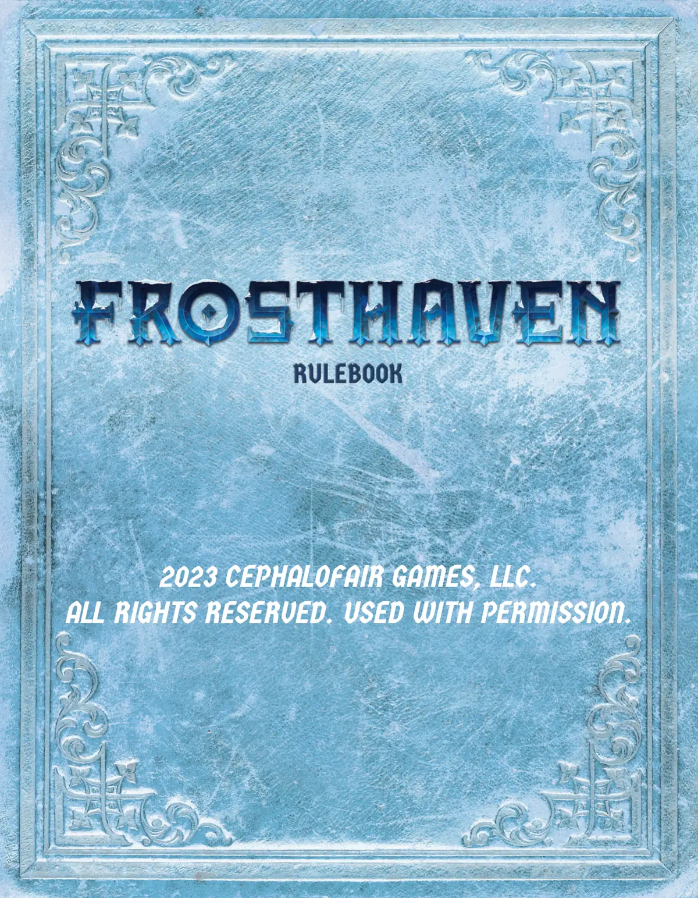
2023 CEPHALOFAIR GAMES, LLC.
保留所有权利。经授权使用。
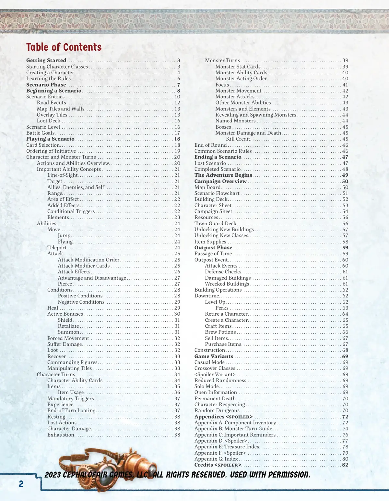
目录
入门指南 . . . . . . . . . . . . . . . . . . . . . . . . . . . . . . . . . . . . . . . . . . . . . . . . . 3
初始职业 . . . . . . . . . . . . . . . . . . . . . . . . . . . . . . . . . . . . . . . . . . . . . . . . 3
创建角色 . . . . . . . . . . . . . . . . . . . . . . . . . . . . . . . . . . . . . . . . . . . . . . . . 4
学习规则 . . . . . . . . . . . . . . . . . . . . . . . . . . . . . . . . . . . . . . . . . . . . . . . . 6
场景阶段 . . . . . . . . . . . . . . . . . . . . . . . . . . . . . . . . . . . . . . . . . . . . . . . . . 7
开始一个场景 . . . . . . . . . . . . . . . . . . . . . . . . . . . . . . . . . . . . . . . . . . 8
场景条目 . . . . . . . . . . . . . . . . . . . . . . . . . . . . . . . . . . . . . . . . . . . . . . . . . 10
道路事件 . . . . . . . . . . . . . . . . . . . . . . . . . . . . . . . . . . . . . . . . . . . . . . . . 12
地图板块和墙壁 . . . . . . . . . . . . . . . . . . . . . . . . . . . . . . . . . . . . . . . . 13
覆盖板块 . . . . . . . . . . . . . . . . . . . . . . . . . . . . . . . . . . . . . . . . . . . . . . . . 13
战利品牌库 . . . . . . . . . . . . . . . . . . . . . . . . . . . . . . . . . . . . . . . . . . . . . . . . . . 16
场景等级 . . . . . . . . . . . . . . . . . . . . . . . . . . . . . . . . . . . . . . . . . . . . . . . . . . 16
战斗目标 . . . . . . . . . . . . . . . . . . . . . . . . . . . . . . . . . . . . . . . . . . . . . . . . . . . . . . 17
进行一场场景 . . . . . . . . . . . . . . . . . . . . . . . . . . . . . . . . . . . . . . . . . . . . 18
卡牌选择 . . . . . . . . . . . . . . . . . . . . . . . . . . . . . . . . . . . . . . . . . . . . . . . . . . . . 18
行动顺序 . . . . . . . . . . . . . . . . . . . . . . . . . . . . . . . . . . . . . . . . . . . . . . . . . 19
角色和怪物回合 . . . . . . . . . . . . . . . . . . . . . . . . . . . . . . . . . . 20
行动和能力概述 . . . . . . . . . . . . . . . . . . . . . . . . . . . . . . . . . . 20
重要能力概念 . . . . . . . . . . . . . . . . . . . . . . . . . . . . . . . . . . . . . . . . . . . 21
视线 . . . . . . . . . . . . . . . . . . . . . . . . . . . . . . . . . . . . . . . . . . . . . . . . . 21
目标 . . . . . . . . . . . . . . . . . . . . . . . . . . . . . . . . . . . . . . . . . . . . . . . . . . 21
盟友、敌人和自己 . . . . . . . . . . . . . . . . . . . . . . . . . . . . . . . . 21
范围 . . . . . . . . . . . . . . . . . . . . . . . . . . . . . . . . . . . . . . . . . . . . . . . . . 21
效果范围 . . . . . . . . . . . . . . . . . . . . . . . . . . . . . . . . . . . . . . . . . . . 22
额外效果 . . . . . . . . . . . . . . . . . . . . . . . . . . . . . . . . . . . . . . . . . . . 22
条件触发器 . . . . . . . . . . . . . . . . . . . . . . . . . . . . . . . . . . . . 22
元素 . . . . . . . . . . . . . . . . . . . . . . . . . . . . . . . . . . . . . . . . . . . . . . . 23
能力 . . . . . . . . . . . . . . . . . . . . . . . . . . . . . . . . . . . . . . . . . . . . . . . . . . . . . 24
移动 . . . . . . . . . . . . . . . . . . . . . . . . . . . . . . . . . . . . . . . . . . . . . . . . . . 24
跳跃 . . . . . . . . . . . . . . . . . . . . . . . . . . . . . . . . . . . . . . . . . . . . . . 24
飞行 . . . . . . . . . . . . . . . . . . . . . . . . . . . . . . . . . . . . . . . . . . . . . . 24
传送 . . . . . . . . . . . . . . . . . . . . . . . . . . . . . . . . . . . . . . . . . . . . . . . . 24
攻击 . . . . . . . . . . . . . . . . . . . . . . . . . . . . . . . . . . . . . . . . . . . . . . . . . 25
攻击修改顺序 . . . . . . . . . . . . . . . . . . . . . . . . . . . . . . . . 25
攻击修改卡 . . . . . . . . . . . . . . . . . . . . . . . . . . . . . 25
攻击效果 . . . . . . . . . . . . . . . . . . . . . . . . . . . . . . . . . . . . . 26
优势与劣势 . . . . . . . . . . . . . . . . . . . . . . . . . . . . . . . . . . . . . . . . 27
穿透 . . . . . . . . . . . . . . . . . . . . . . . . . . . . . . . . . . . . . . . . . . . . . . 27
状态 . . . . . . . . . . . . . . . . . . . . . . . . . . . . . . . . . . . . . . . . . . . . . . 28
积极状态 . . . . . . . . . . . . . . . . . . . . . . . . . . . . . . . . 28
消极状态 . . . . . . . . . . . . . . . . . . . . . . . . . . . . . . . . 29
治疗 . . . . . . . . . . . . . . . . . . . . . . . . . . . . . . . . . . . . . . . . . . . . . . . . . . . . 29
主动奖励 . . . . . . . . . . . . . . . . . . . . . . . . . . . . . . . . . . . . . . . . 30
护盾 . . . . . . . . . . . . . . . . . . . . . . . . . . . . . . . . . . . . . . . . . . . . . . 31
反击 . . . . . . . . . . . . . . . . . . . . . . . . . . . . . . . . . . . . . . . . . . 31
召唤 . . . . . . . . . . . . . . . . . . . . . . . . . . . . . . . . . . . . . . . . . . 31
强制移动 . . . . . . . . . . . . . . . . . . . . . . . . . . . . . . . . . . . . . . 32
承受伤害 . . . . . . . . . . . . . . . . . . . . . . . . . . . . . . . . . . . . . . . . . . 32
战利品 . . . . . . . . . . . . . . . . . . . . . . . . . . . . . . . . . . . . . . . . . . . . . . . . . . . . 32
恢复 . . . . . . . . . . . . . . . . . . . . . . . . . . . . . . . . . . . . . . . . . . . . . . . . 33
指挥单位 . . . . . . . . . . . . . . . . . . . . . . . . . . . . . . . . . . . . . . . . . 33
操控板块 . . . . . . . . . . . . . . . . . . . . . . . . . . . . . . . . . . . . . 33
角色回合 . . . . . . . . . . . . . . . . . . . . . . . . . . . . . . . . . . . . . . . . . . . 34
角色能力卡 . . . . . . . . . . . . . . . . . . . . . . . . . . . . . . . . 34
物品 . . . . . . . . . . . . . . . . . . . . . . . . . . . . . . . . . . . . . . . . . . . . . . . . . . 35
物品使用 . . . . . . . . . . . . . . . . . . . . . . . . . . . . . . . . . . . . . . . . . 36
必发触发 . . . . . . . . . . . . . . . . . . . . . . . . . . . . . . . . . . . . 37
经验 . . . . . . . . . . . . . . . . . . . . . . . . . . . . . . . . . . . . . . . . . . . . . 37
回合结束搜刮 . . . . . . . . . . . . . . . . . . . . . . . . . . . . . . . . . . . . 37
休息 . . . . . . . . . . . . . . . . . . . . . . . . . . . . . . . . . . . . . . . . . . . . . . . . . 38
失去的行动 . . . . . . . . . . . . . . . . . . . . . . . . . . . . . . . . . . . . . 38
角色伤害 . . . . . . . . . . . . . . . . . . . . . . . . . . . . . . . . . . . . . 38
疲劳 . . . . . . . . . . . . . . . . . . . . . . . . . . . . . . . . . . . . . . . . . . . . 38
怪物回合 . . . . . . . . . . . . . . . . . . . . . . . . . . . . . . . . . . . . . . . . . . . . . 39
怪物状态卡 . . . . . . . . . . . . . . . . . . . . . . . . . . . . . . . . . . . . 39
怪物能力卡 . . . . . . . . . . . . . . . . . . . . . . . . . . . . . . . . 40
怪物行动顺序 . . . . . . . . . . . . . . . . . . . . . . . . . . . . . . . . 40
专注 . . . . . . . . . . . . . . . . . . . . . . . . . . . . . . . . . . . . . . . . . . . . . . . . . . 41
怪物移动 . . . . . . . . . . . . . . . . . . . . . . . . . . . . . . . . . . . . 42
怪物攻击 . . . . . . . . . . . . . . . . . . . . . . . . . . . . . . . . . . . . . . . . 42
其他怪物能力 . . . . . . . . . . . . . . . . . . . . . . . . . . . . . . . 43
怪物与元素 . . . . . . . . . . . . . . . . . . . . . . . . . . . . . . . . 43
揭示与生成怪物 . . . . . . . . . . . . . . . . . . . . . . . . . . . . . . . . 44
命名怪物 . . . . . . . . . . . . . . . . . . . . . . . . . . . . . . . . . . . . . 44
Boss . . . . . . . . . . . . . . . . . . . . . . . . . . . . . . . . . . . . . . . . . . . . . . . . . 45
怪物伤害与死亡 . . . . . . . . . . . . . . . . . . . . . . . . . . . . 45
击杀功劳 . . . . . . . . . . . . . . . . . . . . . . . . . . . . . . . . . . . . . . . . . 45
回合结束 . . . . . . . . . . . . . . . . . . . . . . . . . . . . . . . . . . . . . . . . . . . . . . . . . . . 46
常见场景规则 . . . . . . . . . . . . . . . . . . . . . . . . . . . . . . . . . . . . . . . . . 46
结束场景 . . . . . . . . . . . . . . . . . . . . . . . . . . . . . . . . . . . . . . . . . . . . . 47
失败场景 . . . . . . . . . . . . . . . . . . . . . . . . . . . . . . . . . . . . . . . . . . . . . . . . . . . 47
召唤蹒跚的骷髅
!
!
生死之间
对你接下来的三个 来源，
抵消 。
!
自身
-
召唤蹒跚的骷髅
!
生死之间
!
自身
2023 CEPHALOFAIR GAMES, LLC. 保留所有权利. 经授权使用.
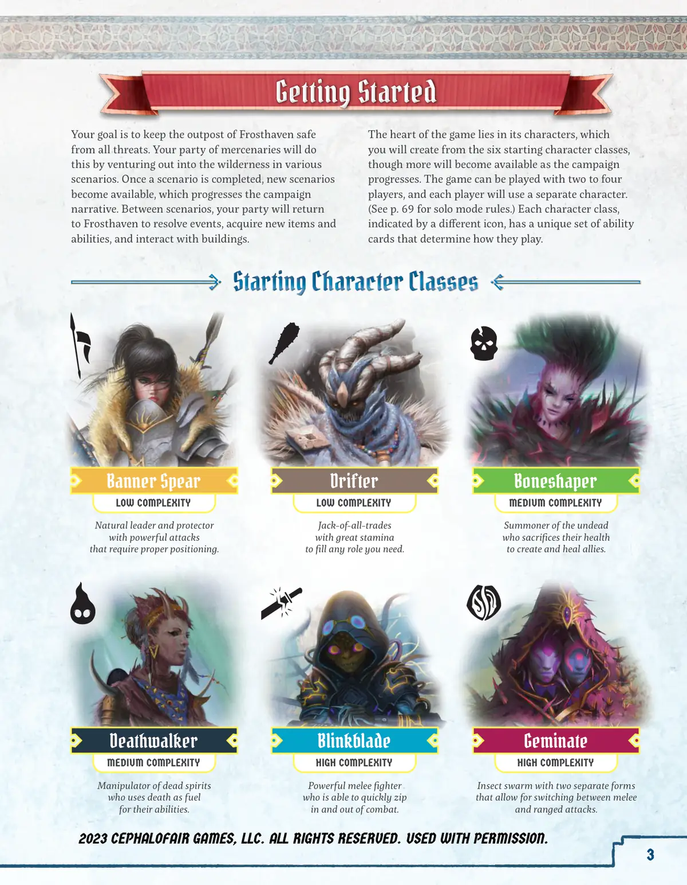
你的目标是保护 Frosthaven（寒境前哨）免受所有威胁。你的佣兵小队将通过在各种场景中进入荒野来实现这一目标。当一个场景完成后，新的场景将会解锁，从而推进战役叙事。在场景之间，你的小队将返回 Frosthaven 解决事件，获取新物品和能力，并与建筑互动。
游戏的核心在于其角色，你可以从六个初始职业中创建这些角色，尽管随着战役的推进会有更多职业可用。游戏可容纳2至4名玩家，每位玩家将使用一个独立角色。（单人模式规则见第69页。）每个职业由不同的图标表示，拥有独特的能力卡组，决定了他们的游戏方式。
初始职业
初始职业
入门指南
入门指南
天生的领袖和保护者，拥有需要适当定位的强力攻击。
低复杂度
长矛旗手
操控亡灵的操纵者，将死亡作为其能力的燃料。
中等复杂度
行尸者
亡灵召唤者，牺牲自己的健康来创造和治疗盟友。
中等复杂度
塑骨者
拥有两种独立形态的虫群，允许在近战和远程攻击之间切换。
高复杂度
双子体
多面手，拥有出色的耐力，可以填补你需要的任何角色。
低复杂度
漂泊者
强大的近战战士，能够快速进出战斗。
高复杂度
闪刃
2023 CEPHALOFAIR GAMES, LLC. 保留所有权利。经授权使用。
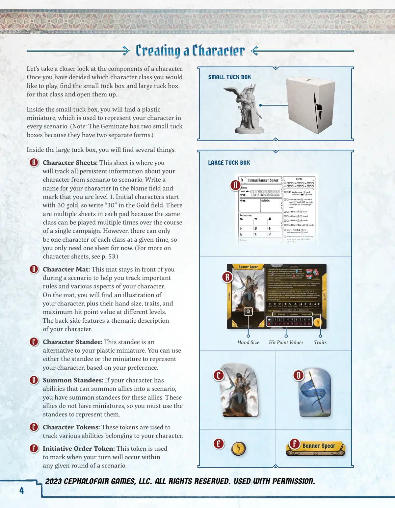
让我们更仔细地看看角色组件。
一旦你决定要玩哪个职业类别，找到该类别的小收纳盒和大收纳盒并打开它们。
在小收纳盒内，你会找到一个塑料小雕像，用于在每个场景中代表你的角色。（注意：双子族有两个小收纳盒，因为他们有两种独立形态。）
在大收纳盒内，你会找到几样东西：
角色表：这张表用于跟踪你的角色在各个场景中的所有持久信息。在姓名字段中为你的角色写一个名字，并标记你是1级。初始角色从30金币开始，所以在金币字段中写"30"。每个本子中有多张表格，因为在同一战役过程中，同一职业可以多次游玩。然而，在任何给定时间只能有一个每个职业的角色，所以你现在只需要一张表格。（关于角色表的更多信息，参见第53页。）
角色垫：这张垫子在场景中会放在你面前，帮助你跟踪重要规则和角色的各个方面。
在垫子上，你会找到你角色的插图，以及他们在不同等级时的手牌大小、特质和最大生命值。
背面有角色的主题描述。
角色立牌：这张立牌是你塑料小雕像的替代品。你可以根据个人喜好使用立牌或小雕像来代表你的角色。
召唤立牌：如果你的角色有能在场景中召唤盟友的能力，你有这些盟友的召唤立牌。这些盟友没有小雕像，所以你必须使用立牌来代表他们。
角色指示物：这些指示物用于跟踪属于你角色的各种能力。
行动顺序指示物：这个指示物用于标记在你的回合中，在场景的任何给定回合内何时发生。
A
B
C
D
E
F
创建角色
创建角色
大收纳盒
小收纳盒
F
手牌大小
生命值：
：
：
：
：
：
金币：
备注：
特长
姓名：
等级：
经验值：
经验值：
资源：
加一张牌
+
加一张牌
1+
加两张牌
1+
加两张"1，自己"牌
用一张"1"牌替换一张牌
1-
在你每次长休息结束时，授予3格范围内的一个盟友
2
忽略物品效果并移除一张牌
1-
用一张"为每个目标相邻的盟友加1"牌替换一张牌
+
1+
人类旗帜长矛
A
B
C
D
E
特质
2023 CEPHALOFAIR GAMES, LLC. 保留所有权利。经许可使用。
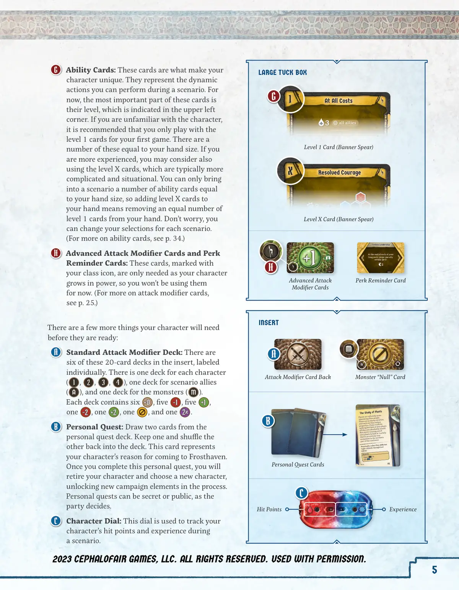
能力卡：这些卡牌让你的角色独一无二。它们代表你在场景中可以执行的动态行动。目前，这些卡牌最重要的部分是它们的等级，显示在左上角。如果你不熟悉这个角色，建议第一局游戏只使用等级1的卡牌。这些卡牌的数量等于你的手牌数。如果你更有经验，可以考虑也使用等级X卡牌，这些卡牌通常更复杂且依赖情境。你只能带入场景数量等于你手牌数的能力卡，所以向手牌中加入等级X卡牌意味着从手牌中移除同等数量的等级1卡牌。别担心，你可以为每个场景更改你的选择。（关于能力卡的更多信息，参见第34页。）
高级攻击修正卡和特权提醒卡：这些卡牌标有你的职业图标，只在你的角色力量增长时才需要，所以你现在不会用到它们。（关于攻击修正卡的更多信息，参见第25页。）
在角色准备好之前，还需要几样东西：
标准攻击修正牌库：内含六个20张牌的牌库，分别标记。每个角色(1, 2, 3, 4)有一个牌库，场景盟友(A)有一个牌库，怪物(M)有一个牌库。
每个牌库包含六张0，五张-，五张+，一张，一张，一张/，和一张X。
个人任务：从个人任务牌库中抽取两张牌。保留一张，将另一张洗回牌库。这张牌代表你角色来到寒霜港(Frosthaven)的原因。一旦你完成这个个人任务，你将退休你的角色并选择一个新角色，在此过程中解锁新的战役元素。个人任务可以是秘密的也可以是公开的，由队伍决定。
角色转盘：这个转盘用于在场景中追踪你角色的生命值和经验值。
大收纳盒
内置组件
不惜代价
所有盟友承受 1点伤害，每个盟友
等级1卡牌（长矛兵）
X
已解决的勇气
等级X卡牌（长矛兵）
X
攻击修正卡牌背面
经验值
怪物"空"卡牌
M
0471
0471
M
A
G
C
特权提醒卡
在你每次长休息结束时，授予 3范围内的一个盟友：
不知疲倦的领导力
0058
0058
+ 1+ 1
0053
0053
H
高级攻击修正卡牌
个人任务卡牌
B
生命值
奖励
植物比人有趣得多。
有那么多品种，每种都有独特的特性。
如果你能整天只看新植物，你绝对会的。
但你正在看的新植物越来越少。幸运的是，
大陆北部有一个全新的生态系统。
个人收集五种不同的
通过战利品指示物来研究草药类型。
植物研究
开放 24
（替代： 42）
2023 CEPHALOFAIR GAMES, LLC. 保留所有权利。经授权使用。
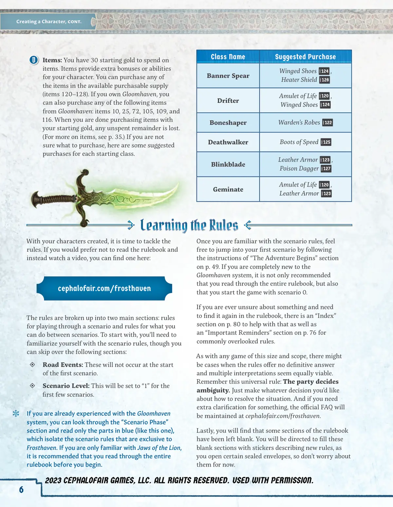
职业名称
建议购买
长矛旗手
翼鞋 124，
heater 盾牌 128
漂泊者
生命护符 120，
翼鞋 124
塑骨者
守护者长袍 122
死亡行者
速度之靴 125
闪刃
皮甲 123，
毒刃 127
双子
生命护符 120，
皮甲 123
角色创建完成后，是时候开始学习规则了。如果你不想阅读规则书而是观看视频，可以在这里找到：
cephalofair.com/frosthaven
规则分为两个主要部分：进行场景的规则和场景之间可以做什么的规则。首先，你需要熟悉场景规则，但可以跳过以下部分：
"
道路事件：这些不会在第一个场景开始时发生。
"
场景等级：前几个场景将设置为"1"。
如果你已经熟悉 Gloomhaven 系统，可以浏览"场景阶段"部分，只阅读蓝色部分（如本部分），这些部分隔离了 Frosthaven 独有的场景规则。如果你只熟悉《狮颚》，建议在开始前通读整个规则书。
一旦你熟悉了场景规则，可以按照第 49 页"冒险开始"部分的说明开始你的第一个场景。如果你对 Gloomhaven 系统完全陌生，不仅建议你通读整个规则书，还建议从场景 0 开始游戏。
如果你对某些事情不确定，需要在规则书中再次查找，第 80 页有"索引"部分可以帮助你，第 76 页还有"重要提醒"部分用于处理容易被忽视的规则。
与任何规模和范围的游戏一样，有时规则可能没有明确的答案，多种解释似乎都同样可行。请记住这条通用规则：小队决定模糊之处。只需就如何解决情况做出你喜欢的决定即可。如果你需要额外的澄清，官方 FAQ 将在 cephalofair.com/frosthaven 维护。
最后，你会发现规则书的某些部分是空白的。当你打开某些密封的信封时，会被指示用描述新规则的贴纸填充这些空白部分，所以现在不用担心它们。
"
物品：你有 30 起始金币可用于购买物品。物品为你的角色提供额外的奖励或能力。你可以购买可用供应品中的任何物品（物品 120-128）。如果你拥有 Gloomhaven，还可以从 Gloomhaven 中购买以下任何物品：物品 10、25、72、105、109 和
- 当你用起始金币完成购买物品后，任何未花费的剩余都会丢失。（关于物品的更多信息，请参见第35页。）如果你不确定购买什么，这里为每个起始职业提供了一些建议购买。
学习规则
学习规则
创建角色，续
创建角色，续
2023 CEPHALOFAIR GAMES, LLC. 保留所有权利。经授权使用。
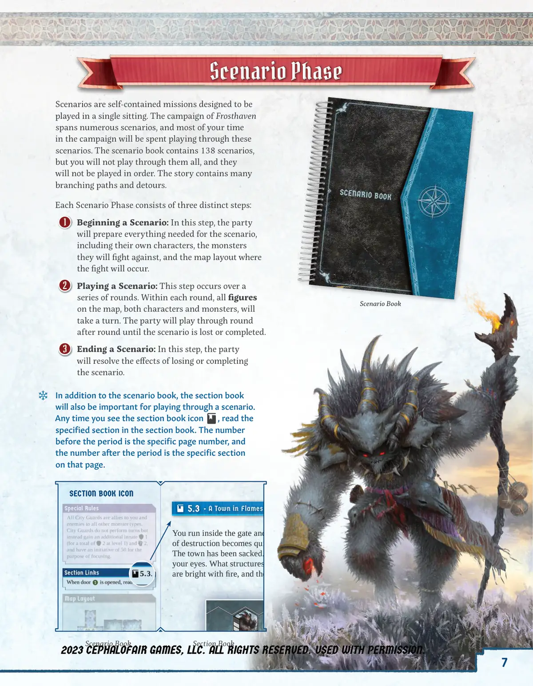
你冲进大门，眼前的毁灭景象让你目不暇接。
城镇已被洗劫一空。
你的眼睛。哪些结构
在火光中明亮，并且
5.3 • 燃烧中的城镇 (
场景是设计为单次游戏的自包含任务。Frosthaven（寒霜要塞）战役包含众多场景，你在战役中的大部分时间都将用于游玩这些场景。场景书包含138个场景，但你不会游玩全部场景，也不会按顺序游玩。故事包含许多分支路径和绕道。
每个场景阶段包含三个不同的步骤：
开始场景：在此步骤中，队伍将为场景准备所需的一切，包括他们自己的角色、将要对抗的怪物以及战斗将发生的地图布局。
游玩场景：此步骤在一系列回合中进行。在每个回合内，地图上的所有角色和怪物都将行动。队伍将一轮接一轮地游玩，直到场景失败或完成。
结束场景：在此步骤中，队伍将解决场景失败或完成的效果。
除了场景书，章节书对于游玩场景也很重要。任何时候看到章节书图标 s，请阅读章节书中指定的部分。句点前的数字是特定的页码，句点后的数字是该页上的特定部分。
场景阶段
场景阶段
场景书
章节书
场景书
章节书图标
2023 CEPHALOFAIR GAMES, LLC. 保留所有权利。经许可使用。
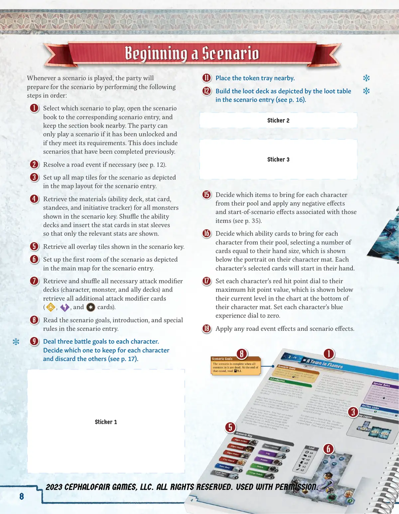
贴纸 3
贴纸 2
贴纸 1
每当进行一个场景时，小队将按照以下步骤顺序为场景做准备：
选择要进行的场景，打开场景书到相应的场景条目，并将章节书放在附近。小队只有在解锁了场景并且满足其要求的情况下才能进行该场景。这确实包括之前已完成过的场景。
如有必要，解决道路事件（参见第12页）。
按照场景条目的地图布局设置该场景的所有地图板块。
获取场景密钥中所示的所有怪物所需的材料（能力牌库、状态卡、立牌和行动顺序追踪器）。洗混能力牌库并将状态卡插入状态卡套中，以便只显示相关状态。
获取场景密钥中所示的所有覆盖板块。
按照场景条目的主地图设置该场景的第一个房间。
获取并洗混所有必要的攻击修正牌库（角色、怪物和盟友牌库）并获取所有额外的攻击修正卡牌（b、c和*卡牌）。
阅读场景条目中的场景目标、介绍和特殊规则。
给每个角色发三张战斗目标卡。决定每个角色保留哪一张并丢弃其他卡牌（参见第17页）。
将指示物托盘放在附近。
按照场景条目中的战利品表构建战利品牌库（参见第16页）。
决定每个角色从其池中携带哪些物品，并应用与这些物品相关的任何负面效果和场景开始效果（参见第35页）。
决定每个角色从其池中携带哪些能力卡，选择数量等于其手牌数的卡牌，该数量显示在其角色卡肖像下方。每个角色选择的卡牌将开始时在其手牌中。
将每个角色的红色生命值拨盘设置为其最大生命值，该值显示在其角色卡底部图表中其当前等级下方。将每个角色的蓝色经验值拨盘设置为零。
应用任何道路事件效果和场景效果。
开始场景
开始场景
2023 CEPHALOFAIR GAMES, LLC. ALL RIGHTS RESERVED. USED WITH PERMISSION.
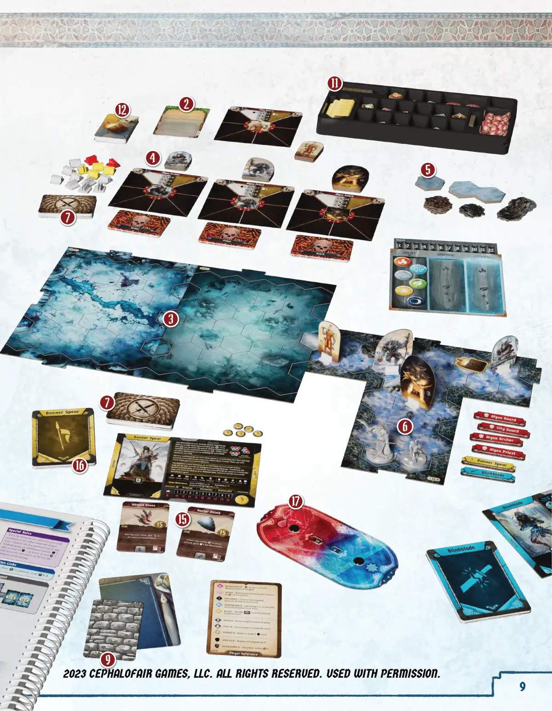
2023 CEPHALOFAIR GAMES, LLC. ALL RIGHTS RESERVED. USED WITH PERMISSION.
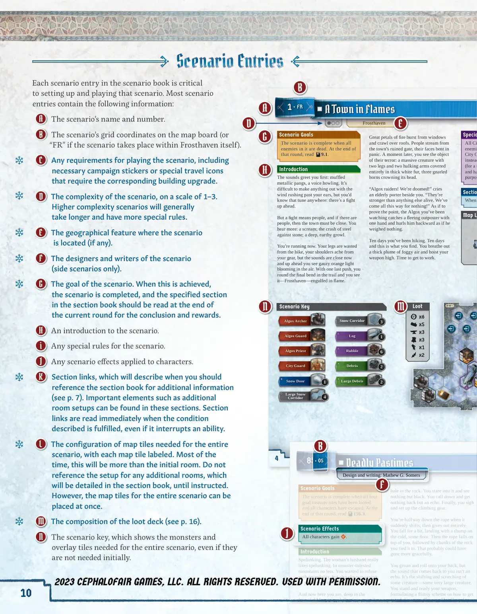
当场景中所有敌人都死亡时，场景即完成。在该回合结束时，阅读
9.1。
当
所有城
市守卫
死亡时，
所有阿
戈克斯弓
箭手（Algox
Archer）和
阿戈克斯守
卫（Algox
Guard）获得
+1 生命值
（用于本
场景）。
声音首先传来：沉闷的金属撞击声，一声咆哮。风从你耳边呼啸而过，很难分辨出任何内容，但你无论如何都会认出那个调子：前面有战斗。
但战斗意味着有人，如果有人，那么城镇一定很近。你听到更多：一声尖叫；钢铁撞击石头的碰撞声；深沉、土腥的低吼。
你现在开始奔跑。双腿因远行而疲惫不堪，肩膀因装备而酸痛，但声音现在很近，前方你看到朦胧的橙色光芒在空气中绽放。用尽最后力气，你绕过小路的最后一个弯，看到了它——霜冻港湾（Frosthaven）——被火焰吞噬。
巨大的花瓣状火焰从窗户喷出，爬上屋顶。人们从城镇被毁的城门涌出，脸上满是恐慌。片刻之后，你看到了他们恐惧的对象：一个巨大的生物，有两条腿和两条粗壮的手臂，全身覆盖着厚厚的白色毛发，头顶有三根扭曲的角。
"阿戈克斯袭击者！我们完蛋了！"你身边的一位老年搬运工喊道。"它们比任何其他活物都强大。我们白走了这一路！"仿佛为了证明这一点，你一直在观察的阿戈克斯用一只手抓住一个逃跑的镇民，像扔轻飘飘的东西一样把他向后抛。
你已经徒步了十天。十天了，这就是你找到的东西。你呼出一团浓雾般的气息，高高举起你的武器。是时候开始工作了。
x6
x5
x3
x3
x1
x2
霜冻港湾（Frosthaven）
地图 L
介绍
特殊
场景目标
章节
阿戈克斯弓箭手
阿戈克斯守卫
阿戈克斯祭司
城市守卫
雪门
大型碎片
碎片
瓦砾
大雪
走廊
雪走廊
原木
场景关键
战利品
1 • FR
一座燃烧的城镇
A
B
G
D
M
N
H
所有角色获得
.
洞穴探险技巧。那个女人的丈夫真的很喜欢洞穴探险。还是在怪物出没的山中。你本想难以置信地拒绝，但她在哭，所以你同意了。
现在你在这里，深入帝国山脉，跟着一张女人给的地图，上面画着一个岩石上的洞。你盯着它，只看到一片黑暗。你朝下喊，只得到回声。最后，你叹了口气，设置了攀岩装备。
当你下到绳子一半时，绳子突然晃动，然后完全断裂。你坠落了一段，重重地摔在冰冷的地面上。然后绳子落在你身上，接着是你把它系住的岩石块。那本可以更优雅一些。
你呻吟着翻过身，但传回来的声音不是...
echo。那是某种生物——某种非常大型的生物——移动和抓挠的声音。
你站起来，准备好武器，构思着一个脆弱的计划，试图摆脱这个困境。此外，你仍然需要
引言
场景目标
场景效果
设计与撰写：Mathew G. Somers
85 • O5
致命的消遣
设计与撰写：Mathew G. Somers
y
F
E
所有角色获得
。
场景效果
J
5 • O5
B
场景书中的每个场景条目对于设置和游玩该场景都至关重要。大多数场景条目包含以下信息：
- 场景的名称和编号。
- 场景在地图版图上的网格坐标（如果场景发生在霜冻要塞内部，则为"FR"）。
- 玩该场景的任何要求，包括必要的战役贴纸或需要相应建筑升级的特殊旅行图标。
- 场景的复杂度，按1-3的等级评定。复杂度更高的场景通常需要更长时间，并有更多特殊规则。
- 场景所在的地形特征（如果有）。
- 场景的设计者和撰写者（仅限侧边场景）。
- 场景的目标。当目标达成时，场景完成，应在当前轮结束时阅读章节书中指定的部分以获取结论和奖励。
- 场景的介绍。
- 场景的任何特殊规则。
- 应用于角色的任何场景效果。
- 章节链接，描述何时应参考章节书获取额外信息（见第7页）。额外的房间设置等重要元素可以在这些部分找到。章节链接在描述的条件满足时立即阅读，即使它会中断一个能力。
- 整个场景所需的地图板块配置，每个地图板块都有标记。大多数情况下，这会比初始房间更多。在得到指示之前，不要参考任何额外房间的设置，这些设置将在章节书中详细说明。然而，整个场景的地图板块可以一次性放置。
- 战利品牌库的组成（见第16页）。
- 场景密钥，显示整个场景所需的怪物和覆盖板块，即使它们不是一开始就需要。
A
B
C
D
E
F
G
H
I
J
K
L
M
N
场景条目
场景条目
2023 CEPHALOFAIR GAMES, LLC. 保留所有权利。经许可使用。
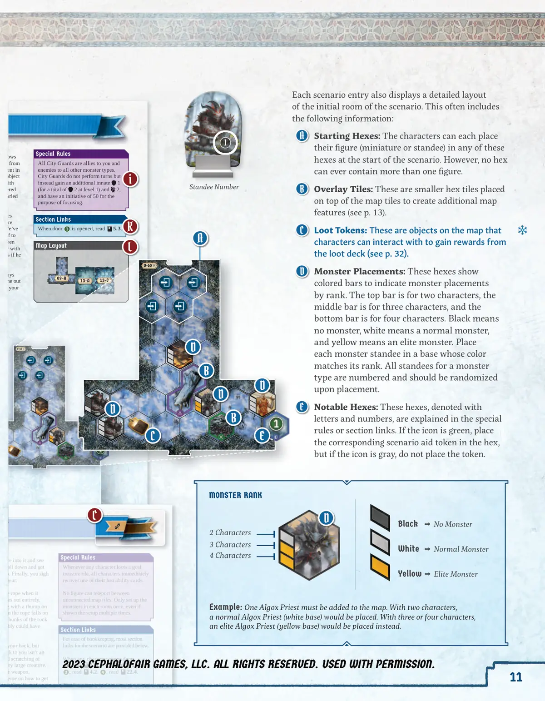
怪物等级
当门1被打开时，阅读5.3。
所有城市守卫都是你的盟友，并且是所有其他怪物类型的敌人。
城市守卫不执行回合，而是获得一个额外的固有能力（在1级时总共为2个）和2个，并且在专注时具有50的先攻值。
当任何角色掠夺目标宝藏板块时，所有角色立即恢复一张他们失去的能力牌。
任何角色都不能在不相连的地图板块之间传送。每个房间的怪物只设置一次，即使多次显示设置说明。
为了便于记录，场景的大部分章节链接如下所示。
当任何角色打开门：
1，阅读130.1。2，阅读110.4。
3，阅读4.2。4，阅读22.4。
当任何角色第一次进入时，进入它并看到所有东西都倒下，然后你叹了口气，你的装备。
当绳子完全用尽时，它砰的一声掉在地上，绳子落在岩石的碎片上。
显然，它本可以击中你的后背，但回到你身边不是个选择，而是抓挠声，一个非常大的生物。
你的武器，关于如何出去的计划，你仍然需要
章节链接
特殊规则
C
每个场景条目还显示了场景初始房间的详细布局。这通常包括以下信息：
起始六边形：角色可以在场景开始时将他们的角色模型（迷你模型或立牌）放置在任何这些六边形中。但是，任何六边形都不能包含超过一个角色模型。
覆盖板块：这些是放置在地图板块上方的小型六边形板块，用于创建额外的地图特征（参见第13页）。
战利品指示物：这些是地图上的物体，角色可以与之互动以从战利品牌库中获得奖励（参见第32页）。
怪物放置：这些六边形带有彩色条，表示按等级的怪物放置。顶部条适用于两个角色，中间条适用于三个角色，底部条适用于四个角色。黑色表示没有怪物，白色表示普通怪物，黄色表示精英怪物。将每个怪物立牌放在与其等级颜色匹配的底座上。同一怪物类型的所有立牌都有编号，放置时应随机排列。
特殊六边形：这些带有字母和数字的六边形在特殊规则或章节链接中有说明。如果图标是绿色的，将相应的场景辅助指示物放在六边形中，但如果图标是灰色的，则不要放置指示物。
A
B
C
D
E
立牌编号
黑色 → 无怪物
白色 → 普通怪物
黄色 → 精英怪物
4个角色
2个角色
3个角色
D
示例：必须将一个Algox祭司添加到地图上。对于两个角色，放置一个普通的Algox祭司（白色底座）。对于三个或四个角色，
将放置一个精英阿尔戈克斯牧师（黄色底座）。
2023 CEPHALOFAIR GAMES, LLC. 保留所有权利。经授权使用。
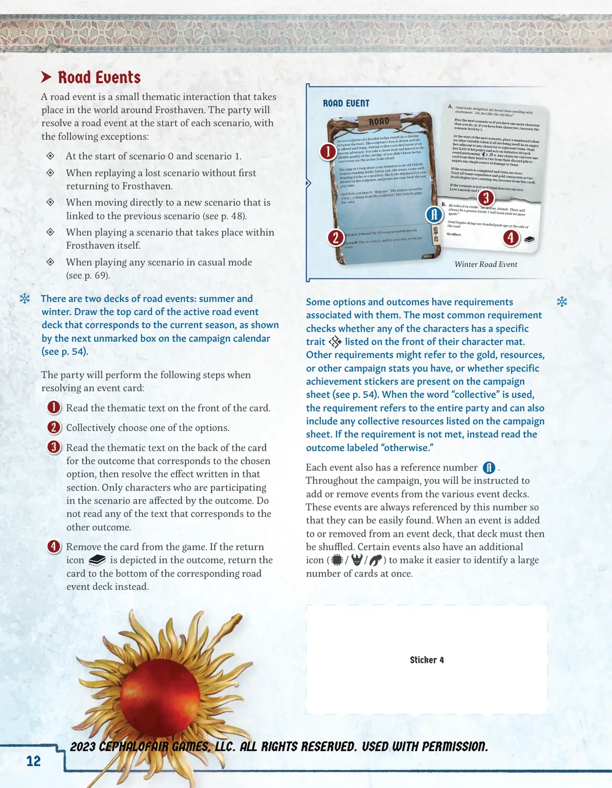
道路事件
贴纸 4
道路事件
道路事件是在 Frosthaven 周围世界中发生的小型主题互动。小队在每个场景开始时将解决一个道路事件，但有以下例外：
在场景 0 和场景 1 开始时。
在重玩失败的场景而没有先返回 Frosthaven 时。
在直接移动到与前一场景相关联的新场景时（见第 48 页）。
在 Frosthaven 内部进行的场景中。
在休闲模式下进行的任何场景（见第 69 页）。
有两套道路事件牌：夏季和冬季。从当前季节对应的活跃道路事件牌库顶摸一张牌，如战役日历上下一个未标记的方框所示（见第 54 页）。
小队在解决事件牌时将执行以下步骤：
阅读卡牌正面的主题文本。
集体选择一个选项。
阅读卡牌背面与所选选项对应的结果主题文本，然后解决该部分中写的效果。只有参与场景的角色才会受到结果影响。不要阅读与另一结果对应的任何文本。
将卡牌移出游戏。如果结果中描绘了返回图标 ，则将卡牌放回对应道路事件牌库的底部。
某些选项和结果有关联要求。最常见的要求是检查是否有任何角色在其角色垫上列有特定特质 t。其他要求可能涉及你拥有的金币、资源或其他战役数据，或战役表上是否存在特定成就贴纸（见第 54 页）。当使用"集体"一词时，要求指的是整个小队，也可以包括战役表上列出的任何集体资源。如果未满足要求，则阅读标记为"否则"的结果。
每个事件还有一个参考编号 A。在整个战役中，你将被指示向各种事件牌库添加或移除事件。这些事件总是通过此编号引用，以便可以轻松找到。当事件被添加到或移出事件牌库时，该牌库必须洗牌。某些事件还有一个额外的图标（u/a/l），以便一次性轻松识别大量卡牌。
A.
B.
Ormi 看起来很高兴，他宽阔的胸膛因兴奋而膨胀。"啊，就像过去的日子一样！"
仿佛你比实际多一个角色一样进行下一个场景，或者，如果你有四个角色，将场景等级提高 1。
在下一个场景开始时，放置一个编号指示物
（如果所有指示物都在使用中，则使用其他合适的指示物）在任意角色相邻的空六边形上放置以代表 Ormi。Ormi 有 (Lx2)+8 点生命值，并在每轮中以 30 的先攻值行动，执行 2、4。任何角色可以弃掉一张手牌或两张弃牌堆中的牌来抵消对 Ormi 的任何单一伤害源。
如果场景完成且 Ormi 存活：
将所有额外经验值和金币转换视为高两级（不计算此卡牌带来的任何增加）。
如果场景失败或 Ormi 未存活：
失去 1 点士气和 1 名士兵。
他坦然接受："没关系，朋友们。永远会有更大的战斗。我会训练直到我们再次相遇！"
Ormi 开始在路边做单手俯卧撑。
无效果。
冬季道路事件
选项 A：要求老妇人解释自己。
选项 B：这是个女巫，你有责任砍倒她。
一个兜帽弓手的冰雕站在树林间的空地上。雕塑的弓已拉开，她固定在半空中，转身向看不见的敌人射出一支带凹槽的箭。你仔细观察，惊叹于雕刻的逼真程度——如果你不知道真相，你甚至会说这个弓手看起来很害怕。
树枝的断裂声吸引了你的注意力，一位年迈的 Valrath 妇人虚弱地站在你面前。她戴着一条挂着冰柱的绳子作为项链。她对你对她的雕塑感兴趣感到不满，并用拐杖指着你来的方向。
然后你听到了："救救我。" 最微弱的声音... 来自雕塑？Valrath 握紧了她的拐杖。
WR-02
A
2023 CEPHALOFAIR GAMES, LLC. 保留所有权利。经授权使用。
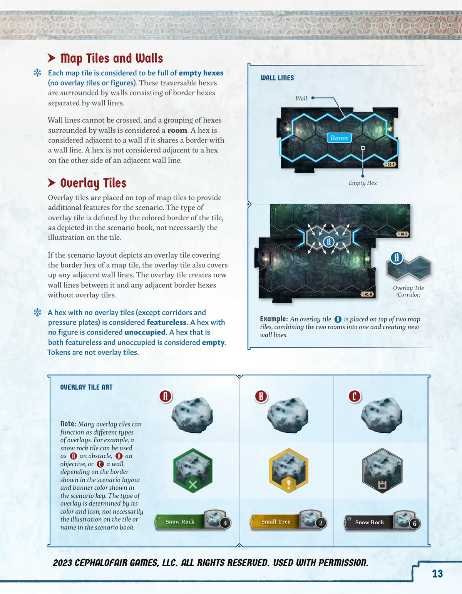
墙线
覆盖板块艺术
地图板块和墙
每个地图板块都被认为是充满六边形空格的（没有覆盖板块或棋子）。这些可通行的六边形被墙包围，墙由墙线分隔的边界六边形组成。
墙线不可跨越，被墙包围的一组六边形被视为一个房间。如果一个六边形与墙线共享边界，则认为该六边形与墙相邻。一个六边形不被认为与相邻墙线另一侧的六边形相邻。
覆盖板块
覆盖板块放置在地图板块上方，为场景提供额外功能。覆盖板块的类型由板块的彩色边框定义，如场景书中所示，不一定是板块上的插图。
如果场景布局显示覆盖板块覆盖了地图板块的边界六边形，则覆盖板块也会覆盖任何相邻的墙线。覆盖板块在它和任何没有覆盖板块的相邻边界六边形之间创建新的墙线。
没有覆盖板块的六边形（走廊和压力板除外）被视为无特征。没有棋子的六边形被视为未被占用。既无特征又未被占用的六边形被视为空的。
指示物不是覆盖板块。
示例：覆盖板块A放置在两个地图板块上方，将两个房间合并为一个，并创建新的墙线。
空六边形
覆盖板块
（走廊）
墙
房间
注意：许多覆盖板块可以作为不同类型的覆盖物使用。例如，一个雪岩石板块可以根据场景布局中显示的边框和场景密钥中显示的横幅颜色，用作A障碍物、B目标或C墙。覆盖物的类型由其颜色和图标决定，不一定是板块上的插图或场景书中的名称。
雪岩石
A
小树
B
雪岩石
C
A
A
2023 CEPHALOFAIR GAMES, LLC. 保留所有权利。经授权使用。
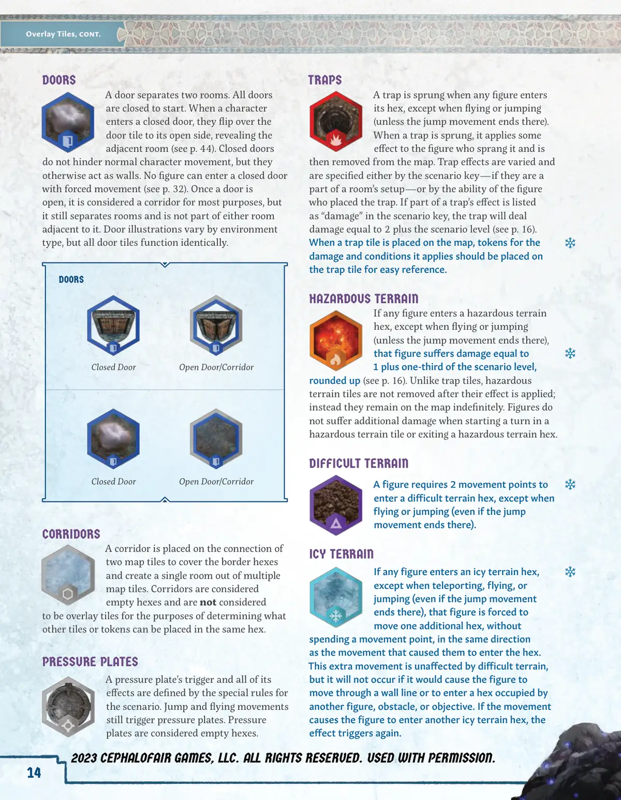
门
门分隔两个房间。所有门开始时都是关闭的。当角色进入一扇关闭的门时，他们将门板块翻到开放的一面，显示相邻的房间（见第44页）。关闭的门不会阻碍正常的角色移动，但它们 otherwise 起到墙壁的作用。没有任何棋子可以通过强制移动进入关闭的门（见第32页）。一旦门打开，在大多数情况下它被视为走廊，但它仍然分隔房间，并且不属于相邻的任何一个房间。门的插图因环境类型而异，但所有门板块的功能相同。
走廊
走廊放置在两个地图板块的连接处，覆盖边界六边形，将多个地图板块创建成一个房间。走廊被视为空的六边形，并且在确定其他板块或指示物可以放置在同一六边形中时，不被视为覆盖板块。
压力板
压力板的触发器和其所有效果由场景的特殊规则定义。跳跃和飞行移动仍然会触发压力板。压力板被视为空的六边形。
陷阱
当任何棋子进入其六边形时，陷阱会被触发，除非是飞行或跳跃（除非跳跃移动结束在那里）。当陷阱被触发时，它会对触发它的棋子施加某种效果，然后从地图上移除。陷阱效果各不相同，并且由场景键指定——如果它们是房间设置的一部分——或者由放置陷阱的棋子的能力指定。如果陷阱效果的一部分在场景键中列为"伤害"，陷阱将造成等于2加上场景等级的伤害（见第16页）。当陷阱板块放置在地图上时，应在其上放置它造成的伤害和状态的指示物，以便于参考。
危险地形
如果任何棋子进入危险地形六边形，除非是飞行或跳跃（除非跳跃移动结束在那里），该棋子将受到等于1加上场景等级三分之一（向上取整）的伤害（见第16页）。与陷阱板块不同，危险地形板块在应用其效果后不会被移除；相反，它们会无限期地留在地图上。棋子在回合开始于危险地形板块上或离开危险地形六边形时不会受到额外伤害。
困难地形
棋子需要2个移动点才能进入困难地形六边形，除非是飞行或跳跃（即使跳跃移动结束在那里）。
冰面地形
如果任何棋子进入冰面地形六边形，除非是传送、飞行或跳跃（即使跳跃移动结束在那里），该棋子必须在不花费移动点的情况下，在与进入该六边形的移动相同的方向上额外移动一个六边形。
这种额外移动不受复杂地形影响，
但如果会导致该单位穿过墙壁线或进入被另一个单位、障碍物或目标占据的六边形，则不会发生。如果移动导致该单位进入另一个冰冻地形六边形，效果会再次触发。
<!--page:N-->
板块覆盖物，续
板块覆盖物，续
关闭的门
关闭的门
打开的门/走廊
打开的门/走廊
门
2023 CEPHALOFAIR GAMES, LLC. 保留所有权利。经授权使用。
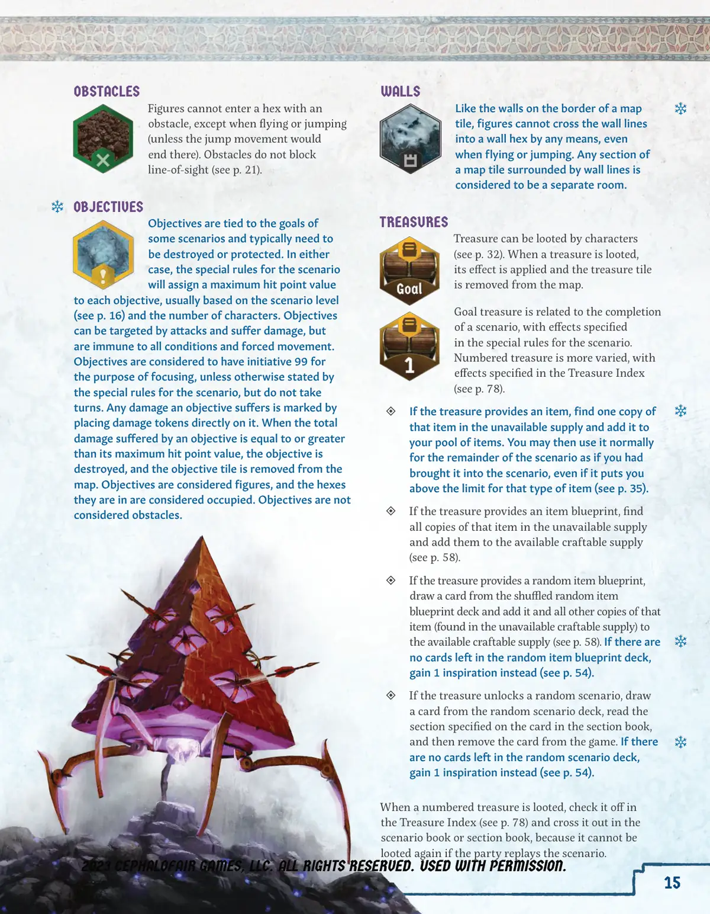
障碍物
除非飞行或跳跃（除非跳跃移动会结束在该处），否则单位不能进入有障碍物的六边形。障碍物不阻挡视线（见第21页）。
目标
目标与某些场景的目标相关联，通常需要被摧毁或保护。无论哪种情况，场景的特殊规则会为每个目标分配最大生命值，通常基于场景等级（见第16页）和角色数量。目标可以被攻击并受到伤害，但对所有状态和强制免疫移动。为了集中注意力的目的，目标被认为具有99点先攻，除非场景的特殊规则另有说明，但不进行回合。目标受到的任何伤害都通过直接在其上放置伤害指示物来标记。当目标受到的总伤害等于或大于其最大生命值时，目标被摧毁，目标板块从地图上移除。目标被视为单位，它们所在的六边形被视为被占据。目标不被视为障碍物。
墙壁
如同地图板块边缘的墙壁，单位不能以任何方式穿过墙壁线进入墙壁六边形，即使是飞行或跳跃时也是如此。地图板块上被墙壁线包围的任何部分都被视为一个独立的房间。
宝藏
宝藏可以被角色掠夺（见第32页）。当宝藏被掠夺时，其效果被应用，宝藏板块从地图上移除。
目标宝藏与场景的完成相关，其效果在场景的特殊规则中指定。
编号宝藏更加多样化，其效果在宝藏索引中指定（见第78页）。
如果宝藏提供一件物品，在不可用供应中找到该物品的一张副本并将其添加到你的物品池中。然后你可以在场景的剩余时间内正常使用它，就像你将其带入场景一样，即使它使你超过了该类型物品的限制（见第35页）。
如果宝藏提供物品蓝图，在不可用制作供应中找到该物品的所有副本并将它们添加到可用制作供应中（见第58页）。
如果宝藏提供随机物品蓝图，从洗好的随机物品蓝图牌库中抽取一张牌，将该牌及其该物品的所有其他副本（在不可用制作供应中找到的）添加到可用制作供应中（见第58页）。如果随机物品蓝图牌库中没有剩余的牌，则改为获得1点灵感（见第54页）。
如果宝藏解锁随机场景，从随机场景牌库中抽取一张牌，阅读牌上指定章节中的内容，然后将该牌从游戏中移除。如果
如果随机情景牌库中没有剩余卡牌，
则获得1点灵感（见第54页）。
当编号的宝物被掠夺时，在宝物索引中勾选它（见第78页），并在情景书或章节书中划掉它，因为如果队伍重玩该情景，它不能再次被掠夺。
2023 CEPHALOFAIR GAMES, LLC. 保留所有权利。经授权使用。
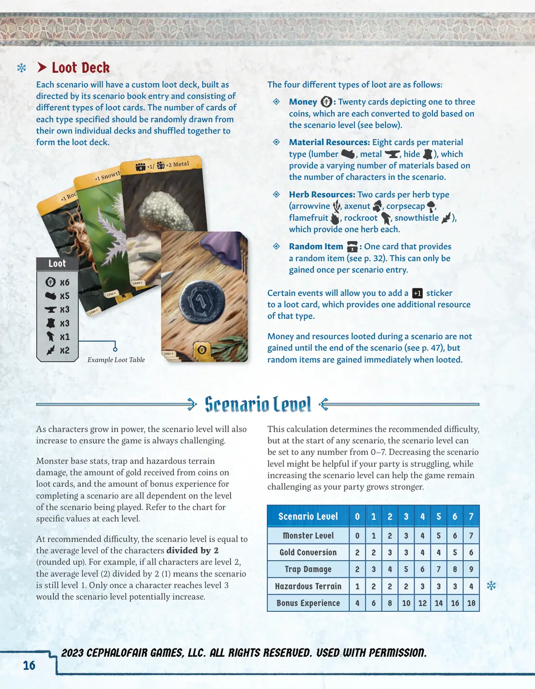
战利品牌库
每个场景都会有自定义的战利品牌库，按照其场景条目中的指示构建，并由不同类型的战利品卡牌组成。每种指定类型的卡牌数量应从各自的牌库中随机抽取，然后洗在一起形成战利品牌库。
四种不同类型的战利品如下：
金钱（Money）m：二十张描绘一到三个金币的卡牌，每个根据场景等级转换为金币（见下文）。
材料资源：每种材料类型（木材L、金属M、兽皮H）八张卡牌，根据场景中的角色数量提供不同数量的材料。
草药资源：每种草药类型（箭藤A、斧坚果X、尸帽C、火焰果F、岩根R、雪蓟S）两张卡牌，每种提供一株草药。
随机物品（Random Item）T：一张提供随机物品的卡牌（见第32页）。每个场景条目只能获得一次。
某些事件允许你在战利品卡牌上添加一个+贴纸，该贴纸提供该类型的额外一个资源。
在场景期间获得的金钱和资源直到场景结束时才能获得（见第47页），但随机物品在获得时立即生效。
随着角色力量的增长，场景等级也会提高，以确保游戏始终保持挑战性。
怪物基础属性、陷阱和危险地形的伤害、从战利品卡牌上的金币获得的金额，以及完成场景的额外经验值都取决于所玩场景的等级。请参考图表了解每个等级的具体数值。
在推荐难度下，场景等级等于角色平均等级除以2（向上取整）。例如，如果所有角色都是2级，平均等级（2）除以2（1）意味着场景仍然是1级。只有当角色达到3级时，场景等级才可能提高。
这个计算确定了推荐难度，但在任何场景开始时，场景等级可以设置为0-7之间的任何数字。如果你的队伍遇到困难，降低场景等级可能会有帮助，而随着队伍变得更强大，提高场景等级可以帮助游戏保持挑战性。
场景等级
怪物等级
金币兑换
陷阱伤害
危险地形
额外经验值
场景等级
场景等级
+1 岩根
1390
+1 雪蓟
1392
+1/ +2 金属
1409
1361
1362
1361
x6
x5
x3
x3
x1
x2
战利品
战利品表示例
2023 CEPHALOFAIR GAMES, LLC. ALL RIGHTS RESERVED. USED WITH PERMISSION.
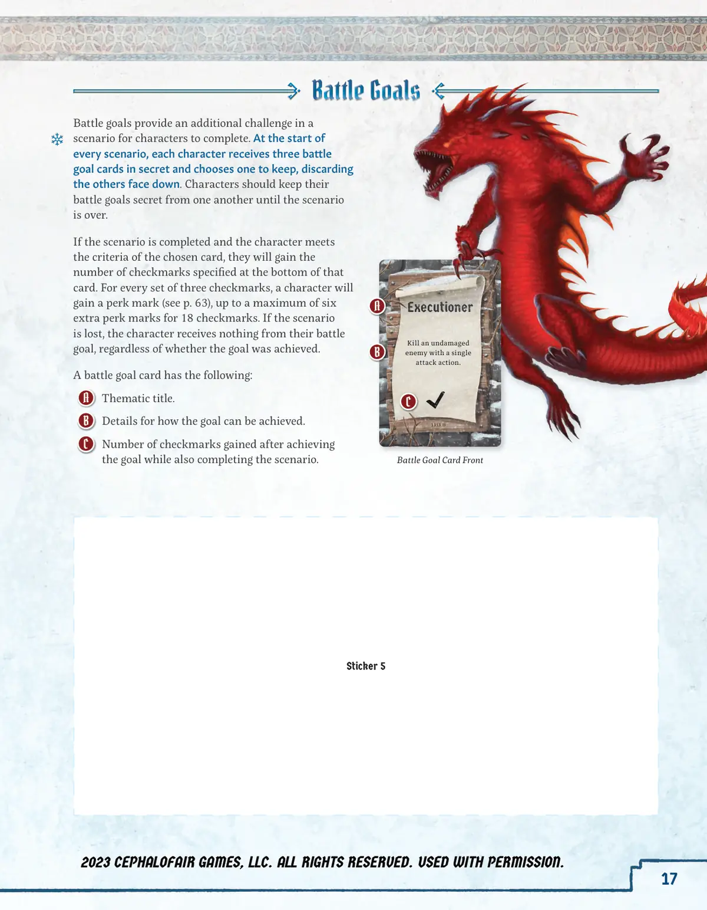
贴纸 5
战斗目标为角色在场景中完成提供了一个额外的挑战。在每个场景开始时，每个角色秘密获得三张战斗目标卡，并选择一张保留，其余的牌面朝下弃掉。角色应将他们的战斗目标对彼此保密，直到场景结束。
如果场景完成且角色达到了所选卡牌的标准，他们将获得该卡牌底部指定的勾选标记数量。每三组勾选标记，角色将获得一个特长标记（参见第 63 页），最多可获得 18 个勾选标记对应的 6 个额外特长标记。如果场景失败，无论目标是否达成，角色都不会从他们的战斗目标中获得任何东西。
战斗目标卡具有以下内容：
主题标题。
目标如何达成的细节。
在达成目标的同时完成场景后获得的勾选标记数量。
A
B
C
战斗目标
战斗目标
战斗目标卡正面
刽子手
1313
通过一次攻击行动击杀一个未受损的敌人。
A
B
C
2023 CEPHALOFAIR GAMES, LLC. 保留所有权利。经授权使用。
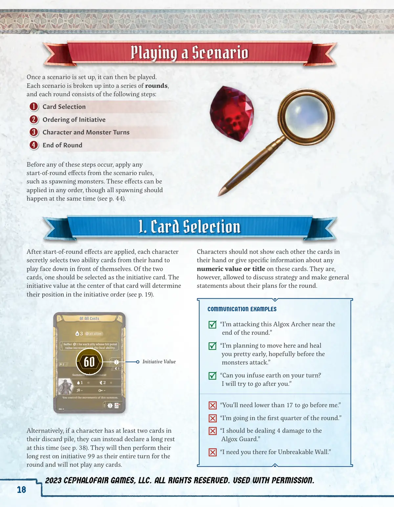
一旦场景设置完毕，就可以开始游戏。
每个场景被分解为一系列轮次，
每轮包含以下步骤：
卡牌选择
先手顺序
角色和怪物回合
轮次结束
在这些步骤开始之前，应用场景规则中的任何
轮次开始效果，例如生成怪物。这些效果可以
以任何顺序应用，但所有生成应同时发生（参见第44页）。
应用轮次开始效果后，每个角色
秘密从手牌中选择两张能力卡牌，面朝下放在自己面前。
在两张卡牌中，一张应被选为先手卡。
该卡牌中央的先手值将决定他们在先手顺序中的位置（参见第19页）。
或者，如果角色在弃牌堆中至少有两张卡牌，
他们可以在此声明进行长休息（参见第38页）。
然后他们将在先手99上执行长休息，作为该轮的整个回合，
并且不会出任何卡牌。
角色不应向彼此展示手牌中的卡牌，或提供关于这些卡牌上
任何数值或标题的具体信息。然而，他们被允许
讨论策略并就本回合的计划做出一般性陈述。
进行场景
进行场景
1. 卡牌选择
1. 卡牌选择
交流示例
"我打算在回合末攻击那个阿尔戈克斯弓箭手。"
"我计划尽早移动到这里治疗你，希望
在怪物攻击之前。"
"你能在你的回合上注入大地元素吗？
我会尝试在你之后行动。"
"你需要低于17才能在我之前行动。"
"我会在回合的前四分之一行动。"
"我应该对阿尔戈克斯守卫造成4点伤害。"
"你需要在那里使用坚不可摧墙。"
-
-
召唤增援
!
!
不惜代价
! 对每个使用治疗能力增加生命值的盟友承受1点伤害。
所有盟友
你控制此召唤物的移动。
先手值
怪物增援
2023 CEPHALOFAIR GAMES, LLC. ALL RIGHTS RESERVED. USED WITH PERMISSION.
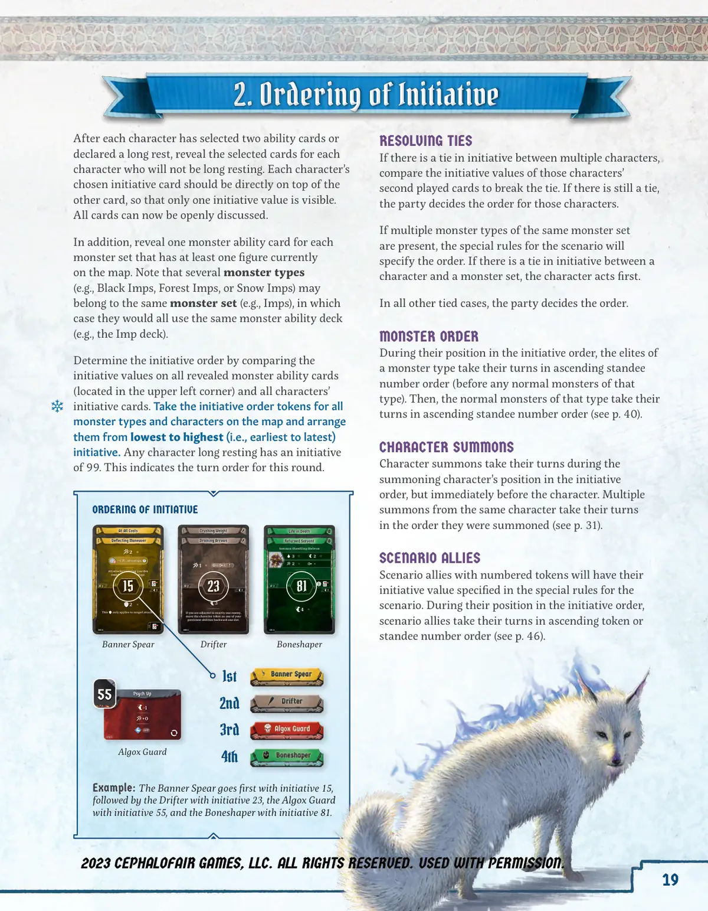
在每个角色选择两张能力卡牌或宣告长休息后，揭示那些不会进行长休息的角色的所选卡牌。每个角色选择的先攻卡牌应直接放在另一张卡牌的上方，以便只看到一个先攻值。现在所有卡牌都可以公开讨论。
此外，为每个在地图上至少有一个当前单位的怪物组揭示一张怪物能力卡牌。请注意，几种怪物类型（例如，黑魔精、森林魔精或雪魔精）可能属于同一个怪物组（例如，魔精组），在这种情况下，它们都将使用相同的怪物能力牌库（例如，魔精牌库）。
通过比较所有已揭示的怪物能力卡牌（位于左上角）和所有角色的先攻卡牌上的先攻值来确定先攻顺序。获取地图上所有怪物类型和角色的先攻顺序指示物，并按从低到高（即从最早到最晚）的先攻值排列它们。任何进行长休息的角色先攻值为99。这表示本回合的回合顺序。
解决平局
如果多个角色之间先攻值出现平局，比较这些角色的第二张打出卡牌的先攻值来打破平局。如果仍然平局，由队伍决定这些角色的顺序。
如果存在同一怪物组的多种怪物类型，特殊规则将指定顺序。如果角色和怪物组之间先攻值出现平局，角色先行动。
在所有其他平局情况下，由队伍决定顺序。
怪物顺序
在其先攻顺序位置期间，一种怪物类型的精英单位按立牌编号升序轮流行动（在该类型的任何普通怪物之前）。然后，该类型的普通怪物按立牌编号升序轮流行动（见第40页）。
召唤物
召唤物在其召唤角色的先攻顺序位置期间行动，但在该角色之前。来自同一角色的多个召唤物按其被召唤的顺序轮流行动（见第31页）。
场景盟友
带有编号指示物的场景盟友的先攻值将在场景的特殊规则中指定。在其先攻顺序位置期间，场景盟友按指示物或立牌编号升序轮流行动（见第46页）。
示例：旗帜长矛手先攻15，接着是漂泊者先攻23，阿尔戈斯守卫先攻55，以及塑骨者先攻81。
2. 先攻顺序
2. 先攻顺序
先攻顺序
-
-
召唤增援
!
!
不惜代价
! 为每个盟友承受1点生命值
价值随治疗能力增加。
所有盟友
你控制这个召唤物的移动。
第二
第一
第三
第四
！
！
偏转机动
本回合所有针对你的攻击获得劣势。
这仅适用于远程攻击。
：+1 ，优势，1
漂泊者
旗帜长矛
心理调整
-1
+0
自身
0753
0753
阿尔戈斯守卫
！
重压
将你一个持续性能力上的角色指示物向后移动一格。
在你接下来的六次近战攻击中，增加+2 。
draining 箭
如果你恰好与一个敌人相邻，将你一个持续性能力上的角色指示物向后移动一格。
3， 2，
塑骨者
-
召唤蹒跚骷髅
！
！
生死之间
在你接下来受到的三次 来源中，抵消 。
！
自身
-
召唤蹒跚骷髅
！
归仆
！
自身
2023 CEPHALOFAIR GAMES, LLC. 保留所有权利。经授权使用。
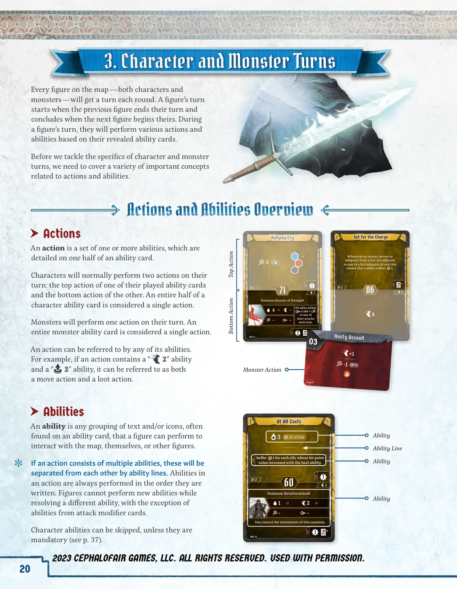
地图上的每个角色——无论是人物还是怪物——每轮都会获得一个回合。一个角色的回合在前一个角色结束其回合时开始，并在下一个角色开始其回合时结束。在角色的回合中，他们将根据其展示的能力卡执行各种行动和能力。
在我们探讨人物和怪物回合的具体细节之前，我们需要涵盖与行动和能力相关的各种重要概念。
行动
行动是一个或多个能力的集合，这些能力详细说明在能力卡的一半上。
人物通常会在他们的回合中执行两个行动：他们打出的一张能力卡顶部的行动和另一张能力卡底部的行动。整个人物能力卡的一半被视为一个单独的行动。
怪物会在他们的回合中执行一个行动。整个怪物能力卡被视为一个单独的行动。
行动可以通过其任何能力来引用。例如，如果一个行动包含一个"M 2"能力和一个"l 2"能力，它可以被称为移动行动和掠夺行动。
能力
能力是任何文本和/或图标的组合，通常可以在能力卡上找到，角色可以通过它来与地图、自身或其他角色互动。
如果一个行动包含多个能力，这些能力将通过能力线相互分隔。行动中的能力总是按照它们书写的顺序执行。角色在解决一个不同的能力时不能执行新能力，攻击修饰卡的能力除外。
人物能力可以被跳过，除非它们是强制性的（见第37页）。
3. 人物和怪物回合
3. 人物和怪物回合
行动和能力概览
行动和能力概览
-
-
召唤增援
!
!
不惜代价
! 每个使用治疗能力增加生命值值的盟友承受1点伤害。
所有盟友
你控制这个召唤物的移动。
能力线
能力
能力
能力
怪物行动
底部行动
顶部行动
!
准备冲锋
每当敌人在本回合中从一个与你不相邻的六边形移动或传送到与你相邻的六边形时，该敌人承受2点伤害。
!
准备冲锋
每当敌人在本回合中从一个与你不相邻的六边形移动或传送到与你相邻的六边形时，该敌人承受2点伤害。
所有2格内的盟友
为他们的每次攻击
+1
-
-
-
召唤力量旗帜
!
!
战吼
-1
+1
突袭
0546
0546
2023 CEPHALOFAIR GAMES, LLC. 保留所有权利. 经授权使用.
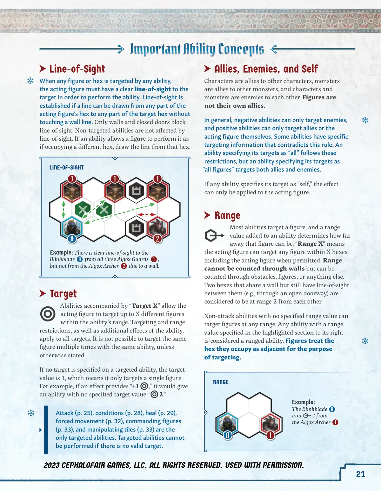
视线
当任何单位或六边形被任何能力瞄准时，执行能力的单位必须拥有到目标的清晰视线才能执行该能力。如果可以从执行单位的六边形的任何部分到目标六边形的任何部分画一条线而不接触墙壁线，则建立视线。只有墙壁和关闭的门会阻挡视线。非瞄准能力不受视线影响。如果能力允许单位仿佛占据不同的六边形来执行能力，则从该六边形画线。
瞄准
带有"瞄准 X"的能力允许执行单位在能力范围内瞄准最多 X 个不同的单位。瞄准和范围限制以及能力的额外效果适用于所有目标。除非另有说明，否则不可能用同一能力多次瞄准同一单位。
如果瞄准能力上未指定目标，则目标值为 1，这意味着它只瞄准单个单位。例如，如果一个效果提供"+1 T"，它将给没有指定目标值的能力赋予"T 2"。
盟友、敌人和自己
角色是其他角色的盟友，怪物是其他怪物的盟友，而角色和怪物彼此是敌人。单位不是自己的盟友。
通常，负面能力只能瞄准敌人，正面能力只能瞄准盟友或执行单位自己。有些能力有特定的瞄准信息与此规则相矛盾。指定其目标为"所有"的能力遵循这些限制，但指定其目标为"所有单位"的能力同时瞄准盟友和敌人。
如果任何能力指定其目标为"自己"，则效果只能应用于执行单位。
范围
大多数能力瞄准一个单位，添加到能力上的范围值决定了该单位可以在多远的距离外被瞄准。"范围 X"意味着执行单位可以瞄准 X 个六边形内的任何单位，包括在允许情况下的执行单位本身。范围不能穿过墙壁计算，但可以通过障碍物、单位或其他任何东西计算。两个共享墙壁但仍有视线之间的六边形（例如，通过开放的门道）被认为彼此相距 2 范围。
没有指定范围值的非攻击能力可以瞄准任何距离的单位。任何在右侧突出部分指定了范围值的能力都被视为远程能力。单位为了瞄准目的，将其占据的六边形视为相邻。
T
R
攻击（第 25 页）、状态（第 28 页）、治疗（第 29 页）、强制移动（第 32 页）、指挥单位（第 33 页）和操控板块（第 33 页）是仅有的瞄准能力。如果没有有效目标，则无法执行瞄准能力。
重要能力概念
重要能力概念
示例：从三个 Algox Guards 1 到 Blinkblade A 有清晰的视线，但由于一堵墙，从 Algox Archer 2 到 Blinkblade A 没有视线。
视线
示例：
Blinkblade A
距离 Algox Archer 1 为 R 2。
射程
2023 CEPHALOFAIR GAMES, LLC. 保留所有权利。经授权使用。
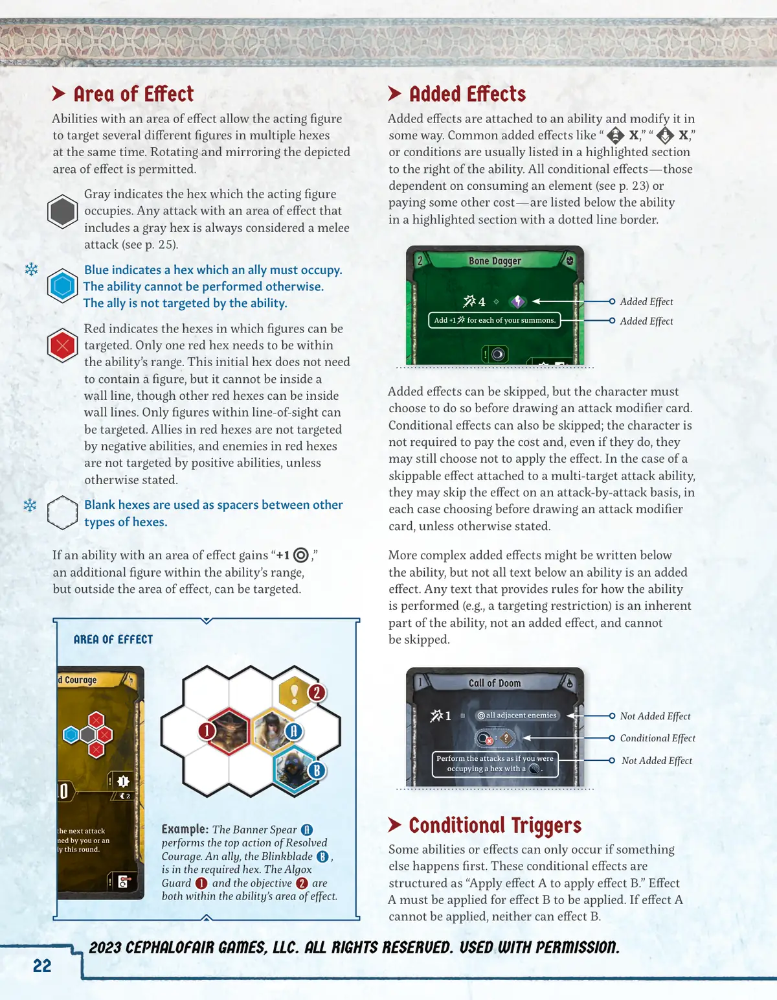
范围效应
具有范围效应的能力允许行动角色同时针对多个六边形中的不同角色。允许旋转和镜像所描绘的范围效应。
灰色表示行动角色占据的六边形。任何包含灰色六边形范围效应的攻击总是被视为近战攻击（见第25页）。
蓝色表示盟友必须占据的六边形。否则无法执行该能力。盟友不被该能力所针对。
红色表示可以角色的六边形。只需要一个红色六边形在能力范围内即可。这个初始六边形不需要包含角色，但不能位于墙体线内，尽管其他红色六边形可以位于墙体线内。只有视线内的角色可以被针对。红色六边形中的盟友不会被负面能力针对，红色六边形中的敌人不会被正面能力针对，除非另有说明。
空白六边形用作其他类型六边形之间的间隔。
如果一个具有范围效应的能力获得"+1T"，能力范围内但范围效应外的一个额外角色可以被针对。
附加效果
附加效果附加于能力并以某种方式修改它。常见的附加效果如"H X"、"L X"或条件通常列在能力右侧的突出显示区域中。所有条件效果——那些依赖于消耗元素（见第23页）或支付其他成本的效果——列在能力下方，带有虚线边框的突出显示区域中。
附加效果可以被跳过，但角色必须在抽取攻击修正卡之前选择这样做。条件效果也可以被跳过；角色不需要支付成本，即使他们支付了，他们仍然可以选择不应用该效果。对于附加于多目标攻击能力的可跳过效果，他们可以基于每次攻击来跳过该效果，在每种情况下都在抽取攻击修正卡之前选择，除非另有说明。
更复杂的附加效果可能写在能力下方，但并非能力下方的所有文本都是附加效果。任何提供如何执行能力规则（例如，目标限制）的文本都是能力的固有部分，不是附加效果，不能被跳过。
条件触发
某些能力或效果只有在其他事情发生后才能发生。这些条件效果的结构为"应用效果A以应用效果B"。必须应用效果A才能应用效果B。如果效果A无法应用，效果B也无法应用。
!
!
ed 勇气
下一次攻击
由你或盟友
在本回合内执行。
范围效应
示例：长矛兵执行已解决能力的顶部行动
勇气。盟友，闪刃B，位于所需六边形。阿洛克斯守卫1和目标2都在技能效果范围内。
末日召唤
执行攻击，就好像你占据了一个带有 的六边形。
所有相邻敌人：
未添加效果
条件效果
未添加效果
骨匕首！
为你的每个召唤物增加+1 。
添加效果
添加效果
2023 CEPHALOFAIR GAMES, LLC. 保留所有权利。经授权使用。
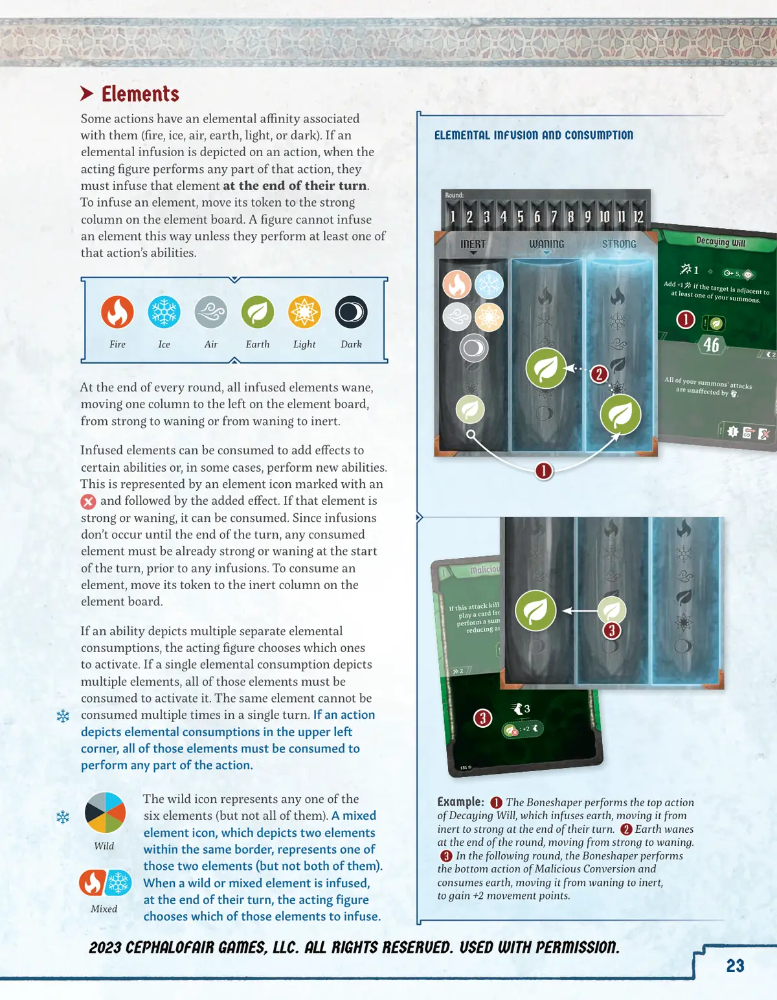
元素
有些行动与特定的元素亲和力相关联（火、冰、气、土、光或暗）。如果一个行动上描绘了元素灌注，当执行该行动的角色执行该行动的任何部分时，他们必须在回合结束时灌注该元素。
要灌注一个元素，将其指示物移动到元素版图上的强效列。除非角色执行了该行动至少一个能力，否则不能通过这种方式灌注元素。
在每轮结束时，所有灌注的元素都会衰减，在元素版图上向左移动一列，从强效列衰减到衰减列，或从衰减列衰减到无效列。
灌注的元素可以被消耗，以添加某些能力的效果，或在某些情况下执行新能力。这通过一个带有加号标记的元素图标表示，后面跟着添加的效果。如果该元素处于强效或衰减状态，它可以被消耗。由于灌注直到回合结束时才发生，任何被消耗的元素必须在回合开始时就已处于强效或衰减状态，在任何灌注之前。要消耗一个元素，将其指示物移动到元素版图上的无效列。
如果一个能力描绘了多个独立的元素消耗，执行该能力的角色选择激活哪些。如果单个元素消耗描绘了多个元素，必须消耗所有这些元素才能激活它。同一个元素不能在一回合内被多次消耗。如果一个行动在左上角描绘了元素消耗，必须消耗所有这些元素才能执行该行动的任何部分。
wild 图标代表六个元素中的任意一个（但不是全部）。混合元素图标，在同一边框内描绘两个元素，代表这两个元素中的一个（但不是两个）。当灌注 wild 或混合元素时，在回合结束时，执行该行动的角色选择灌注哪个元素。
Wild
!
衰弱意志
你所有召唤物的攻击不受 影响。
5,
如果目标与你的至少一个召唤物相邻，则+1 。
!
衰弱意志
5,
如果目标与你的至少一个召唤物相邻，则+1 。
!
气
冰
火
土
光
暗
示例：1 骨塑师执行衰弱意志的顶部行动，在回合结束时灌注土元素，将其从无效状态变为强效状态。2 土元素在轮结束时衰减，从强效变为衰减。3 在下一轮，骨塑师执行恶意转换的底部行动，消耗土元素，将其从衰减变为无效，以获得+2移动点。
!
恶意转换
:
如果此攻击杀死目标，立即从你的弃牌堆中打出一张牌来执行该牌的召唤行动，减少你承受的任何 2点。
!
+2
混合
元素灌注与消耗
2023 CEPHALOFAIR GAMES, LLC. 保留所有权利。经授权使用。
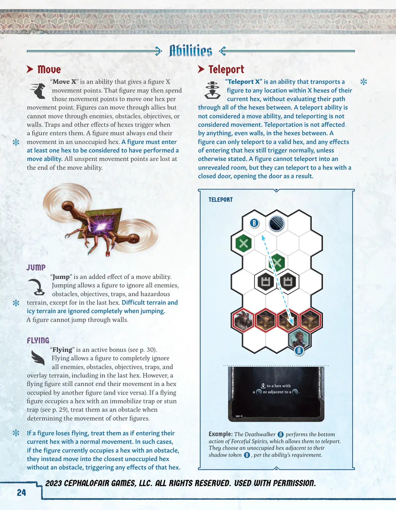
移动
"移动X"是一种给予一个角色X个移动点的能力。该角色可以花费这些移动点，每个移动点移动一个六边形。角色可以穿过盟友，但不能穿过敌人、障碍物、目标物或墙壁。陷阱和六格的其他效果在角色进入时触发。角色必须始终将其移动结束在一个未被占用的六边形中。角色必须至少进入一个六边形才能被认为执行了移动能力。所有未使用的移动点在移动能力结束时都会丢失。
跳跃
"跳跃"是移动能力的附加效果。跳跃允许角色忽略所有敌人、障碍物、目标物、陷阱和危险地形，最后一个六边形除外。跳跃时完全忽略困难地形和冰面地形。角色不能跳过墙壁。
飞行
"飞行"是一个主动奖励（见第30页）。飞行允许角色完全忽略所有敌人、障碍物、目标物、陷阱和叠加地形，包括最后一个六边形。然而，飞行角色仍然不能将其移动结束在另一个角色占据的六边形中（反之亦然）。如果一个飞行角色占据了一个有 immobilize 陷阱或 stun 陷阱的六边形（见第29页），在确定其他角色的移动时，将其视为障碍物。如果一个角色失去飞行能力，则将其视为通过正常移动进入当前六边形。在这种情况下，如果角色当前占据的六边形有障碍物，他们则移动到最近的没有障碍物的未占用六边形，并触发该六边形的任何效果。
传送
"传送X"是一种将角色传送到其当前六边形X格范围内的任何位置的能力，无需评估其穿过所有中间六边形的路径。传送能力不被视为移动能力，传送也不被视为移动。传送不受中间六边形中任何事物的影响，即使是墙壁。角色只能传送到有效的六边形，进入该六边形的任何效果仍然正常触发，除非另有说明。角色不能传送到未揭示的房间，但他们可以传送到有关闭门的六边形，从而打开门。
M
J
F
t
能力
能力
传送
示例：Deathwalker A 执行了 Forceful Spirits 的底部行动，这允许他们传送。根据能力的要求，他们选择了其阴影指示物 B 相邻的一个未占用六边形。
传送到带有
a 或相邻于一个 的六边形。
2023 CEPHALOFAIR GAMES, LLC. ALL RIGHTS RESERVED. USED WITH PERMISSION.
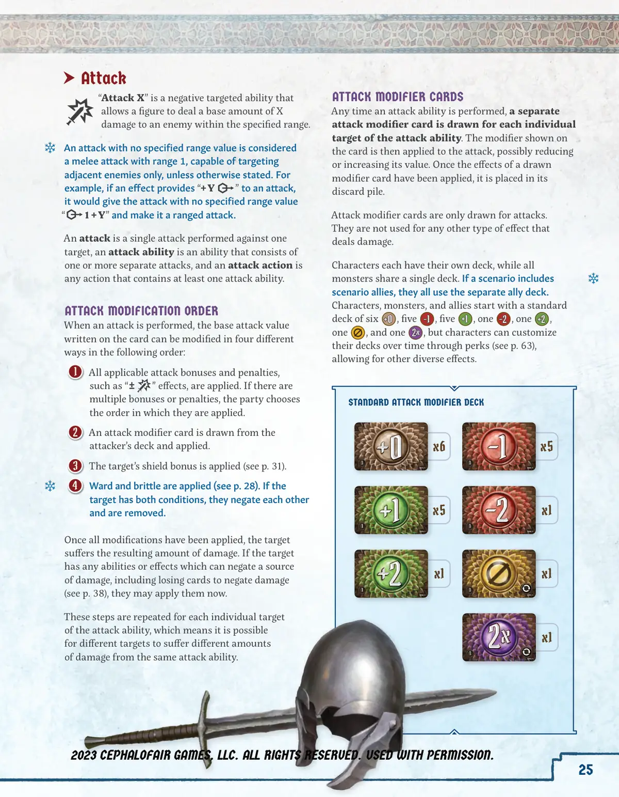
攻击
"攻击X"是一种负面定向能力，允许一个角色对指定范围内的敌人造成基础数值X的伤害。
没有指定范围数值的攻击被视为近战攻击，范围为1，只能针对相邻的敌人，除非另有说明。例如，如果一个效果为攻击提供"+Y R"，它将为没有指定范围数值的攻击提供"R1+Y"，并使其成为远程攻击。
攻击是针对单个目标执行的一次攻击，攻击能力是由一个或多个独立攻击组成的能力，攻击行动是包含至少一个攻击能力的任何行动。
攻击修改顺序
当执行攻击时，卡牌上写的基础攻击值可以按照以下四种不同方式进行修改：
应用所有适用的攻击加值和减值，例如"±A"效果。如果有多个加值或减值，玩家可以选择它们应用的顺序。
从攻击者的牌库中抽取一张攻击修改卡并应用。
目标的护盾加值被应用（见第31页）。
护盾和易碎被应用（见第28页）。如果目标同时具有这两种状态，它们会相互抵消并被移除。
一旦所有修改都已应用，目标将承受 resulting 数量的伤害。如果目标有任何可以抵消伤害来源的能力或效果，包括弃牌来抵消伤害（见第38页），他们现在可以应用这些效果。
对于攻击能力的每个单独目标，这些步骤都会重复，这意味着同一攻击能力可能导致不同的目标承受不同数量的伤害。
攻击修改卡
每当执行攻击能力时，为攻击能力的每个单独目标抽取一张单独的攻击修改卡。然后应用卡牌上显示的修改器，可能减少或增加攻击的数值。一旦抽取的修改卡效果被应用，它就被放入其弃牌堆。
攻击修改卡仅用于攻击。它们不用于任何其他类型造成伤害的效果。
角色各自拥有自己的牌库，而所有怪物共享一个牌库。如果场景包含场景盟友，他们都使用单独的盟友牌库。角色、怪物和盟友起始时都有标准牌库：六张0，五张-，五张+，一张，一张，一张/和一张X，但角色可以通过特长（见第63页）随时间定制他们的牌库，允许其他多样的效果。
A
标准攻击修改牌库
x1
2 X2 X
0392
0392
x1
0391
0391
x6
+ 0
+ 0
0373
0373
x5
- 1- 1
0385
0385
x5
+ 1+ 1
0379
0379
x1
+ 2+ 2
0384
0384
x1
- 2- 2
0390
0390
2023 CEPHALOFAIR GAMES, LLC. 保留所有权利。经授权使用。
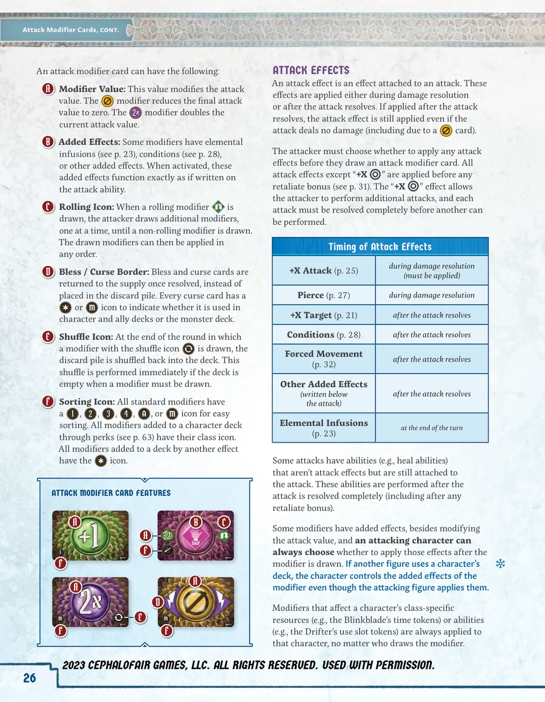
攻击修正卡牌可以具有以下内容：
修正值：此值会修正攻击值。/ 修正将最终攻击值降至零。X 修正会使当前攻击值翻倍。
附加效果：某些修正具有元素灌注（见第23页）、状态（见第28页）或其他附加效果。当激活时，这些附加效果的功能与攻击能力上写明的完全相同。
滚动图标：当抽到滚动修正时，攻击者会一次抽一张额外的修正牌，直到抽到非滚动修正为止。然后可以按任意顺序应用这些抽到的修正牌。
祝福/诅咒边框：祝福和诅咒牌在结算后返回牌库，而不是放入弃牌堆。每张诅咒牌都有一个 * 或 M 图标，表示它用于角色和盟友牌库还是怪物牌库。
洗牌图标：在抽到带有洗牌图标 O 的修正的那个回合结束时，弃牌堆会被洗回牌库。如果在必须抽修正时牌库为空，则立即执行此洗牌。
分类图标：所有标准修正都有 1、2、3、4、A 或 M 图标以便于分类。通过特长（见第63页）添加到角色牌库的所有修正都有其职业图标。通过其他效果添加到牌库的所有修正都有 * 图标。
攻击效果
攻击效果是附加到攻击上的效果。这些效果要么在伤害结算期间应用，要么在攻击结算后应用。如果在攻击结算后应用，即使攻击未造成伤害（包括由于 / 牌），攻击效果仍然会被应用。
攻击者必须在抽攻击修正卡牌之前选择是否应用任何攻击效果。除了"+X T"之外的所有攻击效果都在任何反击加成（见第31页）之前应用。"+X T"效果允许攻击者执行额外攻击，并且每个攻击必须完全解决后才能执行另一个攻击。
某些攻击具有能力（例如，治疗能力），这些能力不是攻击效果，但仍附加到攻击上。这些能力在攻击完全解决后执行（包括在任何反击加成之后）。
某些修正除了修正攻击值外还有附加效果，攻击角色总是可以选择在抽到修正后是否应用这些效果。如果另一个角色使用某角色的牌库，即使攻击角色应用这些效果，该角色也控制修正的附加效果。
影响角色职业特定资源（例如，闪刃的时间指示物）或能力（例如，漂泊者的使用槽位指示物）的修正总是应用于该角色，无论谁抽到修正。
攻击效果的时机
+X 攻击（第25页）
在伤害结算期间
（必须应用）
穿透 (p. 27)
在伤害结算期间
+X 目标 (p. 21)
在攻击结算后
状态 (p. 28)
在攻击结算后
强制移动
(p. 32)
在攻击结算后
其他附加效果
（写在攻击下方）
在攻击结算后
元素灌注
(p. 23)
在回合结束时
A
B
C
D
E
F
攻击修正卡，续
攻击修正卡，续
攻击修正卡特性
M
0508
0508
2 x2 x
M
0472
0472
D
A
A
+ 1+ 1
0379
0379
A
F
F
F
E
+ 2+ 2
自身
0036
0036
A
F
B
C
2023 CEPHALOFAIR GAMES, LLC. 保留所有权利. 经授权使用.
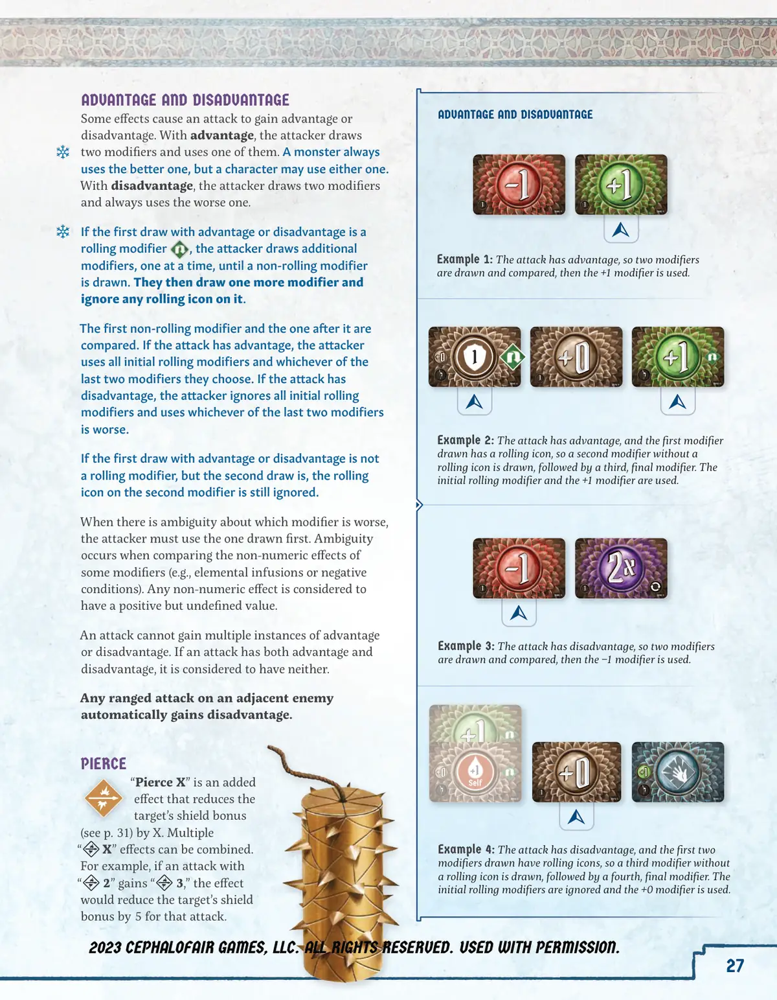
优势与劣势
优势与劣势
某些效果会使攻击获得优势或劣势。拥有优势时，攻击者抽取两张修正牌并使用其中一张。怪物总是使用较好的那张，但角色可以使用任意一张。拥有劣势时，攻击者抽取两张修正牌并总是使用较差的那张。
如果使用优势或劣势时的第一次抽取是滚动修正牌，攻击者需要额外抽取修正牌，一次一张，直到抽到非滚动修正牌。然后他们再抽取一张修正牌，并忽略其上的任何滚动图标。
第一个非滚动修正牌和它之后的那张被比较。如果攻击拥有优势，攻击者使用所有初始滚动修正牌以及最后两张修正牌中他们选择的那张。如果攻击拥有劣势，攻击者忽略所有初始滚动修正牌，并使用最后两张修正牌中较差的那张。
如果使用优势或劣势时的第一次抽取不是滚动修正牌，但第二次抽取是，则仍然忽略第二张修正牌上的滚动图标。
当存在哪张修正牌较差的歧义时，攻击者必须使用先抽到的那张。当比较某些修正牌的非数值效果时（例如，元素灌注或负面状态）会出现歧义。任何非数值效果被认为具有一个正的但未定义的值。
一次攻击不能获得多个优势或劣势实例。如果一次攻击同时拥有优势和劣势，则视为两者都没有。
对相邻敌人的任何远程攻击自动获得劣势。
穿透
"穿透X"是一种附加效果，可将目标的护盾奖励（见第31页）减少X。多个"穿透X"效果可以叠加。例如，如果带有"穿透2"的攻击获得了"穿透3"，则该攻击将目标的护盾奖励减少5。
P
+ 1+ 1
0052
0052
+1
自身
+ 0
+ 0
0054
0054
- 1- 1
0385
0385
- 1- 1
0385
0385
+ 1+ 1
0052
0052
+ 1+ 1
0046
0046
+ 0
+ 0
0373
0373
+ 0
+ 0
0373
0373
+ 1+ 1
0382
0382
2 X2 X
0392
0392
示例2：攻击拥有优势，第一张抽到的修正牌有滚动图标，因此抽到第二张没有滚动图的修正牌，接着是第三张、最终的修正牌。使用初始的滚动修正牌和+1修正牌。
示例4：攻击拥有劣势，前两张抽到的修正牌都有滚动图标，因此抽到第三张没有滚动图的修正牌，接着是第四张、最终的修正牌。忽略初始的滚动修正牌，使用+0修正牌。
示例3：攻击拥有劣势，因此抽两张修正牌进行比较，然后使用-1修正牌。
示例1：攻击拥有优势，因此抽两张修正牌进行比较，然后使用+1修正牌。
+ 0
+ 0
0041
0041
2023 CEPHALOFAIR GAMES, LLC. 保留所有权利。经授权使用。
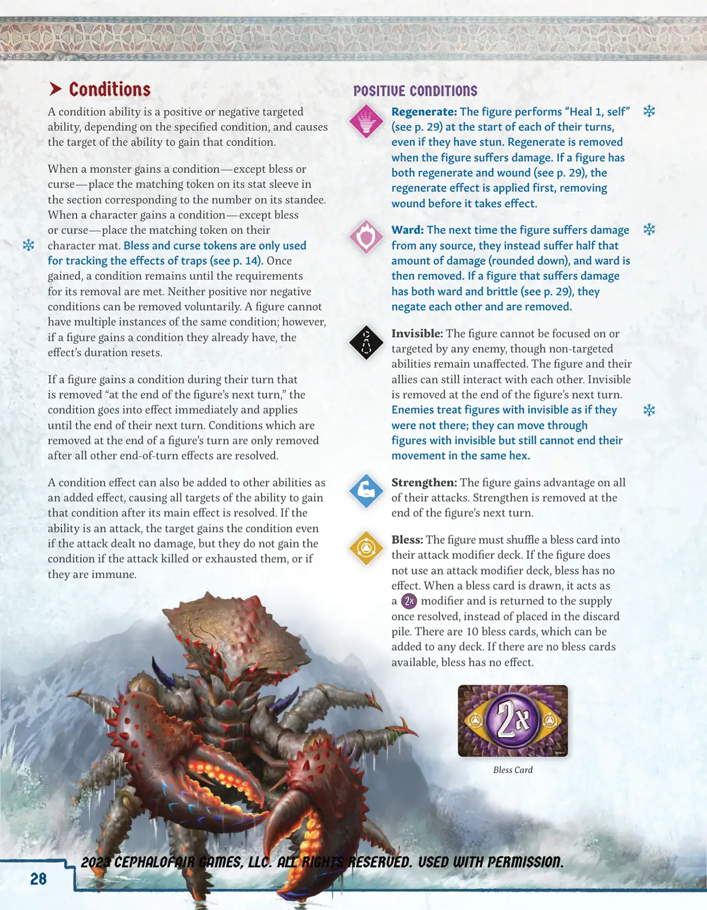
状态
状态能力是一种正面或负面的目标能力，取决于指定的条件，并导致该能力的目标获得该状态。
当怪物获得状态（祝福或诅咒除外）时，将相应的指示物放置在其底座上数字对应的区域，放在其状态袖套上。
当角色获得状态（祝福或诅咒除外）时，将相应的指示物放置在其角色版上。祝福和诅咒指示物仅用于追踪陷阱的效果（见第14页）。一旦获得，状态会一直持续，直到满足其移除条件。正面和负面状态都不能被自愿移除。一个角色不能拥有多个相同状态；然而，如果一个角色获得了已有的状态，该效果的持续时间会重置。
如果一个角色在自己的回合内获得了一个"在角色下个回合结束时移除"的状态，该状态会立即生效并持续到其下个回合结束。在角色回合结束时移除的状态，只有在所有其他回合结束时效果都解决后才会被移除。
状态效果也可以作为附加效果添加到其他能力中，导致该能力的所有目标在其主要效果解决后获得该状态。如果该能力是一次攻击，即使攻击未造成伤害，目标也会获得该状态；但如果攻击杀死了或耗尽了目标，或者目标具有免疫能力，则不会获得该状态。
正面状态
再生：角色在每个自己回合开始时执行"治疗1，自己"（见第29页），即使他们有眩晕状态。当角色受到伤害时，再生状态被移除。如果一个角色同时拥有再生和创伤（见第29页），再生效果会先应用，在创伤生效前移除创伤。
守护：角色下一次从任何来源受到伤害时，改为受到该伤害量的一半（向下取整），然后守护状态被移除。如果一个受到伤害的角色同时拥有守护和易碎（见第29页），它们会相互抵消并被移除。
隐身：角色不能被任何敌人聚焦或锁定为目标，但非目标能力不受影响。角色及其盟友仍然可以相互互动。隐身状态在角色下个回合结束时被移除。
强化：角色在其所有攻击中获得优势。强化状态在角色下个回合结束时被移除。
祝福：角色必须将一张祝福牌洗入其攻击修饰牌库。如果角色不使用攻击修饰牌库，祝福则无效。
效果。当一张祝福卡牌被摸到时，它作为一个X修饰符使用，并在结算后返回到牌库供应区，而不是被放入弃牌堆。有10张祝福卡牌，可以添加到任何牌库中。如果没有可用的祝福卡牌，祝福则没有效果。
<!--page:W-->
<!--page:V-->
<!--page:S-->
<!--page:b-->
<!--page:R-->
2 x2 x
0528
0528
祝福卡牌
2023 CEPHALOFAIR GAMES, LLC. ALL RIGHTS RESERVED. USED WITH PERMISSION.
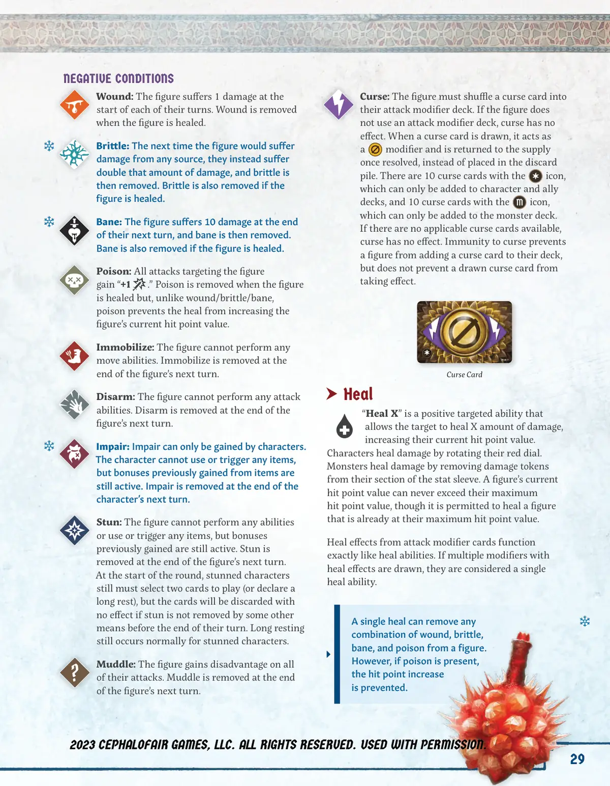
负面状态
创伤：该角色在每个自己回合开始时承受1点伤害。当角色被治疗时，创伤被移除。
易碎：当角色下次将承受任何来源的伤害时，改为承受双倍伤害，然后易碎状态被移除。如果角色被治疗，易碎状态也会被移除。
诅咒：角色在其下一个回合结束时承受10点伤害，然后诅咒状态被移除。如果角色被治疗，诅咒状态也会被移除。
中毒：所有针对该角色的攻击获得"+1攻击力"。当角色被治疗时，中毒状态被移除，但与创伤/易碎/诅咒不同，中毒会阻止治疗增加角色的当前生命值值。
禁锢：角色无法执行任何移动能力。禁锢状态在角色下一个回合结束时被移除。
缴械：角色无法执行任何攻击能力。缴械状态在角色下一个回合结束时被移除。
削弱：削弱只能被角色获得。角色无法使用或触发任何物品，但之前从物品获得的加成仍然有效。削弱状态在角色下一个回合结束时被移除。
眩晕：角色无法执行任何能力或使用或触发任何物品，但之前获得的加成仍然有效。眩晕状态在角色下一个回合结束时被移除。在回合开始时，被眩晕的角色仍必须选择两张牌来使用（或宣布长休），但如果眩晕状态没有在其他方式下在其回合结束前被移除，这些牌将被弃置且无效。被眩晕的角色仍会正常进行长休。
混乱：角色在所有攻击中获得劣势。混乱状态在角色下一个回合结束时被移除。
诅咒：角色必须将一张诅咒牌洗入其攻击修饰牌库。如果角色不使用攻击修饰牌库，诅咒则无效。当抽取到诅咒牌时，它充当"/"修饰符，并在结算后返回到供应区，而不是被放入弃牌堆。有10张带有*图标的诅咒牌，只能添加到角色和盟友牌库中，以及10张带有M图标的诅咒牌，只能添加到怪物牌库中。如果没有可用的诅咒牌，诅咒则无效。对诅咒的免疫会阻止角色将诅咒牌添加到其牌库中，但不会阻止抽取到的诅咒牌生效。
治疗
"治疗X"是一种正面目标能力，允许目标治疗X点伤害，增加其当前生命值值。角色通过旋转红色表盘来治疗伤害。怪物通过从其状态套筒的部分移除伤害指示物来治疗伤害。角色的当前生命值值永远不会超过其最大生命值值，尽管允许治疗角色。
那个已经处于其最大生命值状态。
攻易牌的治疗效果与治疗能力完全相同。
如果抽到多个具有治疗效果的易牌，它们被视为一个单一的治疗能力。
单次治疗可以移除一个角色上任意组合的创伤、易碎、诅咒和中毒效果。
然而，如果存在中毒效果，则生命值增加被阻止。
诅咒牌
2023 CEPHALOFAIR GAMES, LLC. 保留所有权利。经授权使用。
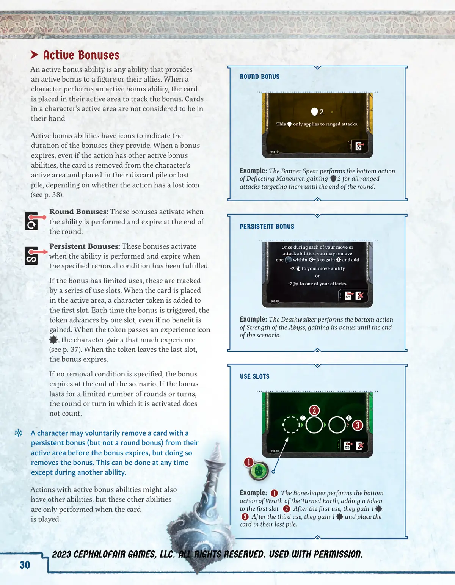
激活奖励
激活奖励能力是指为角色或其盟友提供激活奖励的任何能力。当角色执行激活奖励能力时，卡牌被放置在其激活区域以追踪该奖励。角色激活区域中的卡牌不被视为在其手牌中。
激活奖励能力有图标来指示它们提供的奖励的持续时间。当奖励到期时，即使该行动还有其他激活奖励能力，卡牌也会从角色的激活区域移除，并根据该行动是否有丢失图标（见第38页）放置到其弃牌堆或丢失堆中。
回合奖励：这些奖励在能力执行时激活，并在回合结束时到期。
持续奖励：这些奖励在能力执行时激活，并在指定的移除条件满足时到期。如果奖励有使用次数限制，这些通过一系列使用槽位来追踪。当卡牌被放置到激活区域时，一个角色指示物被添加到第一个槽位。每次奖励被触发时，指示物前进一个槽位，即使没有获得任何收益。当指示物经过一个经验图标X时，角色获得相应的经验值（见第37页）。当指示物离开最后一个槽位时，奖励到期。
如果没有指定移除条件，奖励在场景结束时到期。如果奖励持续有限数量的回合或回合数，激活该奖励的回合或回合数不计入在内。
角色可以在奖励到期前自愿移除带有持续奖励（但不是回合奖励）的卡牌从其激活区域，但这样做会移除该奖励。这可以在任何时候进行，除了在另一个能力执行期间。
带有激活奖励能力的行动也可能有其他能力，但这些其他能力仅在卡牌被打出时执行。
回合奖励
使用槽位
示例：长矛兵执行闪避机动的底部行动，获得对所有针对他们的远程攻击的S 2，直到回合结束。
示例：1 骨塑师执行大地之怒的底部行动，在第一个槽位添加一个指示物。2 第一次使用后，他们获得1个X。3 第三次使用后，他们获得1个X并将卡牌放入其丢失堆中。
!
这仅适用于远程攻击。
!
持续奖励
示例：死亡行者执行深渊之力的底部行动，获得其奖励直到场景结束。
!
或
+2 到你的一次攻击中。
+2 到你的移动能力
在你的每次移动或攻击能力期间，你可以移除一个在3范围内的以获得并添加
2023 CEPHALOFAIR GAMES, LLC. ALL RIGHTS RESERVED. USED WITH PERMISSION.
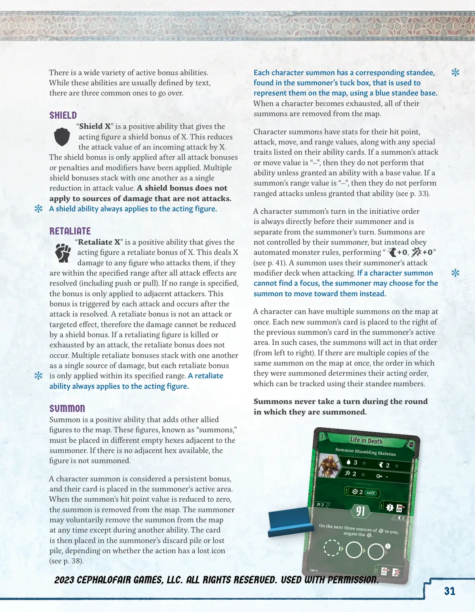
存在多种多样的主动奖励能力。
虽然这些能力通常由文本定义，
但有三种常见的能力需要说明。
护盾
"护盾 X"是一种正面能力，为行动角色提供X点护盾奖励。这会将 incoming 攻击的攻击值降低X点。
护盾奖励仅在所有攻击奖励或惩罚和修饰符都已应用后才生效。多个护盾奖励会叠加为攻击值的单一减少值。护盾奖励不适用于非攻击来源的伤害。
护盾能力总是应用于行动角色。
反击
"反击 X"是一种正面能力，为行动角色提供X点反击奖励。如果攻击者在所有攻击效果都解决后（包括推或拉）处于指定范围内，这会对任何攻击他们的角色造成X点伤害。如果未指定范围，则奖励仅应用于相邻的攻击者。此奖励由每次攻击触发，并在攻击解决后发生。反击奖励不是攻击或目标效果，因此伤害不能被护盾奖励减少。如果反击角色被攻击杀死或耗尽，则不会发生反击奖励。多个反击奖励会叠加为伤害的单一来源，但每个反击奖励仅在其指定范围内生效。反击能力总是应用于行动角色。
召唤
召唤是一种正面能力，可将其他盟友角色添加到地图上。这些被称为"召唤物"的角色必须放置在召唤者相邻的不同空六边形中。如果没有相邻的六边形可用，则不会召唤该角色。
角色召唤被视为持续性奖励，其卡牌被放置在召唤者的活跃区域中。当召唤物的生命值降至零时，该召唤物将从地图上移除。召唤者可以自愿将该召唤物从地图上移除，但在其他能力生效期间除外。然后，根据该行动是否有丢失图标（见第38页），卡牌被放置在召唤者的弃牌堆或丢失堆中。
每个角色召唤物都有对应的立牌，位于召唤者的收纳盒中，使用蓝色立牌底座代表它们在地图上的位置。当角色被耗尽时，他们所有的召唤物都会从地图上移除。
角色召唤物具有其生命值、攻击、移动和范围的数值，以及其能力卡上列出的任何特殊属性。如果召唤物的攻击或移动值为"-"，则除非获得具有基础值的能力，否则他们不会执行该能力。如果召唤物的范围值为"-"，则除非获得该能力（见第33页），否则他们不会执行远程攻击。
召唤物的先攻顺序回合
召唤物在先攻顺序中的回合总是在其召唤者之前，并且与召唤者的回合分开。召唤物不受其召唤者控制，而是遵循自动怪物规则，执行"M+0, A+0"（见第41页）。召唤物攻击时使用其召唤者的攻击牌库。如果一个角色召唤物无法找到焦点，召唤者可以选择让召唤物向其移动。
一个角色可以在地图上同时拥有多个召唤物。每个新召唤物的卡牌被放置在召唤者活跃区域中前一个召唤物卡牌的右侧。在这种情况下，召唤物将按该顺序行动（从左到右）。如果地图上同时存在多个相同的召唤物，它们的召唤顺序决定了它们的行动顺序，可以使用它们的底座编号来追踪。
召唤物在被召唤的那个回合内永远不会进行回合。
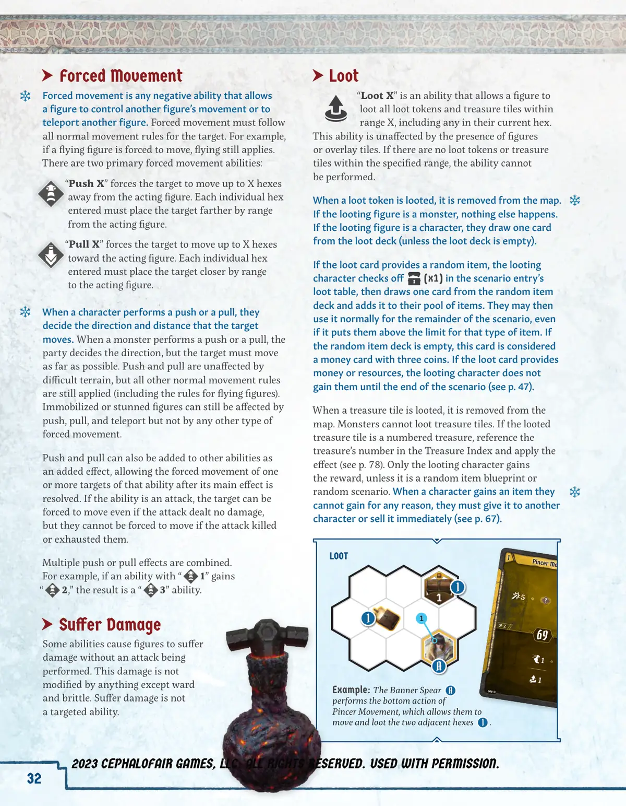
强制移动
强制移动是指任何允许一个单位控制另一个单位的移动或传送另一个单位的负面能力。强制移动必须遵循目标的所有正常移动规则。例如，如果一个飞行单位被强制移动，飞行能力仍然适用。
主要有两种强制移动能力：
"推X"强制目标从执行单位处向外移动最多X个六边形。每个进入的六边形必须使目标与执行单位的距离增加。
"拉X"强制目标向执行单位移动最多X个六边形。每个进入的六边形必须使目标与执行单位的距离减少。
当一个角色执行推或拉时，他们决定目标移动的方向和距离。当一个怪物执行推或拉时，小队决定方向，但目标必须尽可能远地移动。推和拉不受困难地形影响，但所有其他正常移动规则仍然适用（包括飞行单位的规则）。被禁锢或眩晕的单位仍然会受到推、拉和传送的影响，但不会受到任何其他类型的强制移动影响。
推和拉也可以作为附加效果添加到其他能力中，允许在该能力的主要效果解决后，强制移动该能力的一个或多个目标。如果该能力是攻击，即使攻击未造成伤害，目标也可以被强制移动，但如果攻击消灭或耗尽了目标，则不能被强制移动。
多个推或拉效果会叠加。例如，如果一个具有"推1"的能力获得了"推2"，结果是"推3"的能力。
承受伤害
某些能力会导致单位承受伤害而不进行攻击。这种伤害除了护盾和易碎外，不受任何其他因素影响。承受伤害不是一种有目标的能力。
掠夺
"掠夺X"是一种能力，允许单位掠夺距离X范围内的所有掠夺标记和宝藏板块，包括其当前六边形内的任何标记。此能力不受单位或覆盖板块存在的影响。如果在指定范围内没有掠夺标记或宝藏板块，则无法执行此能力。
当掠夺标记被掠夺时，它会被从地图上移除。如果掠夺单位是怪物，则没有其他事情发生。如果掠夺单位是角色，他们从掠夺牌库中抽一张牌（除非掠夺牌库为空）。如果掠夺牌提供随机物品，掠夺角色会在场景条目的掠夺表格中勾选T(x1)，然后从随机物品牌库中抽一张牌并将其添加到他们的物品池中。在剩余的场景中，他们可以正常使用它，即使这使他们超过了该类型物品的限制。如果随机物品牌库为空，则此牌被视为
一张带有三个金币的金钱卡。如果战利品卡牌提供金钱或资源，掠夺角色直到场景结束才能获得它们（参见第47页）。当宝物板块被掠夺时，它将从版图上移除。怪物不能掠夺宝物板块。如果被掠夺的宝物板块是编号宝物，请参考宝物索引中的编号并应用效果（参见第78页）。只有掠夺角色能获得奖励，除非它是随机物品蓝图或随机场景。当角色因任何原因无法获得物品时，他们必须立即将其交给另一个角色或出售（参见第67页）。
掠夺
示例：旗帜长矛执行侧翼移动的底部行动，这允许他们移动并掠夺两个相邻的六边形1。
<!--page:H-->
<!--page:L-->
<!--page:l-->
<!--page:P-->
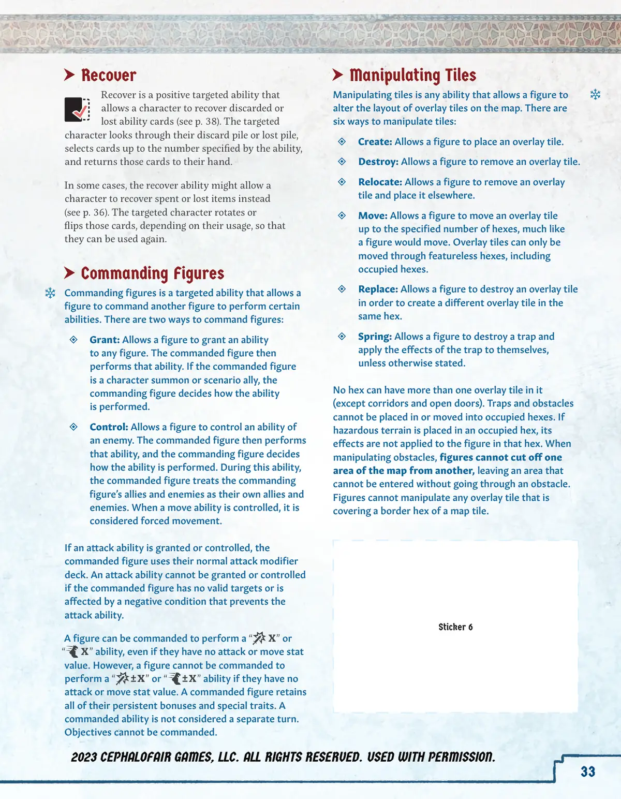
贴纸 6
恢复
恢复是一种正面目标能力，允许角色恢复被弃置或失去的能力牌（见第38页）。目标角色查看自己的弃牌堆或失去牌堆，选择最多由该能力指定数量的牌，并将这些牌返回到手牌中。
在某些情况下，恢复能力可能允许角色恢复已使用或失去的物品（见第36页）。目标角色根据这些物品的使用情况旋转或翻转这些牌，以便可以再次使用它们。
指挥单位
指挥单位是一种目标能力，允许一个单位指挥另一个单位执行特定能力。指挥单位有两种方式：
授予：允许一个单位将能力授予任何单位。被指挥的单位然后执行该能力。如果被指挥的单位是角色召唤物或场景盟友，指挥单位决定如何执行该能力。
控制：允许一个单位控制敌人的一个能力。被指挥的单位然后执行该能力，指挥单位决定如何执行该能力。在此能力期间，被指挥单位将指挥单位的盟友和敌人视为自己的盟友和敌人。当移动能力被控制时，它被视为强制移动。
如果攻击能力被授予或控制，被指挥单位使用其正常的攻击修正牌堆。如果被指挥单位没有有效目标或受到阻止攻击能力的负面状况影响，则攻击能力不能被授予或控制。
一个单位可以被指挥执行"A X"或"M X"能力，即使他们没有攻击或移动属性值。然而，如果一个单位没有攻击或移动属性值，则不能被指挥执行"A±X"或"M±X"能力。被指挥单位保留其所有持续奖励和特殊特性。被指挥能力不被视为一个独立的回合。目标物不能被指挥。
操控板块
操控板块是任何允许单位改变地图上层叠板块布局的能力。有六种方式操控板块：
创造：允许单位放置一个层叠板块。
摧毁：允许单位移除一个层叠板块。
重新定位：允许单位移除一个层叠板块并将其放置到其他地方。
移动：允许单位将层叠板块移动最多指定数量的六边形格，就像单位移动一样。层叠板块只能通过无特征的六边形格移动，包括被占用的六边形格。
替换：允许单位摧毁一个层叠板块，以便在同一六边形格中创建不同的层叠板块。
触发：允许单位摧毁一个陷阱并将陷阱的效果应用于自身，除非另有说明。
没有六边形格可以放置超过一个覆盖板块（走廊和敞开的门除外）。陷阱和障碍物不能放置在已占用的六边形格中，也不能移动到已占用的六边形格中。如果危险地形被放置在已占用的六边形格中，其效果不会应用于该六边形格中的角色。在操作障碍物时，角色不能将地图的一个区域与另一个区域隔开，造成一个必须穿过障碍物才能进入的区域。角色不能操作任何覆盖地图板块边界六边形格的覆盖板块。
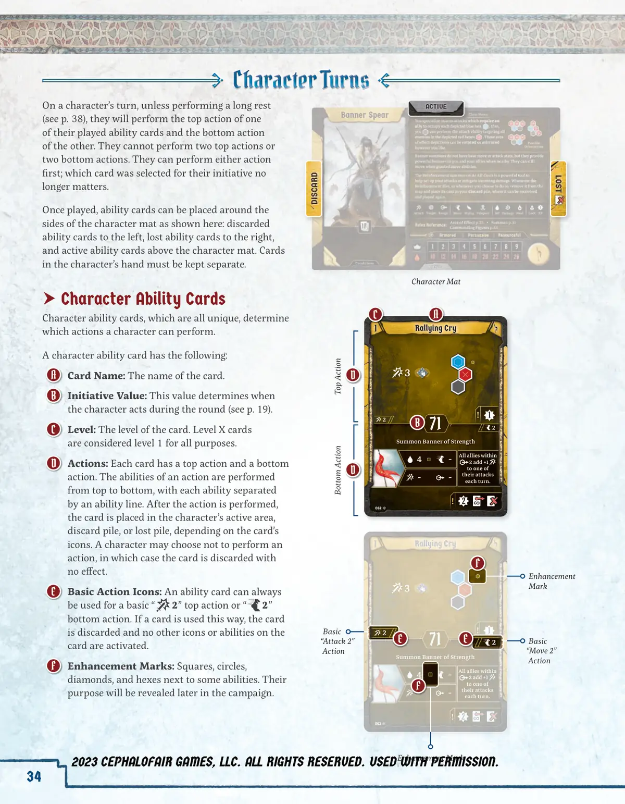
在一个角色的回合中，除非执行长休息（见第38页），他们将执行一张已打出的能力牌顶部的行动和另一张底部的行动。他们不能执行两个顶部行动或两个底部行动。他们可以先执行任意一个行动；选择哪张牌用于其先攻值已不再重要。
一旦打出，能力牌可以放置在角色垫的周围，如下所示：弃置的能力牌放在左侧，失去的能力牌放在右侧，激活的能力牌放在角色垫上方。角色手中的牌必须分开存放。
角色能力牌
角色能力牌都是独一无二的，决定了角色可以执行的行动。
一张角色能力牌包含以下内容：
卡牌名称：卡牌的名称。
先攻值：此值决定了角色在轮中的行动时机（见第19页）。
等级：卡牌的等级。X级卡牌在所有目的下都被视为1级。
行动：每张牌都有一个顶部行动和一个底部行动。行动的能力从上到下执行，每个能力由能力线分隔。行动执行后，根据卡牌上的图标，卡牌被放置在角色的激活区、弃牌堆或失去堆。角色可以选择不执行行动，在这种情况下，卡牌被弃置且无效果。
基础行动图标：能力牌始终可用于基础"A 2"顶部行动或"M 2"底部行动。如果卡牌以此方式使用，则卡牌被弃置，且卡牌上的其他图标或能力不会被激活。
增强标记：某些能力旁边的方块、圆形、菱形和六边形。它们的目的将在战役的后续部分揭示。
A
B
C
D
E
F
角色回合
角色回合
所有2格内的盟友
每回合为他们的
一次攻击增加+1
-
-
-
召唤力量战旗
!
!
集结呐喊
基础
"移动2"
行动
增强标记
基础
"攻击2"
行动
E
增强
标记
F
E
F
所有2格内的盟友
每回合为他们的
一次攻击增加+1
-
-
-
召唤力量战旗
!
!
集结呐喊
A
C
B
底部行动
D
顶部行动
D
角色垫
2023 CEPHALOFAIR GAMES, LLC. 保留所有权利. 经授权使用.
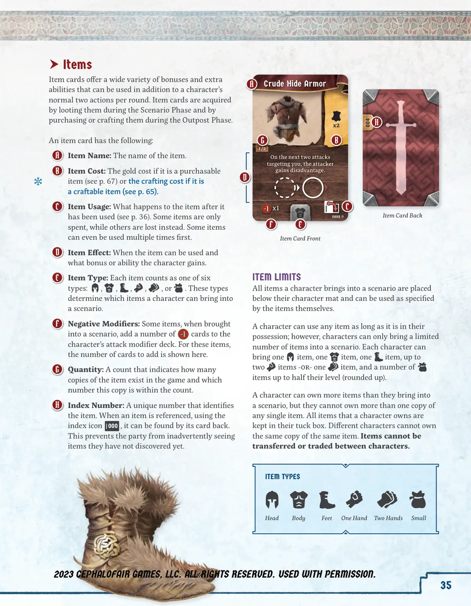
物品
物品卡牌提供了各种奖励和额外能力，可以在角色每轮正常的两个行动之外使用。物品卡牌通过在场景阶段掠夺获得，以及在前哨阶段购买或制作获得。
物品卡牌包含以下内容：
物品名称：物品的名称。
物品费用：如果是可购买的物品，则是黄金费用（参见第67页）；如果是可制作的物品，则是制作费用（参见第65页）。
物品使用：物品使用后会发生什么（参见第36页）。有些物品只会被消耗，而其他物品则会丢失。有些物品甚至可以先使用多次。
物品效果：物品何时使用以及角色获得什么奖励或能力。
物品类型：每件物品属于六种类型之一：E、B、L、H、h或I。这些类型决定了角色可以将哪些物品带入场景。
负面调整：有些物品在带入场景时，会向角色的攻击调整牌库中添加一定数量的-牌。对于这些物品，需要添加的牌数在此处显示。
数量：一个计数，表示游戏中该物品有多少副本，以及这个副本在总数中的编号。
索引编号：一个唯一标识物品的编号。当引用物品时，使用索引图标 000，可以通过卡牌背面找到它。这可以防止队伍无意中看到他们尚未发现的物品。
物品限制
角色带入场景的所有物品都放置在其角色垫下方，并可以按照物品本身的说明使用。
只要物品在角色手中，角色就可以使用任何物品；但是，角色只能带入有限数量的物品进入场景。每个角色可以带入一件E物品、一件B物品、一件L物品、最多两件H物品或一件h物品，以及数量不超过其等级一半（向上取整）的I物品。
角色可以拥有的物品数量可以多于带入场景的物品，但不能拥有任何单件物品的多个副本。角色拥有的所有物品都保存在其收纳盒中。不同角色不能拥有同一物品的同一副本。物品不能在角色之间转让或交易。
A
B
C
D
E
F
G
H
物品类型
1/2
在接下来的两次针对你的攻击中，
攻击者获得劣势。
x1
x2
crude Hide Armor
0888
0888
D
A
E
G
B
C
H
HeadE
BodyB
FeetL
One Hand
H
Two Hands
h
SmallI
F
物品卡牌正面
物品卡牌背面
2023 CEPHALOFAIR GAMES, LLC. ALL RIGHTS RESERVED. USED WITH PERMISSION.
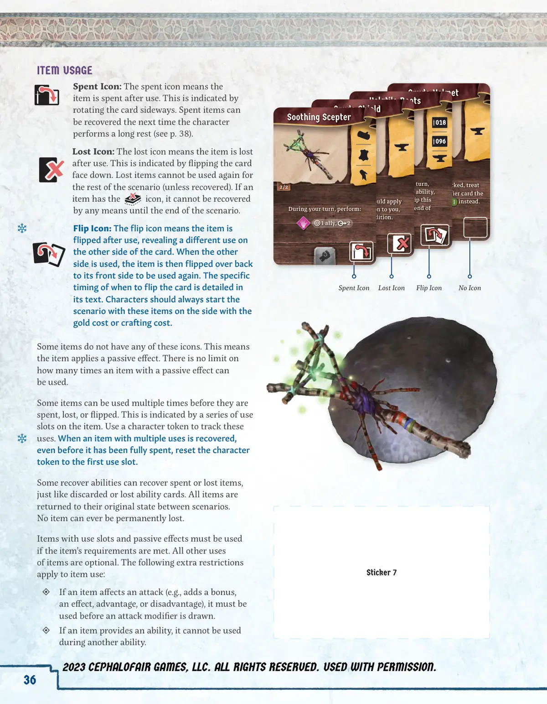
贴纸 7
物品使用
已使用图标：已使用图标表示物品在使用后会被使用掉。这通过将卡牌横向旋转来表示。已使用的物品可以在角色执行长休息时恢复（见第38页）。
已丢失图标：已丢失图标表示物品在使用后会丢失。这通过将卡牌面朝下翻转来表示。已丢失的物品在剩余的剧情中无法再次使用（除非被恢复）。如果物品有
图标，在剧情结束前无法通过任何方式恢复。
翻转图标：翻转图标表示物品在使用后会翻转，显示卡牌另一面的不同用途。当使用另一面时，物品会再次翻转回正面以供再次使用。翻转卡牌的具体时机在其文本中有详细说明。角色应在剧情开始时将这些物品放在带有黄金成本或制作成本的那一面。
一些物品没有任何这些图标。这意味着物品会施加被动效果。被动效果的物品使用次数没有限制。
一些物品在被使用掉、丢失或翻转前可以多次使用。这通过物品上的一系列使用槽位来表示。使用角色指示物来追踪这些使用次数。当有多次使用次数的物品被恢复时，即使尚未完全使用掉，也将角色指示物重置到第一个使用槽位。
一些恢复能力可以恢复已使用或已丢失的物品，就像被弃置或丢失的能力卡牌一样。所有物品在剧情之间都会返回到原始状态。没有任何物品会永久丢失。
有使用槽位和被动效果的物品，如果满足物品的要求，必须使用。物品的所有其他使用都是可选的。以下额外限制适用于物品使用：
如果物品影响攻击（例如，增加加值、效果、优势或劣势），必须在抽取攻击牌之前使用。
如果物品提供能力，不能在另一个能力期间使用。
1/2
当你被攻击时，将敌人抽到的任何
攻击牌视为
。
crude helmet（ crude helmet）
0884
0884
2/2
Volatile Boots（易爆靴子）
每回合最多一次，在你的移动能力期间，
+1 ，然后在你的回合结束时翻转这张牌。
0947
0947094
2/2
当敌人要对您施加负面状态时，
防止该状态。
Crude Shield（ crude shield）
x1
0901
0901
2/2
Soothing Scepter（安抚权杖）
在你的回合期间，执行：
1个盟友， 2
0931
0931
已使用图标
已丢失图标
无图标
翻转图标
2023 CEPHALOFAIR GAMES, LLC. 保留所有权利。经许可使用。
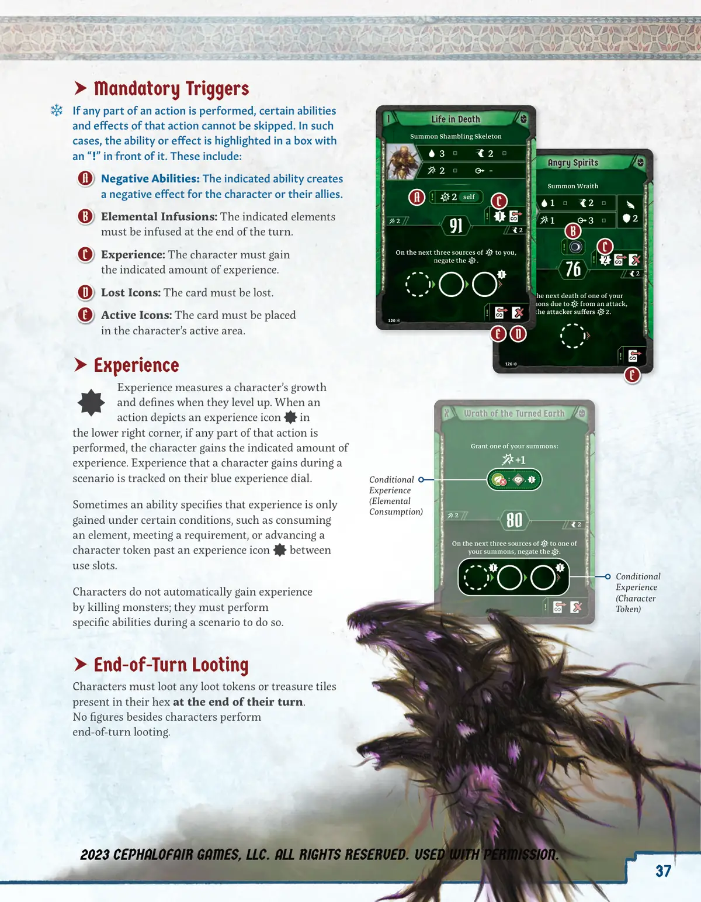
强制触发
如果执行了行动的任何部分，则该行动的某些能力和效果不能被跳过。在这种情况下，该能力或效果会在一个带有"!"的方框中高亮显示。这些包括：
负面能力：指明的能力会对角色或其盟友产生负面效果。
元素灌注：必须在回合结束时灌注指明的元素。
经验值：角色必须获得指明的经验值数量。
失去图标：卡牌必须被失去。
激活图标：卡牌必须被放置在角色的激活区域。
经验值
经验值衡量角色的成长并定义他们何时升级。当一个行动在其右下角显示经验值图标X时，如果执行了该行动的任何部分，角色将获得指明的经验值数量。角色在场景中获得的经验值通过其蓝色经验值指示器进行追踪。有时，能力会指明仅在特定条件下才能获得经验值，例如消耗元素、满足要求或将角色指示物在使用槽位之间移过经验值图标X。
角色不会通过杀死怪物自动获得经验值；他们必须在场景中执行特定能力才能获得。
回合结束搜刮
角色必须在回合结束时搜刮其所在六边形中的任何战利品指示物或宝藏板块。
除角色外的任何单位都不会执行回合结束搜刮。
A
B
C
D
E
X
!
大地之怒
X
在你接下来的三个召唤来源的 对你其中一个召唤物的伤害中，抵消该 。
给予你其中一个召唤物：
:
, 1
+1
条件性经验值
(元素消耗)
条件性经验值
(角色指示物)
:
, 1
召唤幽灵
!
!
愤怒之灵
在你其中一个召唤物因攻击中的 而死亡的下次事件中，攻击者受到 2伤害。
!
E
C
B
-
召唤蹒跚骷髅
!
!
生死之间
在你接下来的三个来源的 对你的伤害中，抵消该 。
!
自身
A
C
D
E
2023 CEPHALOFAIR GAMES, LLC. ALL RIGHTS RESERVED. USED WITH PERMISSION.
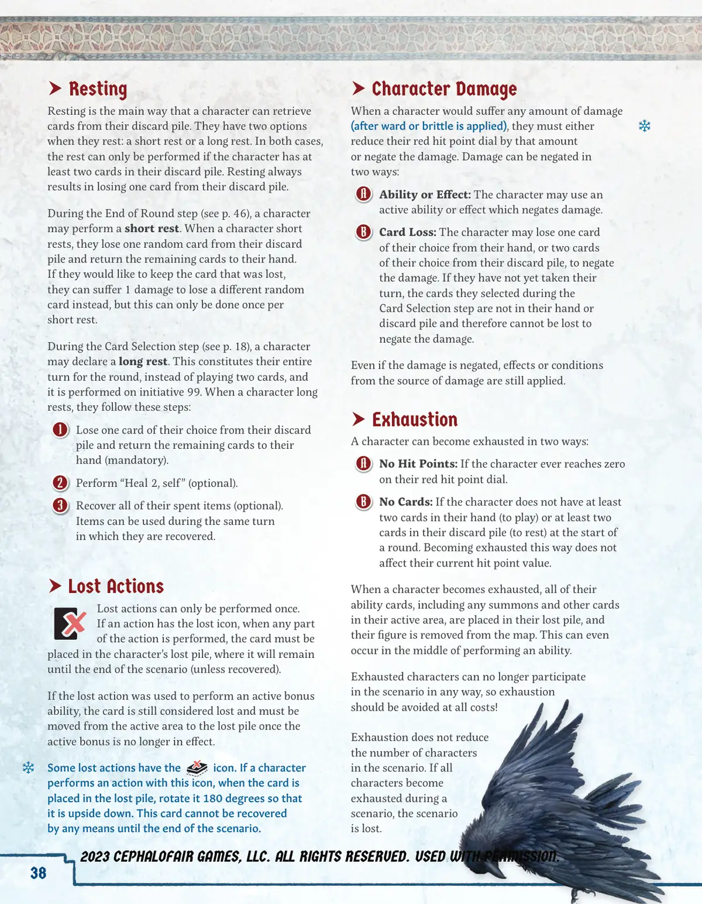
休息
休息是角色从其弃牌堆中回收卡牌的主要方式。当他们休息时，他们有两个选择：短休息或长休息。在这两种情况下，只有当角色在其弃牌堆中至少有两张卡牌时，才能进行休息。休息总是导致其弃牌堆中失去一张卡牌。
在回合结束步骤（参见第46页），角色可以进行短休息。当角色进行短休息时，他们会从其弃牌堆中随机失去一张卡牌，并将剩余的卡牌返回到手牌中。如果他们想要保留被失去的卡牌，他们可以承受1点伤害来失去另一张随机卡牌，但这在一次短休息中只能进行一次。
在卡牌选择步骤（参见第18页），角色可以声明进行长休息。这构成了他们整个回合的回合，而不是打出两张卡牌，并且在行动顺序99上执行。当角色进行长休息时，他们遵循以下步骤：
从其弃牌堆中选择失去一张卡牌，并将剩余的卡牌返回到手牌中（强制）。
执行"治疗2，自己"（可选）。
回收他们已使用的所有物品（可选）。
物品可以在它们被回收的同一回合中使用。
失去的行动
失去的行动只能执行一次。
如果一个行动有失去图标，当行动的任何部分被执行时，卡牌必须被放置到角色的失去堆中，它将留在那里直到场景结束（除非被回收）。
如果失去的行动被用于执行主动奖励能力，卡牌仍被视为失去，并且一旦主动奖励不再有效，卡牌必须从主动区域移动到失去堆中。
一些失去的行动有
图标。如果角色执行了一个带有此图标行动，当卡牌被放置到失去堆中时，将其旋转180度使其倒置。在场景结束前，这张卡牌无法通过任何方式被回收。
角色伤害
当角色将要承受任何数量的伤害（在护盾或易碎效果应用后），他们必须要么将其红色生命值指示器减少该数量，要么抵消伤害。伤害可以通过两种方式抵消：
能力或效果：角色可以使用抵消伤害的主动能力或效果。
卡牌失去：角色可以从其手牌中选择失去一张卡牌，或者从其弃牌堆中选择失去两张卡牌，来抵消伤害。如果他们尚未进行回合，他们在卡牌选择步骤中选择的卡牌不在其手牌或弃牌堆中，因此不能被失去以抵消伤害。
即使伤害被抵消，伤害来源的效果或条件仍然被应用。
疲劳
角色可以通过两种方式变得疲劳：
没有生命值：如果角色的红色生命值转盘 ever reaches zero on their red hit point dial.
没有卡牌：如果在回合开始时，角色手中没有至少两张卡牌（用于打出）或弃牌堆中没有至少两张卡牌（用于休息）。以这种方式变得精疲力尽不会影响他们当前的生命值。
当角色变得精疲力尽时，他们所有的能力卡牌，包括任何召唤物和其活跃区域中的其他卡牌，都被放入其丢失堆，并且其棋子从版图上移除。这甚至可能发生在执行能力的过程中。
精疲力尽的角色无法以任何方式继续参与场景，因此应不惜一切代价避免精疲力尽！
精疲力尽不会减少场景中的角色数量。如果在场景中所有角色都变得精疲力尽，则场景失败。
A
B
A
B
2023 CEPHALOFAIR GAMES, LLC. ALL RIGHTS RESERVED. USED WITH PERMISSION.
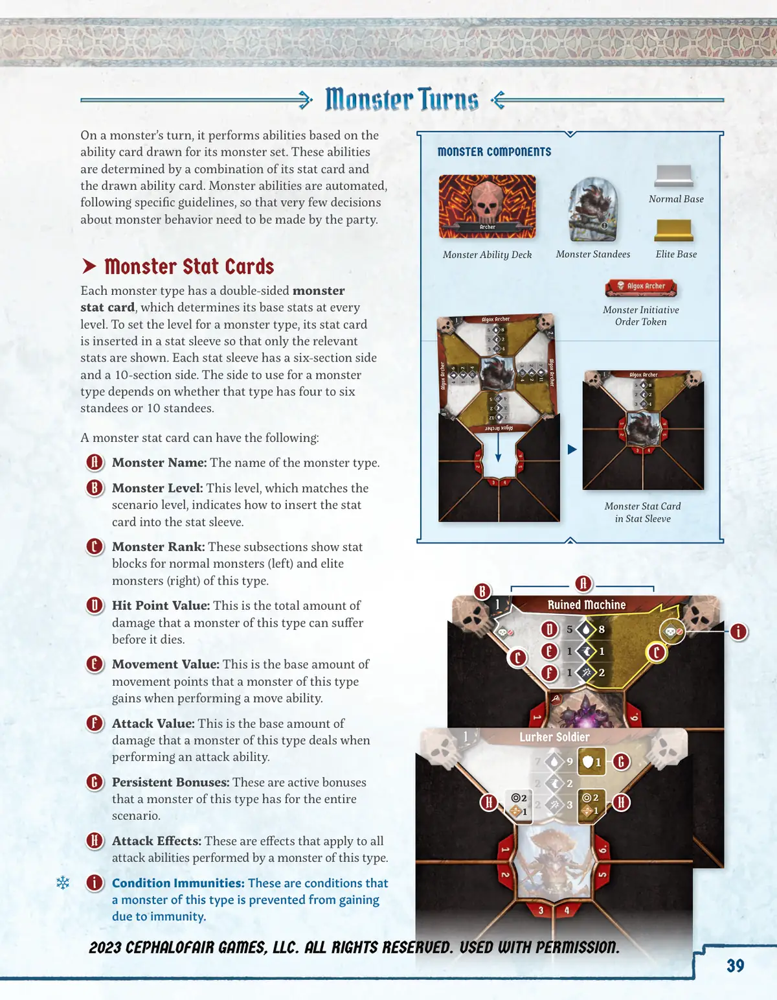
在怪物的回合，它会根据为其怪物组抽取的能力牌来执行能力。这些能力由其状态牌和抽取的能力牌共同决定。怪物能力是自动化的，遵循特定指导方针，因此小队几乎不需要对怪物行为做出决策。
怪物状态牌
每种怪物类型都有双面的怪物状态牌，它决定了该类型在每个等级的基础数值。要设置怪物类型的等级，将其状态牌插入状态套筒中，以便只显示相关数值。每个状态套筒都有一个六分区面和一个十分区面。使用哪个面取决于该类型有四个到六个底座还是十个底座。
怪物状态牌可以包含以下内容：
怪物名称：怪物类型的名称。
怪物等级：此等级与场景等级相匹配，表示如何将状态牌插入状态套筒中。
怪物等级：这些子部分显示该类型普通怪物（左侧）和精英怪物（右侧）的数值块。
生命值：这是该类型怪物在死亡前可以承受的总伤害量。
移动值：这是该类型怪物在执行移动能力时获得的基础移动点数。
攻击值：这是该类型怪物在执行攻击能力时造成的基础伤害量。
持续奖励：这些是该类型怪物在整个场景中拥有的主动奖励。
攻击效果：这些效果适用于该类型怪物执行的所有攻击能力。
状态免疫：这些是由于免疫而使该类型怪物无法获得的状态。
A
B
C
D
E
F
G
H
I
怪物组件
毁坏的机器
毁坏的机器
毁坏的机器
毁坏的机器
怪物底座
普通底座
怪物先攻顺序指示物
状态套筒中的怪物状态牌
弓箭手
怪物能力牌组
精英底座
A
Algox弓箭手
Algox弓箭手
Algox弓箭手
Algox弓箭手
Algox弓箭手
Algox弓箭手
Algox弓箭手
Algox弓箭手
⊲
C
B
D
E
F
C
潜伏士兵
潜伏士兵
潜伏士兵
潜伏士兵
I
G
H
H
2023 CEPHALOFAIR GAMES, LLC. 保留所有权利. 经授权使用.
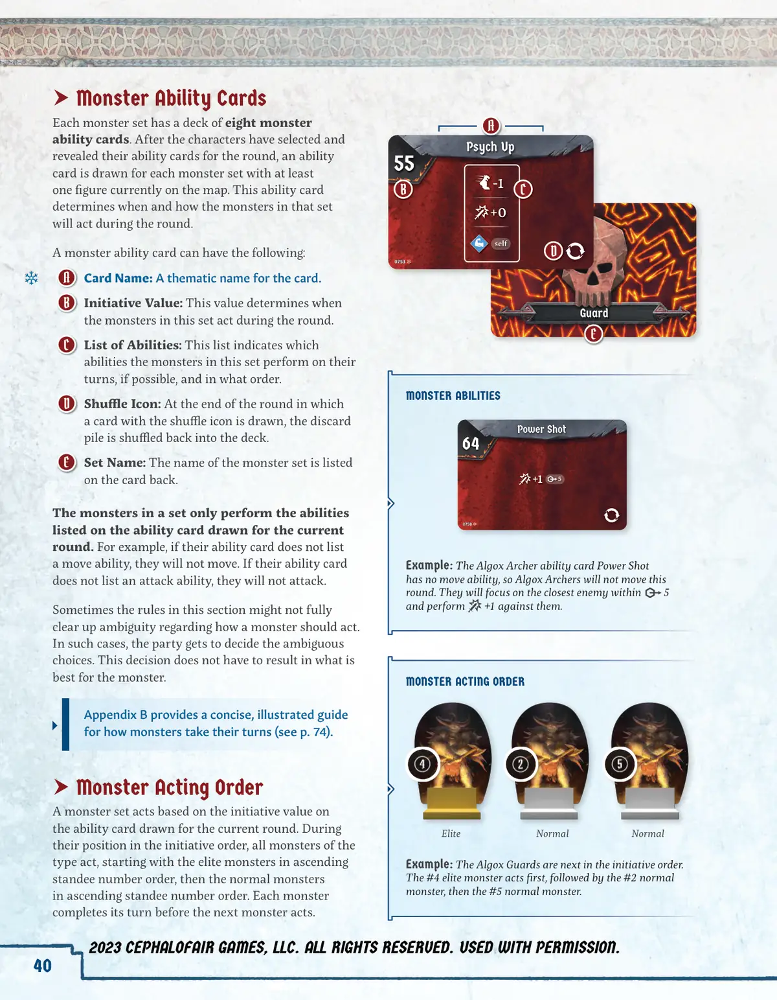
怪物能力卡
每个怪物组有一套八张怪物能力卡。在角色选择并展示了他们本轮的能力卡后，为每个当前至少有一个模型在地图上的怪物组抽取一张能力卡。这张能力卡决定了该组怪物在本轮何时以及如何行动。
怪物能力卡可以包含以下内容：
卡牌名称：卡牌的主题名称。
先攻值：这个值决定了该组怪物在本轮何时行动。
能力列表：这个列表指示该组怪物在它们的回合中可能执行哪些能力，以及按什么顺序执行。
洗牌图标：在抽到带有洗牌图标的卡牌的回合结束时，弃牌堆会被洗回牌库。
组名称：怪物组的名称列在卡牌背面。
一个组中的怪物只执行为当前回合抽取的能力卡上列出的能力。例如，如果他们的能力卡没有列出移动能力，他们将不会移动。如果他们的能力卡没有列出攻击能力，他们将不会攻击。
有时本节的规则可能无法完全澄清怪物应该如何行动。在这种情况下，小队可以决定有歧义的选择。这个决策不必是对怪物最有利的选择。
怪物行动顺序
怪物组根据为当前回合抽取的能力卡上的先攻值行动。在先攻顺序中的位置，该类型所有怪物行动，首先按模型编号升序行动精英怪物，然后按模型编号升序行动普通怪物。每个怪物完成其回合后，下一个怪物才行动。
A
B
C
D
E
附录B提供了怪物如何行动的简明图示指南（见第74页）。
怪物行动顺序
守卫
示例：Algox守卫在先攻顺序中轮到。编号为4的精英怪物首先行动，接着是编号为2的普通怪物，然后是编号为5的普通怪物。
精英
普通
普通
蓄力
-1
+0
自身
0753
0753
A
B
D
E
C
怪物能力
强力射击
+1
0758
0758
示例：Algox弓箭手能力卡"强力射击"没有移动能力，所以Algox弓箭手本回合不会移动。他们将专注于R 5范围内的最近敌人，并对他们执行A +1。
2023 CEPHALOFAIR GAMES, LLC. ALL RIGHTS RESERVED. USED WITH PERMISSION.
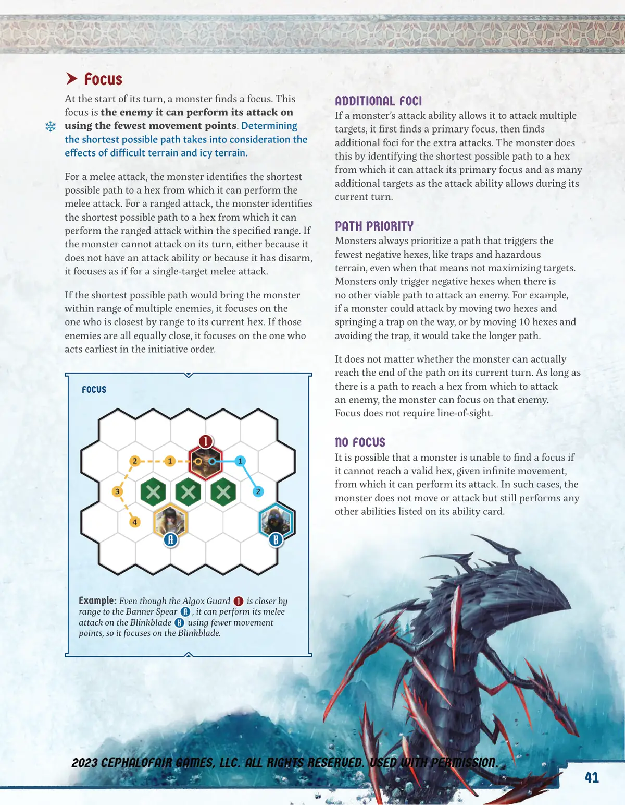
专注
在其回合开始时，怪物会找到一个专注目标。这个专注目标是指它可以用最少的移动点数对其执行攻击的敌人。确定最短路径时会考虑困难地形和冰地地形的效果。
对于近战攻击，怪物会确定一条到达某个六边形的最短路径，从该六边形它可以执行近战攻击。对于远程攻击，怪物会确定一条到达某个六边形的最短路径，从该六边形它可以在指定范围内执行远程攻击。如果怪物在其回合无法攻击，要么因为它没有攻击能力，要么因为它被缴械，它会像针对单目标近战攻击一样进行专注。
如果最短路径会使怪物进入多个敌人的范围内，它会专注于当前六边形中按距离最近的那个敌人。如果这些敌人的距离都相等，它会专注于在行动顺序中最早行动的那个敌人。
其他专注目标
如果怪物的攻击能力允许它攻击多个目标，它会首先找到一个主要专注目标，然后为额外的攻击找到其他专注目标。怪物通过确定到达某个六边形的最短路径来实现这一点，从该六边形它可以攻击其主要专注目标，以及攻击能力允许的尽可能多的额外目标。
路径优先级
怪物总是优先选择触发负面六边形最少的路径，比如陷阱和危险地形，即使这意味着不能最大化目标数量。怪物只有在没有其他可行路径攻击敌人时才会触发负面六边形。例如，如果一个怪物可以通过移动两个六边形并在途中触发陷阱来攻击，或者通过移动十个六边形并避开陷阱来攻击，它会选择较长的路径。
怪物是否能在其当前回合到达路径的终点并不重要。只要存在一条路径可以到达某个六边形，从该六边形可以攻击敌人，怪物就可以专注于该敌人。专注不需要视线。
无专注目标
如果怪物无法找到一条路径，即使在无限移动的情况下也无法到达可以执行攻击的有效六边形，那么它可能无法找到专注目标。在这种情况下，怪物不会移动或攻击，但仍会执行其能力卡上列出的任何其他能力。
专注
示例：尽管按距离计算，Algox守卫 1 离Banner矛 A更近，但它可以用更少的移动点数对Blink剑 B 执行近战攻击，因此它专注于Blink剑。
2023 CEPHALOFAIR GAMES, LLC. 保留所有权利. 经授权使用.
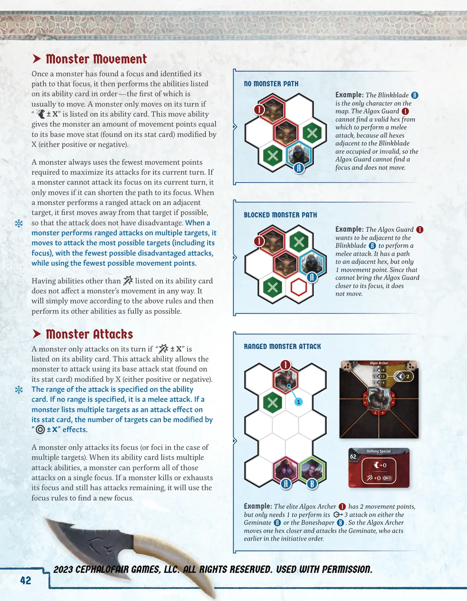
远程怪物攻击
怪物移动
一旦怪物找到一个焦点并确定到该焦点的路径后，它会按照其能力卡上列出的能力顺序执行——其中第一个通常是移动。只有当能力卡上列有"M±X"时，怪物才会在其回合移动。这个移动能力使怪物获得等于其基础移动属性（在其属性卡上找到）加上X（可为正或负）的移动点数。
怪物总是使用最少的移动点数来最大化其当前回合的攻击。如果怪物无法在其当前回合攻击其焦点，它只有在能缩短到焦点的路径时才会移动。当怪物对相邻目标执行远程攻击时，如果可能，它会先远离该目标移动，以便攻击不会处于劣势。当怪物对多个目标执行远程攻击时，它会移动以攻击尽可能多的目标（包括其焦点），同时尽可能减少处于劣势的攻击，并使用尽可能少的移动点。
能力卡上列有除A以外的其他能力不会以任何方式影响怪物的移动。它将仅根据上述规则移动，然后尽可能完整地执行其其他能力。
怪物攻击
只有当能力卡上列有"A±X"时，怪物才会在其回合攻击。这个攻击能力使怪物能够使用其基础攻击属性（在其属性卡上找到）加上X（可为正或负）来攻击。攻击范围在能力卡上指定。如果没有指定范围，则为近战攻击。如果怪物在其属性卡上将多个目标列为攻击效果，目标数量可以通过"T±X"效果修改。
怪物只攻击其焦点（如果是多个目标则为多个焦点）。当其能力卡上列有多个攻击能力时，怪物可以对单个焦点执行所有这些攻击。如果怪物杀死或耗尽其焦点且仍有剩余攻击，它将使用焦点规则找到新焦点。
Algox Archer
Algox Archer
Algox Archer
Algox Archer
Nothing Special
+0
+0
0764
0764
+0
+0
无怪物路径
示例：Blinkblade A是地图上唯一的角色。Algox Guard 1无法找到执行近战攻击的有效六边形，因为所有与Blinkblade相邻的六边形都被占用或无效，因此Algox Guard无法找到焦点且不移动。
被阻挡的怪物路径
示例：Algox Guard 1希望靠近Blinkblade A以执行近战攻击。它有一条通往相邻六边形的路径，但只有1个移动点。由于这无法使Algox Guard更接近其焦点，它不移动。
示例：精英Algox Archer 1有2个移动点，
但只需要1点资源来对双胞胎A或塑骨者B执行其R3攻击。因此，Algox Archer移动一个六边形格更近并攻击双胞胎A，因为双胞胎A在行动顺序中更早行动。
a
b
2023 CEPHALOFAIR GAMES, LLC. 保留所有权利。经授权使用。
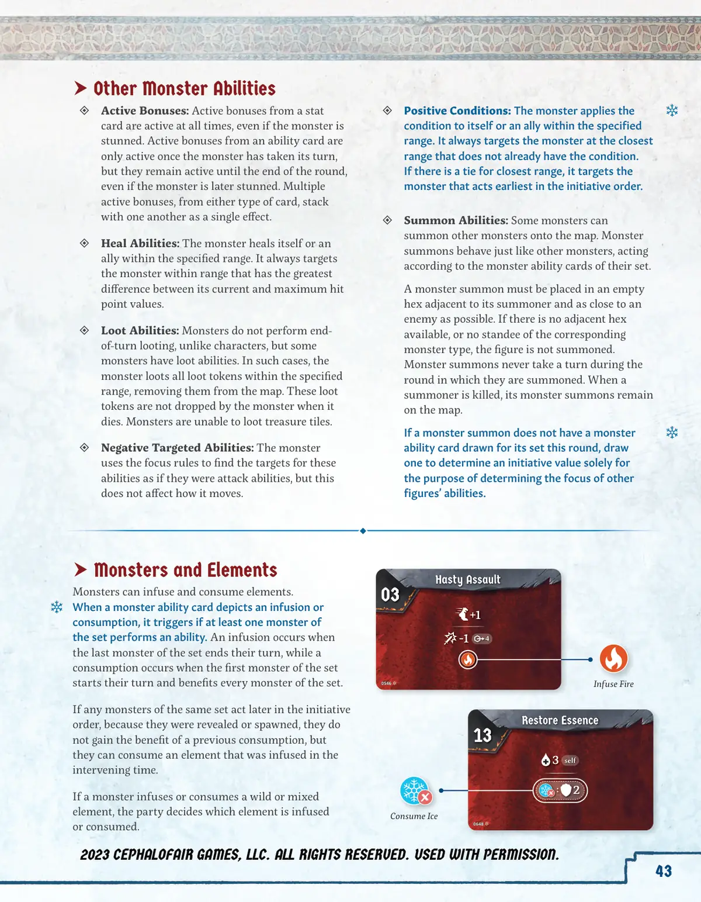
其他怪物能力
"
主动奖励：来自属性卡牌的主动奖励始终处于激活状态，即使怪物被击晕。来自能力卡牌的主动奖励仅在怪物完成其回合后激活，但它们会保持激活状态直到回合结束，即使怪物后来被击晕。来自任一类卡牌的多个主动奖励会叠加为单一效果。
"
治疗能力：怪物在指定范围内治疗自己或盟友。它总是优先治疗范围内当前生命值与最大生命值差异最大的怪物。
"
战利品能力：与角色不同，怪物不会在回合结束时进行战利品收集，但有些怪物具有战利品能力。在这种情况下，怪物会收集指定范围内的所有战利品指示物，将其从版图上移除。这些战利品指示物不会在怪物死亡时被掉落。怪物无法收集宝藏板块。
"
负面目标能力：怪物使用焦点规则来寻找这些能力的目标，就像攻击能力一样，但这不影响其移动方式。
"
正面状态：怪物在指定范围内对自己或盟友施加状态。它总是优先施加给范围内尚未拥有该状态且距离最近的怪物。如果有多个怪物距离相同，则优先施加给先行动顺序中最早行动的怪物。
"
召唤能力：有些怪物可以在版图上召唤其他怪物。怪物召唤的行为与其他怪物相同，根据其所属的怪物能力卡牌行动。怪物召唤必须放置在其召唤者相邻的空六边形格子上，并尽可能靠近敌人。如果没有相邻的六边形格子可用，或没有相应怪物类型的立牌，则不会召唤该怪物。怪物召唤在被召唤的回合内不会行动。当召唤者被消灭时，其召唤的怪物会继续留在版图上。
如果怪物召唤在其所属的怪物能力卡牌组中本回合没有抽取卡牌，则抽取一张卡牌仅用于确定行动顺序值，以便确定其他角色的焦点。
怪物与元素
怪物可以灌注和消耗元素。当怪物能力卡牌显示灌注或消耗时，如果至少有一个该系列的怪物执行了能力，则会触发。灌注发生在该系列最后一个怪物结束其回合时，而消耗发生在该系列第一个怪物开始其回合时，并使该系列的所有怪物受益。如果任何相同系列的怪物因为被揭示或生成而在行动顺序中较晚行动，它们不会获得先前消耗的收益，但
它们可以消耗在中间时间内被灌注的元素。
如果一个怪物灌注或消耗了野生元素或混合元素，由玩家队伍决定灌注或消耗的是哪种元素。
-1
+1
突袭
0546
0546
3 自身
:
恢复精华
0648
0648
灌注火焰
消耗冰
2023 CEPHALOFAIR GAMES, LLC. 保留所有权利. 经授权使用.
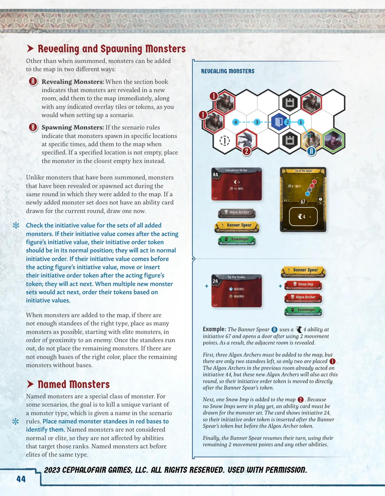
揭示与生成怪物
除了被召唤时，怪物可以通过两种不同的方式添加到地图上：
揭示怪物：当章节手册表明在新房间中揭示怪物时，立即将它们添加到地图上，连同任何指示的覆盖板块或指示物，就像设置场景时一样。
生成怪物：如果场景规则指定怪物在特定时间于特定位置生成，则在指定时间将它们添加到地图上。如果指定位置不为空，则将怪物放置在最近的空六边形格中。
与被召唤的怪物不同，被揭示或生成的怪物会在被添加到地图的同一回合内行动。如果新添加的怪物组没有为当前回合抽取能力牌，现在立即抽取一张。
检查所有添加的怪物组的先攻值。如果它们的先攻值在行动角色的先攻值之后，它们的先攻顺序指示物应处于正常位置；它们将按正常先攻顺序行动。如果它们的先攻值在行动角色的先攻值之前，移动或插入它们的先攻顺序指示物到行动角色指示物之后；它们将下一个行动。当多个新的怪物组将下一个行动时，根据先攻值排列它们的指示物顺序。
当怪物被添加到地图上时，如果没有足够正确类型的立牌，则尽可能多地放置怪物，从精英怪物开始，按接近敌人的顺序。一旦立牌用完，不要放置剩余的怪物。如果没有足够正确颜色的底座，则放置没有底座的剩余怪物。
命名怪物
命名怪物是怪物的一个特殊类别。对于某些场景，目标是杀死一种怪物类型的独特变体，该变体在场景规则中被赋予一个名称。将命名怪物立牌放置在红色底座上以标识它们。命名怪物不被视为普通或精英怪物，因此它们不受针对那些等级的能力影响。命名怪物在同类型的精英怪物之前行动。
A
B
示例：旗帜长矛A在先攻67使用M 4能力，并在使用2个移动力后打开一扇门。结果，相邻房间被揭示。首先，必须将三个阿尔戈克斯弓箭手添加到地图上，但只剩下两个立牌，因此只放置两个1。前一房间的阿尔戈克斯弓箭手已经在先攻44行动过，但这些新的阿尔戈克斯弓箭手也将在本回合行动，因此它们的先攻顺序指示物被移动到直接跟在旗帜长矛A的指示物之后。
接下来，一个雪地小魔被添加到地图上2。因为还没有雪地小魔在游戏中，必须为该怪物组抽取一张能力牌。该牌显示先攻24，
揭示怪物
2023 CEPHALOFAIR GAMES, LLC. 保留所有权利。经授权使用。
因此，他们的先攻顺序指示物被插入到长矛战旗的指示物之后，但在阿尔戈克斯弓箭手的指示物之前。
最后，长矛战旗继续他们的回合，使用他们剩余的2点移动力和其他任何能力。
精准打击
+1
-1
0760
0760
!
矛尖
+
扭转局势
全部, 2
全部, 2
0833
0833
+
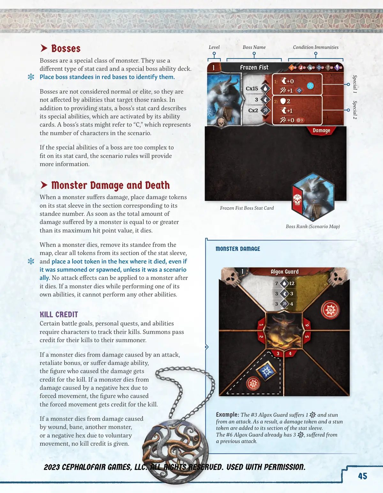
Bosses
Bosses are a special class of monster. They use a
different type of stat card and a special boss ability deck.
Place boss standees in red bases to identify them.
Bosses are not considered normal or elite, so they are
not affected by abilities that target those ranks. In
addition to providing stats, a boss's stat card describes
its special abilities, which are activated by its ability cards. A boss's stats might refer to "C," which represents
the number of characters in the scenario.
If the special abilities of a boss are too complex to
fit on its stat card, the scenario rules will provide
more information.
Monster Damage and Death
When a monster suffers damage, place damage tokens
on its stat sleeve in the section corresponding to its
standee number. As soon as the total amount of
damage suffered by a monster is equal to or greater
than its maximum hit point value, it dies.
When a monster dies, remove its standee from the
map, clear all tokens from its section of the stat sleeve,
and place a loot token in the hex where it died, even if
it was summoned or spawned, unless it was a scenario
ally. No attack effects can be applied to a monster after
it dies. If a monster dies while performing one of its
own abilities, it cannot perform any other abilities.
KILL CREDIT
Certain battle goals, personal quests, and abilities
require characters to track their kills. Summons pass
credit for their kills to their summoner.
If a monster dies from damage caused by an attack,
retaliate bonus, or suffer damage ability,
the figure who caused the damage gets
credit for the kill. If a monster dies from
damage caused by a negative hex due to
forced movement, the figure who caused
the forced movement gets credit for the kill.
If a monster dies from damage caused
by wound, bane, another monster,
or a negative hex due to voluntary
movement, no kill credit is given.
1:
2:
+0
1:
+1
Cx13
Cx2
Cx15
Cx2
2:
+0
+1
+0 3
+1
+0 3
+1
Frozen Fist
Frozen Fist
Frozen Fist Boss Stat Card
Boss Rank (Scenario Map)
Level
Condition Immunities
Boss Name
Special 1
Special 2
Algox Guard
Algox Guard
Algox Guard
Algox Guard
Example: The #3 Algox Guard suffers 1 D and stun
from an attack. As a result, a damage token and a stun
token are added to its section of the stat sleeve.
The #6 Algox Guard already has 3 D, suffered from
a previous attack.
MONSTER DAMAGE
2023 CEPHALOFAIR GAMES, LLC. ALL RIGHTS RESERVED. USED WITH PERMISSION.
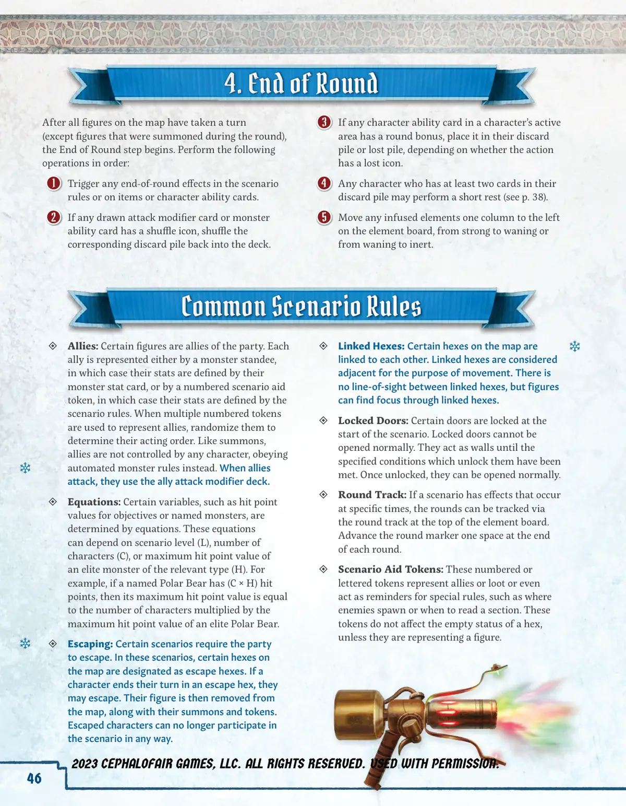
当地图上所有棋子都完成了一个回合
（包括本回合召唤的棋子除外），
回合结束步骤开始。按顺序执行以下操作：
触发场景规则或物品或角色能力卡上的任何回合结束效果。
如果任何摸到的攻击修饰卡牌或怪物能力卡牌有洗牌图标，将对应的弃牌堆洗回牌库。
如果角色的活跃区域中有任何角色能力卡有回合奖励，根据该行动是否有丢失图标，将其放入其弃牌堆或丢失堆。
任何弃牌堆中至少有两张牌的角色可以执行短休息（见第38页）。
将元素板上强效元素和衰减元素各向左移动一列，从强效变为衰减，或从衰减变为无效。
"
盟友：某些棋子是队伍的盟友。每个盟友要么由怪物立牌代表，这种情况下其数值由其怪物数值卡定义，要么由编号的场景援助指示物代表，这种情况下其数值由场景规则定义。当使用多个编号指示物代表盟友时，随机化它们以确定其行动顺序。如同召唤物，盟友不由任何角色控制，而是遵循自动怪物规则。当盟友攻击时，它们使用盟友攻击修饰牌库。
"
方程式：某些变量，如目标或命名怪物的生命值，由方程式确定。这些方程式可能取决于场景等级(L)、角色数量(C)或相关类型精英怪物的最大生命值(H)。例如，如果一只命名北极熊有(C × H)点生命值，那么其最大生命值等于角色数量乘以精英北极熊的最大生命值。
"
逃脱：某些场景要求队伍逃脱。在这些场景中，地图上的某些六边形被指定为逃脱六边形。如果角色在其回合结束时位于逃脱六边形，他们可以逃脱。他们的棋子及其召唤物和指示物将从地图上移除。已逃脱的角色不再能以任何方式参与场景。
"
链接六边形：地图上的某些六边形相互链接。链接六边形在移动目的上被视为相邻。链接六边形之间没有视线，但棋子可以通过链接六边形获得专注。
"
锁门：某些门在场景开始时是锁着的。锁门无法正常打开。它们充当墙壁，直到满足指定的解锁条件。一旦解锁，它们可以正常打开。
"
回合轨道：如果场景有在特定时间发生的效果，可以通过元素板顶部的回合轨道来追踪回合。
在每个回合结束时，将轮次指示物前进一格。
"
场景辅助指示物：这些带有数字或字母的指示物代表盟友或战利品，甚至可以作为特殊规则的提醒，例如敌人生成的位置或何时阅读某个章节。这些指示物不会影响六边形的空置状态，除非它们代表一个棋子。
4. 回合结束
4. 回合结束
通用场景规则
通用场景规则
2023 CEPHALOFAIR GAMES, LLC. 保留所有权利. 经授权使用.
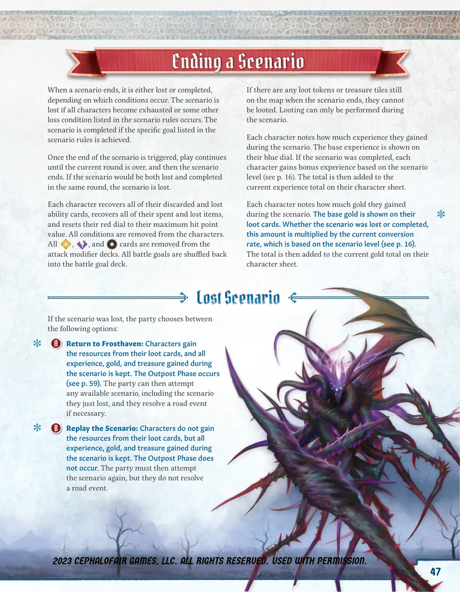
当一个场景结束时，它要么失败，要么完成，
取决于发生了哪些条件。如果所有角色都变得疲惫，或者场景规则中列出的其他失败条件发生，则场景失败。如果场景规则中列出的特定目标达成，则场景完成。
一旦场景结束被触发，游戏继续进行直到当前轮次结束，然后场景结束。如果场景在同一轮次中既会失败又会完成，则场景失败。
每个角色回收他们所有被弃置和失去的能力牌，回收他们所有已使用和失去的物品，并将他们的红色转盘重置为他们的最大生命值。所有状态效果从角色身上移除。所有b、c和*牌从攻击牌组中移除。所有战斗目标被洗回战斗目标牌组。
如果场景结束时地图上还有任何战利品指示物或宝藏板块，它们不能被掠夺。掠夺只能在场景进行期间执行。
每个角色记录他们在场景中获得多少经验值。基础经验值显示在他们的蓝色转盘上。如果场景完成，每个角色根据场景等级获得额外经验值（见第16页）。然后将总数添加到他们角色表上的当前经验值总数中。
每个角色记录他们在场景中获得多少金币。基础金币显示在他们的掠夺牌上。无论场景是失败还是完成，这个金额都会根据当前兑换率进行乘算，该兑换率基于场景等级（见第16页）。然后将总数添加到他们角色表上的当前金币总数中。
如果场景失败，队伍在以下选项中选择：
返回寒霜港：角色从他们的掠夺牌中获得资源，并且在场景中获得的所有经验值、金币和宝藏都被保留。前哨阶段发生（见第59页）。然后队伍可以尝试任何可用的场景，包括他们刚刚失败的场景，并在必要时解决道路事件。
重玩场景：角色不从他们的掠夺牌中获得资源，但场景中获得的所有经验值、金币和宝藏都被保留。前哨阶段不发生。然后队伍必须再次尝试该场景，但他们不解决道路事件。
A
B
结束场景
结束场景
失败的场景
失败的场景
2023 CEPHALOFAIR GAMES, LLC. ALL RIGHTS RESERVED. USED WITH PERMISSION.
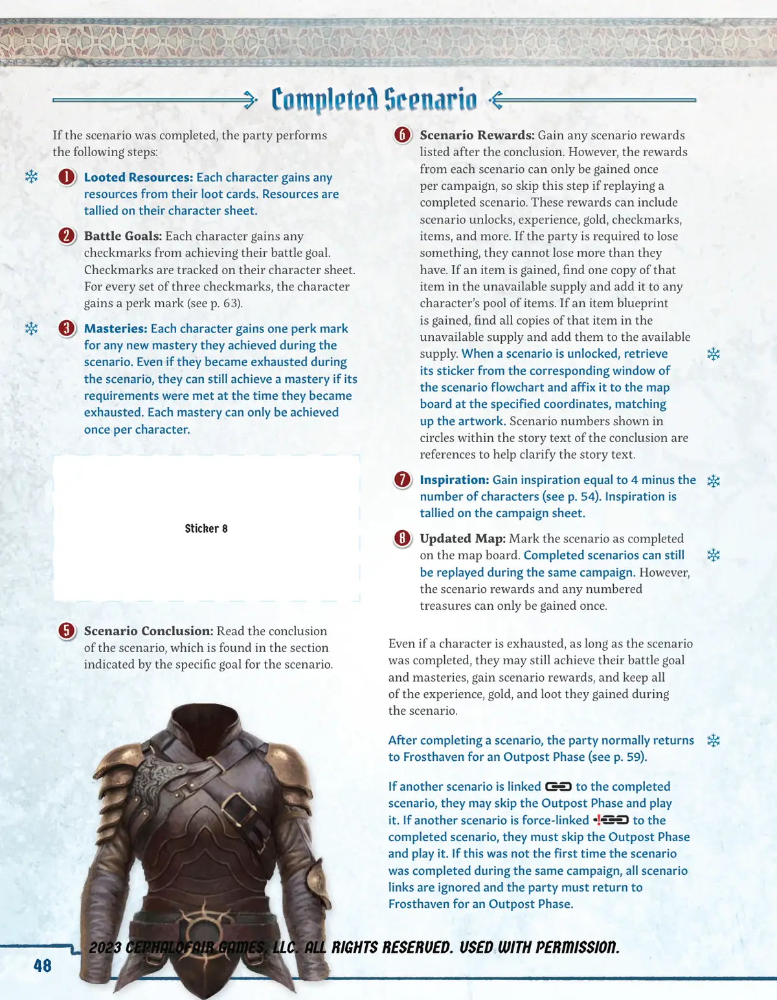
完成场景
冒险开始
战役概览
地图版图
场景流程图
构建牌库
角色卡
战役记录表
资源
城镇卫队牌库
解锁新建筑
解锁新职业
物资供应
前哨阶段
时光流逝
前哨事件
攻击事件
防御检定
损坏的建筑
毁坏的建筑
建筑运营
闲暇时间
升级
特殊能力
退役一个角色 . . . . . . . . . . . . . . . . . . . . . . . . . . . . . . . . . . . . . . . . . . 64
创建一个角色 . . . . . . . . . . . . . . . . . . . . . . . . . . . . . . . . . . . . . . . . . . 65
制作物品 . . . . . . . . . . . . . . . . . . . . . . . . . . . . . . . . . . . . . . . . . . . . . . . . . 65
酿造药水 . . . . . . . . . . . . . . . . . . . . . . . . . . . . . . . . . . . . . . . . . . . . . . . . 66
出售物品 . . . . . . . . . . . . . . . . . . . . . . . . . . . . . . . . . . . . . . . . . . . . . . . . . . . . 67
购买物品 . . . . . . . . . . . . . . . . . . . . . . . . . . . . . . . . . . . . . . . . . . . . . . 67
建设 . . . . . . . . . . . . . . . . . . . . . . . . . . . . . . . . . . . . . . . . . . . . . . . . . . . . . 68
游戏变体 . . . . . . . . . . . . . . . . . . . . . . . . . . . . . . . . . . . . . . . . . . . . . . . . 69
休闲模式 . . . . . . . . . . . . . . . . . . . . . . . . . . . . . . . . . . . . . . . . . . . . . . . . . . . . 69
跨职业 . . . . . . . . . . . . . . . . . . . . . . . . . . . . . . . . . . . . . . . . . . . . . . . . 69
<剧透变体> . . . . . . . . . . . . . . . . . . . . . . . . . . . . . . . . . . . . . . . . . . . . . . . . 69
降低随机性 . . . . . . . . . . . . . . . . . . . . . . . . . . . . . . . . . . . . . . . . . . . 69
单人模式 . . . . . . . . . . . . . . . . . . . . . . . . . . . . . . . . . . . . . . . . . . . . . . . . . . . . . . . 69
开放信息 . . . . . . . . . . . . . . . . . . . . . . . . . . . . . . . . . . . . . . . . . . . . . . . 69
永久死亡 . . . . . . . . . . . . . . . . . . . . . . . . . . . . . . . . . . . . . . . . . . . . . . . . 70
角色重配 . . . . . . . . . . . . . . . . . . . . . . . . . . . . . . . . . . . . . . . . . . . 70
随机地下城 . . . . . . . . . . . . . . . . . . . . . . . . . . . . . . . . . . . . . . . . . . . . . 70
附录 <剧透> . . . . . . . . . . . . . . . . . . . . . . . . . . . . . . . . . . . . . . . 72
附录 A: 组件清单 . . . . . . . . . . . . . . . . . . . . . . . . . . . . . . 72
附录 B: 怪物回合指南 . . . . . . . . . . . . . . . . . . . . . . . . . . . . . . . 74
附录 C: 重要提醒 . . . . . . . . . . . . . . . . . . . . . . . . . . . . . . 76
附录 D: <剧透> . . . . . . . . . . . . . . . . . . . . . . . . . . . . . . . . . . . . . . . . . . . 77
附录 E: 宝物索引 . . . . . . . . . . . . . . . . . . . . . . . . . . . . . . . . . . . . . 78
附录 F: <剧透> . . . . . . . . . . . . . . . . . . . . . . . . . . . . . . . . . . . . . . . . . . . 79
附录 G: 索引 . . . . . . . . . . . . . . . . . . . . . . . . . . . . . . . . . . . . . . . . . . . . . . 80
Credits <spoiler>. . . . . . . . . . . . . . . . . . . . . . . . . . . . . . . . . . . . . . . . . . . . . 82
2023 CEPHALOFAIR GAMES, LLC. ALL RIGHTS RESERVED. USED WITH PERMISSION.
贴纸 8
如果场景已完成，小队执行以下步骤：
掠夺资源：每个角色从他们的掠夺卡牌中获得任何资源。资源在他们的角色表上计算。
战斗目标：每个角色因达成他们的战斗目标而获得任何勾号。勾号在他们的角色表上追踪。每三个勾号为一组，角色获得一个特长标记（见第63页）。
精通：每个角色在场景中获得的任何新精通获得一个特长标记。即使他们在场景中变得疲惫，如果他们在变得疲惫时满足了精通的要求，他们仍然可以获得该精通。每个角色每个精通只能获得一次。
场景结论：阅读场景的结论，该结论在场景特定目标指示的部分中找到。
场景奖励：获得结论后列出的任何场景奖励。但是，每个场景的奖励在每个战役中只能获得一次，所以如果重玩已完成的场景，请跳过此步骤。这些奖励可以包括场景解锁、经验值、金币、勾号、物品等。如果小队需要失去某些东西，他们不能失去超过他们拥有的数量。如果获得一件物品，在不可用供应中找到该物品的一个副本，并将其添加到任何角色的物品池中。如果获得物品蓝图，在不可用供应中找到该物品的所有副本，并将它们添加到可用供应中。当一个场景被解锁时，从场景流程图的相应窗口中取出其贴纸，并将其粘贴到地图版图上的指定坐标处，使图案对齐。结论故事文本中圆圈内显示的场景编号是帮助澄清故事文本的参考。
灵感：获得等于4减去角色数量的灵感（见第54页）。灵感在战役表上计算。
更新地图：在地图版图上将场景标记为已完成。在同一个战役中，已完成的场景仍然可以重玩。但是，场景奖励和任何编号的宝藏只能获得一次。
即使一个角色变得疲惫，只要场景已完成，他们仍然可以达成他们的战斗目标和精通，获得场景奖励，并保留他们在场景中获得的所有经验值、金币和战利品。
完成场景后，小队通常返回霜冻前哨站进行前哨站阶段（见第59页）。
如果另一个场景链接到已完成的场景，他们可以跳过前哨站阶段并直接进行该场景。如果另一个场景强制链接到已完成的场景，他们必须跳过前哨站阶段并进行该场景。如果这不是第一次该场景
在同一战役期间完成，所有剧情链接都被忽略，小队必须返回霜冻前哨站进行前哨阶段。
已完成的剧情
已完成的剧情
2023 CEPHALOFAIR GAMES, LLC. 保留所有权利。经授权使用。
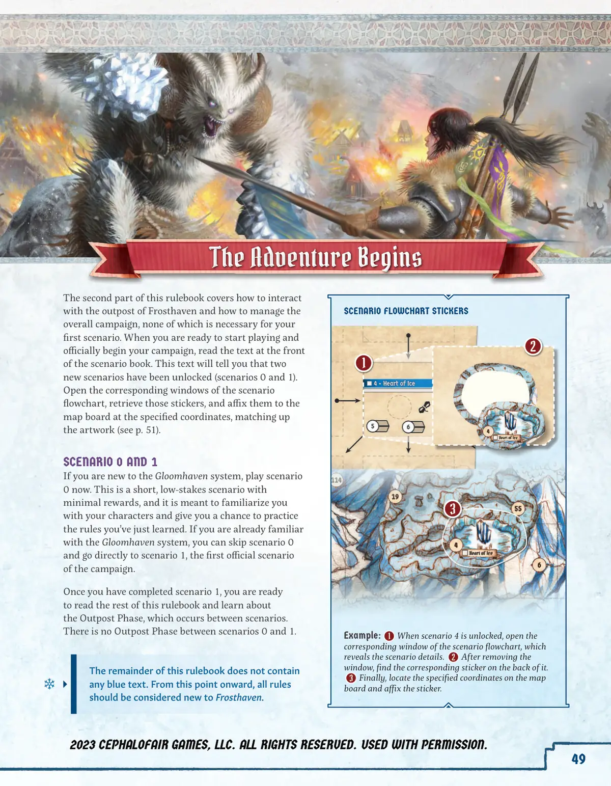
本规则书第二部分涵盖了如何与霜冻前哨站互动以及如何管理整个战役，这些内容在您进行第一个场景时并不必要。当您准备好开始游戏并正式开启战役时，请阅读场景书前面的文字。这段文字会告诉您有两个新场景已被解锁（场景0和1）。打开场景流程图的相应窗口，取出那些贴纸，并将它们粘贴到地图板上指定的坐标处，使图案对齐（参见第51页）。
场景0和1
如果您是Gloomhaven系统的新手，现在就玩场景0。这是一个简短、低风险的场景，奖励很少，旨在让您熟悉自己的角色，并给您一个练习刚刚学到的规则的机会。如果您已经熟悉Gloomhaven系统，可以跳过场景0，直接进入场景1，这是战役的第一个正式场景。
完成场景1后，您就可以阅读本规则书的其余部分，了解场景之间的前哨站阶段。场景0和1之间没有前哨站阶段。
本规则书的其余部分不包含任何蓝色文字。从此处开始，所有规则都应被视为Frosthaven的新规则。
冒险开始
冒险开始
场景流程图贴纸
示例：1 当场景4被解锁时，打开场景流程图的相应窗口，显示场景详情。2 移除窗口后，在窗口背面找到相应的贴纸。3 最后，在地图板上找到指定的坐标并贴上贴纸。
2023 CEPHALOFAIR GAMES, LLC. 保留所有权利。经授权使用。
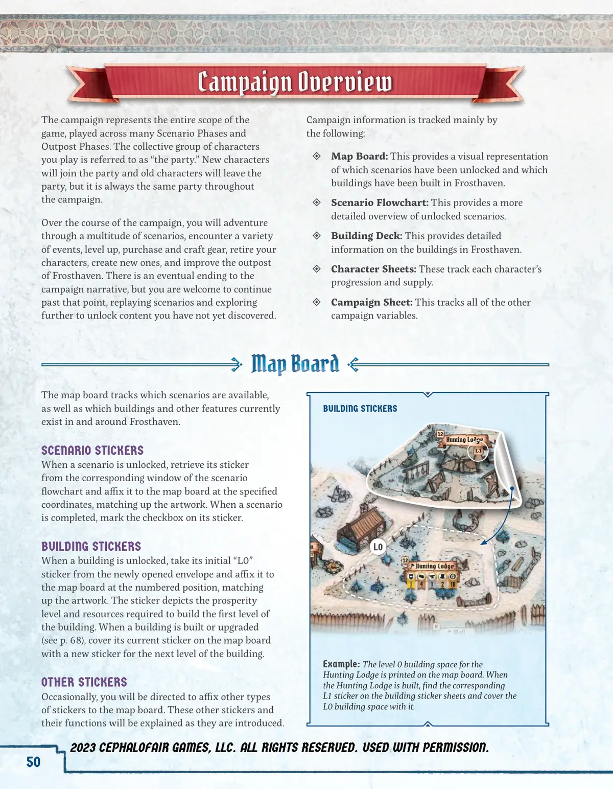
战役代表了游戏的全部范围，跨越多个场景阶段和前哨阶段。你扮演的集体角色组被称为"队伍"。新角色将加入队伍，旧角色将离开队伍，但在整个战役中，这始终是同一支队伍。
在战役过程中，你将经历众多场景，遭遇各种事件，升级角色，购买和制作装备，退休角色，创建新角色，并改善 Frosthaven（寒霜港）的前哨。战役叙事最终会有一个结局，但你欢迎继续进行，重玩场景并进一步探索，以解锁尚未发现的内容。
战役信息主要通过以下内容进行追踪：
地图版图：这提供了哪些场景已被解锁以及 Frosthaven 中已建造哪些建筑的视觉表示。
场景流程图：这提供了对已解锁场景的更详细概览。
建筑牌库：这提供了 Frosthaven 中建筑的详细信息。
角色表：这些追踪每个角色的进度和补给。
战役表：这追踪所有其他战役变量。
地图版图追踪哪些场景可用，以及 Frosthaven 内部和当前有哪些建筑和其他特征。
场景贴纸
当场景被解锁时，从场景流程图的相应窗口中取出其贴纸，并将其粘贴到地图版图的指定坐标处，使图案匹配。当场景完成时，在其贴纸上勾选复选框。
建筑贴纸
当建筑被解锁时，从新打开的信封中取出其初始"L0"贴纸，并将其粘贴到地图版图的编号位置，使图案匹配。该贴纸描绘了建造建筑第一层所需的繁荣程度和资源。当建筑被建造或升级（见第68页）时，用建筑下一层的新贴纸覆盖地图版图上其当前贴纸。
其他贴纸
偶尔，你会被指示将其他类型的贴纸粘贴到地图版图上。这些其他贴纸及其功能将在引入时进行解释。
战役概览
战役概览
地图版图
地图版图
建筑贴纸
示例：地图版图上印有狩猎小屋（Hunting Lodge）的0级建筑空间。当狩猎小屋被建造时，在建筑贴纸上找到对应的L1贴纸，并用它覆盖L0建筑空间。
狩猎小屋
狩猎小屋
L1
小屋
L0
2023 CEPHALOFAIR GAMES, LLC. 保留所有权利. 经授权使用.
场景流程图展示了各个场景是如何相互连接的。当一个场景被解锁时，打开并撕掉流程图上对应的窗口。窗口背面有一张贴纸，应将其粘贴到版图上的指定坐标处（或者在"FR"的情况下，粘贴到版图下半部分的编号位置）。
流程图上显示的部分将包含关于该场景的信息，包括其名称、编号、坐标、地理位置以及任何要求。更多详情请参见流程图背面的图标说明。
每个场景名称下方的彩色条表示它属于哪个场景链，流程图上各个窗口之间的箭头显示了场景之间的连接方式。这些使得追踪你在战役中的路径更加容易。
在战役过程中，一些已解锁的场景可能会被锁定，这意味着它们不再可用。当这种情况发生时，将一张红色锁定贴纸粘贴到流程图的相应部分。
场景流程图
场景流程图
场景流程图
示例：一个示例场景流程图窗口，包含 1 编号、2 名称、3 坐标、4 场景链颜色、5 关联场景、6 要求、7 锁定贴纸部分和 8 连接箭头。
2023 CEPHALOFAIR GAMES, LLC. 保留所有权利. 经授权使用.
建筑牌库包含一张对应于当前在寒境（Frosthaven）中存在的每个可互动建筑的卡牌。初始建筑牌库由兵营（1级）、工匠坊（1级）、炼金术士工坊（1级）和工坊（1级）组成。在战役开始时，应用这些卡牌上标示的任何一次性效果。
建筑牌库中的卡牌应始终根据其参考号码按顺序排列。如果一个建筑有多个等级，只有对应其当前等级的卡牌应留在牌库中。每张卡牌有正常面和损坏面。当建筑状态改变时，其卡牌相应翻转。所有不在建筑牌库中的建筑卡牌应单独存放或保存在其原始信封中。
建筑卡牌包含以下内容：
名称和等级：建筑的名称和等级。
参考号码：建筑的参考号码。
正常建筑效果：建筑在建筑操作阶段（见第62页）的正常效果。
可用互动：在空闲阶段（见第62页）可在建筑处进行的互动。
升级费用：升级建筑所需的繁荣等级和资源。
修复费用：建筑受损时修复所需的资源。
一次性效果：卡牌首次加入牌库时发生的效果。
损坏建筑效果：建筑在建筑操作阶段损坏时的效果（见第62页）。
不可用互动：建筑在空闲阶段损坏时不可用的互动（见第62页）。
重建费用：建筑损坏时重建所需的资源。
A
B
C
D
E
F
G
H
I
J
建筑牌库
建筑牌库
等级
集体购买
最多1个 每个2金币
狩猎小屋
!
+1繁荣
172.3
任意2个
无
B
C
D
E
A
F
G
建筑卡牌（正常面）
等级
无效果
无
狩猎小屋
H
J
不可用
互动
翻回正面
建筑卡牌（损坏面）
I
2023 CEPHALOFAIR GAMES, LLC. 保留所有权利. 经授权使用.
:
:
:
:
:
:
金币 :
备注 :
精通 :
特长
姓名 :
等级 :
经验值 :
经验值 :
资源：
在你的第一个回合执行一次旗帜召唤能力，在整个场景中保持旗帜存活且在你3格范围内
+1 张卡牌
+
+1 张卡牌
1+
使用三种不同的范围攻击能力各攻击至少三个敌人
+2 张卡牌
1+
+2 张"1，自身"卡牌
将1张卡牌替换为1张"1"卡牌
1-
在你的每次长休息结束时，授予3格范围内的一个盟友：2
每个场景一次，在你的回合期间，为该轮获得2
当你使用移动能力打开一扇门时，+3
:
:
忽略装备效果并移除1张卡牌
1-
将1张卡牌替换为1张"为目标相邻的每个盟友+1"卡牌
+
1+
人类旗帜长矛
每个角色都有独立的人物卡，用于追踪与角色进展相关的各种信息。每个便签本包含多张表格，但任何给定时间只能存在每个职业的一个角色。
人物卡包含以下内容：
职业：角色职业的图标和名称。
姓名：一个用于写下角色给定名称的空间。
等级：一条标记角色当前等级的轨道，同时也显示达到每个等级所需的经验值要求。
经验值：一个记录角色当前经验值总量的空间。
金币：一个记录角色当前金币总量的空间。金币不能在角色之间转移。
资源：一个记录角色个人资源供应量的空间。
备注：一个用于记录战斗目标和个人任务等一般备注的空间。
精通：列出两个角色职业独有的精通，可以通过获得特长标记来达成（见第48页）。
勾选标记：最多18个勾选标记的轨道。每三个勾选标记为一组，角色获得一个特长标记（见第63页）。
特长：列出角色职业独有的角色特长，可以通过花费特长标记来获得（见第63页）。
A
B
C
D
E
F
G
H
I
J
人物卡
人物卡
A
B
C
F
G
H
D
E
I
J
2023 CEPHALOFAIR GAMES, LLC. 保留所有权利。经许可使用。
团队拥有一张战役记录表，用于追踪与战役相关的各种信息。便签本包含多张表格，以防有需要，但任何时候只能进行一场战役。
战役记录表包含以下内容：
战役日历：这追踪时间的流逝，以周为单位计算。当团队在完成一个剧情后返回霜冻港时，标记下一个方框。您也可能被指示在战役的其他时候标记下一个方框。标记这些方框可能产生各种效果（见第59页）。
每季有10周，每年有两个季节：夏季和冬季。如果战役持续超过四年，请使用新的战役记录表来继续追踪时间的流逝。
霜冻港补给：这追踪团队的资源。此处的任何物质资源可用于支付各种建筑成本，而任何草药资源可用于制作物品和酿造药水。此处的所有资源都可用于支付剧情或事件中的集体成本。
任何时候，角色都可以将资源从他们的个人补给移动到霜冻港补给，但不能将资源从霜冻港补给移动到他们的个人补给。
灵感值：这标记团队当前的灵感。当团队获得"±X灵感"时，相应地调整此值。当团队完成一个剧情时，他们获得的灵感等于4减去角色数量。团队可以在支付各种建筑成本时，使用任意数量的灵感来代替同等数量的物质资源。角色在退休时可以花费15灵感来完成一个额外的个人任务（见第64页）。
总防御值：这标记霜冻港当前的防御值。此值主要在解决攻击事件时被参考（见第60页）。当团队获得"±X防御"时，相应地调整此值。士气轨道的修饰符不是累积的；只有当前修饰符适用。
士兵：这些可以在攻击事件期间花费，以提高任何防御检定成功的几率（见第61页）。当团队获得或失去X名士兵时，相应地标记或擦除X个圆圈。团队可以拥有的士兵数量受当前兵营级别的限制。
士气轨道：这标记霜冻港当前的士气。某些事件结果有士气要求，霜冻港的总防御受到当前士气旁边指示的修饰符影响（见第61页）。当团队获得"±X士气"时，相应地调整此轨道。团队可以失去1点士气来执行修理，而不是花费资源（见第61页），他们可以失去2点士气来执行额外的建造或升级（见第68页）。士气轨道有一个
最小值（0）和最大值（20）。
如果最小值或最大值达到，
从章节书中阅读指定部分。
队伍的初始士气在
场景1结束时确定。
战役贴纸：这追踪队伍的
战役贴纸。当队伍获得
战役贴纸时，将其贴在此处。如果同时获得
一个战役贴纸又失去另一个，
用新的贴纸覆盖旧的贴纸。
拥有特定的战役贴纸可以改变
事件或场景的结果。
繁荣度轨道：这标记着
弗罗斯特黑文当前的繁荣度。
繁荣度级别决定了新角色的
最高起始等级（见第65页）和
建筑升级的最高等级（见第68页）。当队伍获得
"+X繁荣度"时，标记接下来的X个方格。每次
标记编号方格时，繁荣度级别增加。当队伍获得
"-X繁荣度"时，擦除之前的X个方格，但不要
擦除编号方格或更早的方格。
A
B
C
D
战役表
战役表
E
F
G
H
2023 CEPHALOFAIR GAMES, LLC. 保留所有权利. 经授权使用.
贴纸9（覆盖"城镇守卫特权"上方的文字）
"
退休表：这作为已退休角色的持续记录。当一个角色退休时（见第64页），将其信息记录在此表中。玩家在战役期间退休的角色数量决定了新创建的角色能获得多少个特权标记奖励（见第63页）。
"
城镇守卫特权：这些与战役期间引入的机制相关。在建造90号建筑之前，可以忽略这一点。
I
J
F
J
A
B
G
C
D
H
I
E
2023 CEPHALOFAIR GAMES, LLC. ALL RIGHTS RESERVED. USED WITH PERMISSION.
<!--page:56>
资源可以在角色的个人供应中或在寒霜港的供应中。当队伍获得或失去集体资源时，可以将其添加到任何供应中或从中取出。当队伍失去集体资源时，如果所有供应加起来不够，他们会失去他们拥有的资源，剩余部分被忽略。
有三种材料资源：
L 木材
M 金属
H 兽皮
角色可以使用其个人供应中的材料资源来制作物品。所有角色都可以使用寒霜港供应中的材料资源来支付各种建筑费用，但不能用于制作物品。
有六种草药资源：
A 箭藤
X 斧坚果
C 尸菌帽
F 火焰果
R 岩根
S 雪苔
在战役开始时，城镇守卫牌库是一个标准20张牌的牌库，组成如下：
随着城镇守卫获得特权标记和队伍在战役期间获得各种其他奖励，牌库中的牌会被添加和移除。牌库中的每张牌都有一个唯一的参考编号。
在解决攻击事件时（见第60页），会从城镇守卫牌库中抽牌，这与解决攻击时抽攻击修正牌的方式非常相似。
资源
资源
城镇守卫牌库
城镇守卫牌库
"
六张牌
"
五张Y牌
"
五张T牌
"
一张牌
"
一张牌
"
一张W牌
"
一张S牌
城镇守卫牌库
x1
成功
成功
1439
1439
x1
破坏
破坏
1438
1438
x6
+ 0
+ 0
1420
1420
x5
- 10
- 10
1431
1431
x5
+ 10
+ 10
1426
1426
x1
+ 20
+ 20
1436
1436
x1
- 20
- 20
1437
1437
2023 CEPHALOFAIR GAMES, LLC. ALL RIGHTS RESERVED. USED WITH PERMISSION.
新建筑通过角色退休解锁（见第64页）。每个新建筑都有一个对应的密封信封，信封上标注着两位数编号。
当建筑解锁后，你可以自由打开其信封并检查内容。将信封中的个人任务牌洗入个人任务牌库。从信封中取出"L0"贴纸，并将其粘贴到版图下半部分的编号位置，与图案对齐。解锁的建筑仍需在队伍能够与其互动之前建造。
解锁的建筑通常会引入新规则。找到信封 flap 下指定的任何规则贴纸，并将它们粘贴到本规则书的相应章节中，与编号对齐。所有建筑牌和其他材料应保存在信封中，直到需要使用时。
新职业通过战役进程解锁。有11个可以解锁的新职业。每个新职业有两个对应的密封纸盒，纸盒上标注着职业图标。
当职业解锁后，你可以自由打开其纸盒并检查内容，包括高级能力牌。当玩家创建新角色时（见第65页），该职业现在可用。
解锁新建筑
解锁新建筑
解锁新职业
解锁新职业
密封建筑信封
锁定的职业图标
密封纸盒
2023 CEPHALOFAIR GAMES, LLC. 保留所有权利. 经授权使用.
不在角色池中的物品被分为两组：可用供应和不可用供应。这两组物品在游戏盒中用分隔卡分开存放，并根据它们是否有金币成本或制作成本，进一步分为可购买物品子组和可制作物品子组。
物品可以通过以下方式添加到可用供应中：
升级建筑：当工匠或某些其他建筑被升级时，将列出的物品从不可用供应移动到相应的可用供应（可购买物品或可制作物品，取决于建筑）。
制作和出售：当角色花费物品来支付制作成本（见第65页）或出售物品换取金币（见第67页）时，将物品返回到相应的可用供应。
角色退役：当角色退役时（见第64页），将他们所有的物品返回到相应的可用供应。
获得蓝图：当小队获得物品蓝图时，将该物品的所有副本从不可用供应移动到可用制作供应。
酿造药水：当小队酿造新药水时（见第66页），将该物品的所有剩余副本从不可用供应移动到可用制作供应。
即使添加到可用供应中，某些物品的获取也受到限制。可用供应中的可制作物品可以通过在停机步骤期间与工匠互动来获得，但可用供应中的可购买物品只能在特定条件下获得（例如，创建新角色、阅读特定章节等）。
只有当游戏效果特别指示小队这样做时，物品才会返回到不可用供应。
GLOOMHAVEN 物品
如果你拥有《Gloomhaven》，该游戏中的某些物品可以作为选项进入 Frosthaven 的可用购买供应，但前提是这些物品在 Gloomhaven 中已经可用。
在 Frosthaven 活动开始时，只有物品 10、25、72、105、109 和 116 可用，但随着建筑的建造，其他物品也将变得可用。然而，Gloomhaven 的单人模式物品只能由相应的职业使用，不应添加到可用购买供应中。
一些来自 Gloomhaven 的物品可用于召唤额外的盟友。使用 Gloomhaven 的召唤标记来追踪这些额外召唤。就能力牌效果而言，这些额外召唤不被视为由召唤它们的角色拥有（尽管它们仍然在召唤角色之前行动并使用他们的攻击修饰牌组）。
物品供应
物品供应
2023 CEPHALOFAIR GAMES, LLC. 保留所有权利。经许可使用。
时光流逝
在每个场景阶段之后，队伍必须返回霜冻港(Frosthaven)并进行前哨站阶段，除非出现以下情况：
如果场景失败，队伍可以立即重玩该场景（参见第47页）。
如果场景有任何可关联的可用场景，队伍可以立即玩其中一个关联场景。有些场景是强制关联的，在这种情况下，队伍必须立即玩指定的关联场景（参见第48页）。
前哨站阶段涉及在霜冻港(Frosthaven)度过时间，以解决事件、获取新物品和能力，以及与建筑互动。每个前哨站阶段包含五个不同的步骤：
时光流逝
前哨站事件
建筑运营
休息时间
建造
在前哨站阶段开始时，时间流逝。在日历上标记下一个未标记的方框，表示一周已经过去。
偶尔会指示你在日历上的未来几周添加章节编号。从最后一个标记的方框开始数指定的周数，然后在那个方框中写下章节编号。当你标记一个包含章节编号的方框时，立即从章节书中阅读指定的章节。如果有多个章节编号，可以按任意顺序依次阅读这些章节。
在某些事件和场景中，时间可能会在前哨站阶段之外流逝。当这种情况发生时，如果你标记了一个包含章节编号的方框，不要立即阅读指定的章节。相反，将章节编号写在下一个未标记的方框中，以便在下一次前哨站阶段时间流逝时触发。
当日历上的一组10个方框被填满时，季节变化就会发生——要么是从夏季到冬季（填满一行的前半部分），要么是从冬季到夏季（填满一行的后半部分）。两个季节之间的主要区别在于道路和前哨站事件将使用哪个牌库。
前哨站阶段
前哨站阶段
1. 时光流逝
1. 时光流逝
当你移动时，
它似乎充满了活力。
不过，这是
从你身上传来的
疼痛。空气中的寒冷将你
直接带入更多的
一辆堆满毯子和地毯的马车
被夹在雪堆和城镇边缘的一栋建筑之间。
它的老主人看到你漫步而过，环顾四周后向你招手。
"好地方，好地方，这霜冻港(Frosthaven)。
不过很冷，嗯？呵呵。也许你们是
喜欢一些热物品的人。"他自嘲地笑了笑，
同时将毯子固定在他的马车上，
32.3 • 访问商人
x x x x
x
示例：在前哨站阶段开始时，当时间流逝时，队伍在日历上标记下一个未标记的方框。这个方框包含一个章节编号。队伍立即从章节书中阅读第32.3节。
2023 CEPHALOFAIR GAMES, LLC. 保留所有权利。经许可使用。
在时间流逝步骤之后，除非你被指示本周不要解决前哨事件，否则从活跃的前哨事件牌库顶摸一张牌并解决它。如果日历显示夏季，则摸一张夏季前哨事件。如果日历显示冬季，则摸一张冬季前哨事件。前哨事件的解决方式与道路事件完全相同（见第12页）。
攻击事件
攻击事件是特殊的前哨事件，需要小队防御弗罗斯特黑文免受攻击。在这些攻击期间，建筑将成为目标，并可能受损甚至被摧毁。攻击的频率在冬季明显高于夏季。
攻击显示在事件卡背面，位于事件卡正面呈现的任何选择结果下方。这些结果通常会以某种方式改变攻击。卡背面包含以下内容：
攻击值：这表示在防御检查中必须达到或超过的数值，以防御被选定的建筑。
目标值：这表示攻击选定的建筑总数。小队必须为每个被选定的建筑单独进行一次防御检查。
目标优先级：这表示根据建筑的参考编号，哪些未被摧毁的建筑被攻击攻击，以及攻击的顺序。如果攻击没有目标优先级，则由小队决定。每个建筑只能被攻击一次，即使目标优先级中的建筑数量低于目标值。
A
B
C
2. 前哨事件
2. 前哨事件
按降序攻击奇数编号的建筑。
当你砍倒最后一只狂暴的猎犬时，瓦尔拉斯人下马向你问候。"真的感谢你...我想没有你们的干预我们无法幸存。我们从金达来建立贸易路线——我当然希望未来的旅程会更加愉快！"
获得3点集体资源和1点繁荣。
4 B
C
A
前哨事件
你欢快地投出你的选票并等待结果。奥姆斯特德船长仔细地统计了票数。
"好了，七票支持红色。恭喜大家。"
萨tha翻了个白眼。"好吧。如果这让你们觉得自己有点权力，那很好。这毫无意义。现在回去工作！"
你投出你的选票并满怀期待地站着，等待奥姆斯特德船长统计票数。
"哦天哪。七票支持蓝色。我们有了第一次投票决定！"
萨tha插话道。"也是你们最后一次投票决定。我希望这让你们觉得自己在这里有点权力。这毫无意义，不会改变任何事情。"
获得1点士气。
将"蓝色水井"战役贴纸放在城镇地图的G位置。
将事件WO-76添加到冬季前哨牌库，将事件SR-40添加到夏季道路牌库。
A.
B.
获得1点士气。
将"红色水井"战役贴纸放在城镇地图的G位置。
将事件 WO-75 添加到冬季前哨站牌库，并将事件 WR-43 添加到冬季道路牌库。
选项 A：打开包裹。
选项 B：尊重他们的请求。
叩叩叩！"邮件呼叫，开门。"
你打开门，发现一个脾气暴躁的 Quatryl（夸特里尔）背着一个低垂的邮袋。她将一个用绳子捆扎的鼓鼓囊囊的包裹扔给你。"没有名字，但有这个地址。现在它是你的了！"
当她走开时，她 snap 了一下手指，想起了什么。"哦，对了。还有这个。"她交给你一封写给你的信。当她漫不经心地走向一杯饮料时，你撕开信封，读着一封用优美草书潦草写成的便条：
"请不要打开包裹。
我们会来取回它。
——列奥尼达斯和马克西姆斯"
SO-01
夏季前哨站事件
2023 CEPHALOFAIR GAMES, LLC. 保留所有权利。经许可使用。
防御
检查
防御检查
当攻击发生时，团队必须为每个被攻击的目标建筑进行防御检查。
对于每次防御检查，从城镇卫队牌库中抽取一张牌，并将其加值加入弗罗斯特黑文的总防御值（连同来自事件的任何修正）。
对于任何防御检查，只要兵营未被摧毁，团队可以在抽牌前损失任意数量的士兵，以获得检查优势并降低攻击值，具体取决于兵营的等级和损失的士兵数量。如果兵营被摧毁，防御检查将获得劣势。
如果结果等于或超过攻击值，防御检查成功，建筑得到防御。当抽到并应用"成功"牌时，防御检查自动成功。否则，防御检查失败，建筑受损。对于某些攻击事件，建筑会被摧毁。
当抽到并应用"摧毁"牌时，建筑自动被摧毁。
在攻击事件完全解决之前，不要解决任何建筑受损或被摧毁的效果。攻击后以及攻击过程中牌库耗尽时，需要重新洗混城镇卫队牌库。
受损建筑
当建筑受损时，团队必须立即支付其建筑卡上显示的修复费用。此费用可以用弗罗斯特黑文供应或角色个人供应中的任何类型的资源材料以任意组合支付。如果团队无法或不愿支付此费用，他们将失去1点士气。
被摧毁的建筑
当建筑被摧毁时，将其建筑卡翻到被摧毁的一面。然后，在每一个前哨阶段的建筑操作步骤中，该建筑的被摧毁效果将被解决，直到建筑被重建（见第68页）。
r
W
示例：A 当这次50点攻击发生时，B 弗罗斯特黑文的总防御值为35。C 对于第一个建筑，擦除一名士兵以降低攻击值5点（由于兵营为1级）并获得优势。D 抽取两张城镇卫队牌：Y和T。应用T牌，结果为45，等于攻击值。防御检查成功！这个过程对另外三个建筑重复进行。
等级
集体购买
最多1个，每个2金币
狩猎小屋
!
+1繁荣
172.3
任意2个
无
等级
无效果
无
狩猎小屋
被摧毁的建筑
x
°
°
˚
+ 10
+ 10
1426
1426
按降序攻击奇数编号的建筑。
当你砍倒最后一只狂暴的猎犬时，瓦尔拉人下马向你问候。"真的感谢你们...我想没有你们的干预我们无法幸存。我们从金达来建立贸易路线——我当然希望未来的旅程会更加愉快！"
获得 3 协同 和 1 繁荣。
- 10
- 10
1431
1431
B
A
C
D
D
2023 CEPHALOFAIR GAMES, LLC. 保留所有权利. 经授权使用.
贴纸 12
贴纸 11
贴纸 10
在前哨事件步骤之后，解决所有建筑的效果。按顺序浏览建筑牌库，一次一张牌。对于每座建筑，解决其卡牌顶部O图标旁边的任何正常或损坏效果。
当小队因为这些效果获得或失去金币或资源时，它们可以任意组合方式添加到或取自寒霜港供应或角色个人供应中。如果损失无法完全解决，小队会尽可能多地失去，但没有其他惩罚。然而，一些建筑有可选效果，只有完全支付相关成本才能获得这些好处。
由于建筑运营步骤紧接在前哨事件步骤之后，任何在前哨事件期间被损坏的建筑，在小队甚至有机会重建它之前，其损坏效果将被解决一次。
建筑运营步骤之后，角色可以按照他们希望的任何顺序进行休闲活动。其中许多活动要求角色与特定建筑互动，如果该建筑被损坏，他们就无法进行互动。
"
升级（第62页）
"
退役角色（第64页）
"
创建角色（第65页）
"
制作物品（第65页）
"
酿造药水（第66页）
"
出售物品（第67页）
升级
如果角色的经验总值等于或大于其下一级的经验要求，他们必须在休闲步骤期间升级。
升级有经验要求，如角色表所示，但没有经验成本。角色升级时，其经验总值不会重置。
如果角色的等级低于当前繁荣等级的一半（向上取整），他们可以在休闲步骤期间升级而不需要满足经验要求，甚至可以多次升级，只要他们的等级不超过当前繁荣等级的一半（向上取整）。升级后，将他们的经验总值设置为其新等级的经验要求。
这种升级方式是可选的，不同于通过经验升级。
3. 建筑运营
3. 建筑运营
4. 休闲
4. 休闲
2023 CEPHALOFAIR GAMES, LLC. 保留所有权利. 经许可使用.
升级只能在前哨站阶段进行。角色不能在场景中升级，即使当队伍没有返回霜冻港进行前哨站阶段时也不能在场景之间升级（例如，当队伍尝试一个关联场景时）。
当一个角色升级时，他们必须执行以下操作：
添加能力卡：向他们的牌池中添加一张新的能力卡。他们选择的卡必须匹配他们的职业，并且等级必须等于或低于他们的新等级。例如，当一个角色达到2级时，他们可以添加他们两张2级能力卡中的一张。然后，当他们达到3级时，他们可以添加他们两张3级能力卡中的一张或另一张2级能力卡。这不会增加他们的最大手牌数量，它只是增加了他们在场景开始时可用的卡牌池。
增加生命值：增加他们的最大生命值。在他们的角色版底部的等级轨道上，他们新等级下方红色印刷的数字表示他们新的最大生命值。
获得特长标记：获得一个新的特长标记x。新的特长标记通过在角色版右侧列表中标记相应的方框来应用。获得特长的额外规则概述如下。
特长
特长允许角色通过永久添加和移除卡牌来微调他们的攻击修正牌库。当一个角色获得特长标记时，他们从角色版右侧的特长列表中选择一个特长，标记相应的方框，并解决对其攻击修正牌库的任何变化。特长的效果在获得特长时立即解决，即使是在非停工步骤中获得时也是如此。
特长列表中特长旁边显示的未连接方框数量表示该特长可以被获得的最大次数，每个方框需要一个特长标记。一些特长则有多个连接的方框，所有这些方框都必须用特长标记填满才能获得该特长一次。
"忽略物品效果"特长仅适用于某些物品左下角标注的额外攻击修正卡。"忽略场景效果"特长仅适用于场景书中标记为场景效果的效果。如果一个特长为角色提供了任何与攻击修正牌库无关的其他好处，他们可以将相关的特长提醒卡留在他们的活跃区域作为提醒。
特长标记可以通过四种方式获得：
升级：每次角色升级时，他们获得一个特长标记。
获得勾选标记：每次角色完成一组三个勾选标记时，他们获得一个特长标记。
创建角色：每次创建新角色时，他们获得的特长标记数量等于先前创建的角色数量。
由该玩家在战役期间退役。
"
掌握成就：每当角色获得新的掌握时，他们会获得一个特长标记。有时，角色会被指示失去勾选标记。然而，特长标记不能失去，因此勾选标记只能失去到最后一个完整的三勾选标记组。例如，如果一个角色有八个勾选标记，他们最多可以失去两个勾选标记，但不能更多。
注释：
掌握：
资源：
在你的第一个回合执行一次旗帜召唤能力，在整个场景中保持旗帜存活且在你3格范围内
+1张牌
+
使用三种不同的范围攻击能力各攻击至少三个敌人
+2张牌
1+
+2张"1，自身"牌
在你的每次长休息结束时，授予3格范围内的一名盟友：2
每个场景一次，在你的回合期间，为该轮获得2
当你使用移动能力开门时，+3
:
:
忽略物品效果并移除1张牌
1-
特长提醒卡
在你的每次长休息结束时，授予3格范围内的一名盟友：
不知疲倦的领导力
0058
0058
单个盒子
两个盒子（链接）
两个盒子（未链接）
2023 CEPHALOFAIR GAMES, LLC. 保留所有权利。经许可使用。
退役角色
如果一个角色完成了其个人任务的要求，他们必须在空闲步骤期间退役，尽管他们可以在这样做之前执行所有其他他们想要执行的空闲活动。既然已经实现了他们设定的目标，他们便不再有动力去探索充满怪物的荒野。退役的角色不能再与队伍的其他成员一起参与战役。
当一个角色退役时，完成其个人任务会使队伍获得2点繁荣度，并解锁个人任务卡上指定的建筑信封。如果指定的信封已经解锁，则改为解锁备用信封。如果两个信封都已经解锁，则队伍获得一个随机场景（如果该牌库已耗尽则获得1点灵感）和一个随机物品蓝图（如果该牌库已耗尽则获得1点灵感）。
退役角色可以花费15点灵感一次性抽取两个额外的个人任务并立即选择一个完成，无需满足其要求，然后将另一个洗回牌库。这会使队伍再获得2点繁荣度并解锁另一个建筑信封。退役时完成两个个人任务的效果会同时结算，因此它们不会相互影响。
个人任务卡包含以下内容：
标题：任务的主题性标题。
描述：任务的简短描述。
要求：完成任务的具体要求。
奖励：完成任务所解锁的建筑信封。
退役后
对于每个职业，当该职业的角色在战役中首次退役时，翻转其角色垫，找到背面底部附近的章节编号。在退役角色完成其个人任务的结算后，阅读章节书中指定的章节。
随着角色退役，在战役记录表上的退役表格中记录他们，注明角色名称、玩家名称和其他指示信息。当创建新角色时，该玩家每有一个先前退役的角色，新角色就获得一个特长标记。如果单个玩家在单人模式中使用多个角色（参见第69页），为此目的每个角色的血统要分别计算。
角色退役后，他们的个人任务会从游戏中移除，以及他们在退役时完成的任何额外个人任务。他们的角色材料会被放回相应的收纳盒。他们的物品会返回到可用资源区，他们的资源会移动到寒霜港资源区，而他们的金币会丢失。
退役只能在空闲步骤期间进行。角色不能在场景期间或
即使在不同场景之间，如果小队没有返回 Frosthaven 进行前哨阶段（例如，当小队尝试一个关联场景时）。
A
B
C
D
奖励
植物比人类有趣得多。
有那么多品种，每一种都有独特的特性。如果你能整天只看新植物，你绝对会的。
但你正在看的新植物越来越少。幸运的是，大陆北部有一个全新的生态系统。
通过战利品指示物亲自收集五种不同类型的草药。
植物研究
开启 24
（替代： 42）
A
B
C
D
个人任务牌正面
个人任务牌背面
2023 CEPHALOFAIR GAMES, LLC. 保留所有权利。经许可使用。
创建角色
当玩家退休其之前的角色，或者他们只是想尝试一些新事物时，他们可以在停机步骤期间创建一个新角色。
如果他们之前的角色尚未退休，玩家可以将角色放置一旁以便稍后再次游玩，或者放弃该角色。当放置一旁时，他们的个人任务、物品、金币和资源都会被保留。当放弃时，他们的个人任务会被洗回牌库，他们的物品会被归还到可用供应中，他们的资源会被移动到冰港供应中，而他们的金币则会丢失。
创建角色时，玩家可以选择任何没有活跃角色的职业。这包括在战役期间已经玩过的职业，只要所选职业的所有先前角色都已退休或放弃（不仅仅是放置一旁）。随着战役的进展，新的职业将被解锁。
初始福利
新角色抽取两张个人任务，选择一张保留，并将另一张洗回牌库。
个人任务牌库可能会被抽空。当这种情况发生时，在战役期间创建的任何新角色都不会获得个人任务，因此永远无法退休。然而，玩家仍然可以随时放置一旁或放弃此类角色。
新角色开始拥有 (10 × P + 20) 金币，其中"P"是当前的繁荣等级。这笔起始金币必须立即在可购买的供应中花费在物品上。任何未花费的剩余部分都会丢失。
新角色获得的特权标记数量等于该玩家在战役期间之前退休的角色数量。
繁荣等级提升
由于新角色总是从1级开始，他们可以立即升级而不需要满足经验要求，甚至可以多次升级，只要他们的等级不超过当前繁荣等级的一半（向上取整）。升级后，将他们的经验总值设置为他们新等级所需的经验要求。
制作物品
非药剂物品可以通过与工匠建筑互动来制作。角色通过花费所需的资源或物品来制作物品。支付制作费用时，不能从冰港供应中获取材料资源，但可以获取草药资源。制作角色获得一份所制作物品的副本。
在战役开始时，只有001-010号物品可供制作。随着工匠的升级以及小队发现新的物品蓝图，更多物品将被添加到可制作的供应中。可制作供应中的任何物品都可以被制作。
当制作一个物品需要另一个物品时，如果所需物品的所有副本都由其他玩家拥有
团队成员，制作角色可以花费
作为所需物品成本列出的金币、资源或物品，
而不是花费物品本身。
制作物品
示例：旗帜长矛决定制作一面强化盾牌。他们从个人供应中减去1 L，将他们的 crude shield 010 返回到可制作供应中，并获得强化盾牌 015。
:
:
金币 :
备注 :
精通 :
名称 :
等级 :
经验值 :
经验值 :
资源:
在你的第一个回合执行旗帜召唤能力，在整个场景中保持旗帜存活并在你3格范围内
增加一个
增加一个
使用三种不同的范围攻击能力中的每一种攻击至少三个敌人
增加两个
增加两个
在休息结束时，授予
3: 2
每个场景一次
在你的回合，获得
每当
一个移动能力
:
:
忽略物品
并移除
替换一个
盟友和
卡牌
1+
人类 旗帜长矛
1/2
当敌人要对你施加负面状态时，防止该状态。
crude shield
x1
0900
0900
1/2
强化盾牌
当敌人要对你施加负面状态时，防止该状态。
x2
0910
0910
2/
1i
2023 CEPHALOFAIR GAMES, LLC. 保留所有权利。经许可使用。
炼制药水
药水物品可以通过与炼金术士建筑互动来炼制。角色通过花费任意两种草药资源（从 Frosthaven 供应或个人供应中获取，可任意组合）来炼制药水。参考炼金术图表上这两种草药的组合，查看炼制的是哪种药水。炼制角色获得一份炼制出的药水，他们可以保留或立即给予队伍中的另一名成员。
在战役开始时，炼金术图表上的所有窗口都是关闭的，因此药水配方是未知的。在战役期间，当一种新组合被首次炼制时，打开并撕下炼金术图表上对应的窗口以揭示药水。一旦药水被揭示，该行动无法撤销。在炼制角色获得一份炼制出的药水后，将所有剩余的副本移至可制作供应区。
炼金术士：第2级
一旦炼金术士升级到第2级，炼制的药水可以蒸馏。角色通过将药水从其物品池返回至可制作供应区来蒸馏药水。蒸馏角色获得炼制该药水所需的任意一种草药资源。如果同一药水在炼金术图表的多个窗口中被揭示，蒸馏角色可以从这些药水配方中的任意一个选择一种草药资源。尚未在炼金术图表上揭示的药水无法蒸馏。
炼金术士：第3级
一旦炼金术士升级到第3级，可以通过花费任意三种草药资源来炼制更强大的药水。这三种草药的组合在炼金术图表上各自有对应的窗口。所有使用两种或更多相同草药资源炼制的三草药组合都会产生相同的药水，该药水无法蒸馏。
炼制三种草药
3种草药
示例：Banner Spear 决定使用三种草药资源炼制药水。他们从 Frosthaven 供应中减去1个R、1个S和1个C，然后打开炼金术图表上对应的窗口并获得揭示的药水。
炼制两种草药
2种草药
示例：Banner Spear 决定使用两种草药资源炼制药水。他们从个人供应中减去1个R，从 Frosthaven 供应中减去1个X，然后打开炼金术图表上对应的窗口并获得揭示的药水。
2023 CEPHALOFAIR GAMES, LLC. 保留所有权利. 经授权使用.
贴纸 14
贴纸 13（覆盖"购买物品"文本上方）
出售物品
角色物品池中的物品可以在空闲步骤期间出售。当一个角色获得他们已经拥有的物品的另一个副本时，他们必须立即出售它。当一个角色出售可购买的物品时，他们获得等于其金币成本一半的金币（向下取整）。当一个角色出售可制作的物品时，他们获得每个制作所需资源或物品对应的2金币。出售物品时，将其返回到相应的可用供应区。
购买物品
在建造37号建筑之前，物品不能自由购买。在此之前，可用可购买供应区中的物品只能在创建新角色时使用起始金币购买，或者当游戏效果特别允许角色这样做时才能购买。
2023 CEPHALOFAIR GAMES, LLC. 保留所有权利. 经授权使用.
贴纸 15
在空闲步骤之后，队伍可以建造、升级和重建建筑。他们默认可以建造或升级一座建筑，并且可以损失2点士气来建造或升级第二座建筑。建筑在受损状态下不能被升级。队伍也可以重建任意数量的受损建筑，但必须在所有建造和升级之后才能进行。
建造和升级总是有一个繁荣需求P。只有当当前繁荣等级达到或超过该建造或升级的繁荣需求时，才能执行建造或升级，该需求显示在建造成本（在地图版上）或升级成本（在建筑卡上）旁边。
当建造或升级导致繁荣等级提高时，任何等级低于新繁荣等级一半（向上取整）的角色可以立即升级，无需满足经验要求，甚至可以多次升级，只要他们的等级不超过新繁荣等级的一半（向上取整）。升级后，将他们的经验总值设置为与新等级的经验要求相匹配。
建造
要建造一座已解锁的建筑，队伍必须支付其建造成本，该成本显示在建筑的"L0"贴纸上（在某些情况下直接印刷在地图版上），使用来自寒霜港的资源支付。
支付此成本后，用对应的1级贴纸覆盖它，并将对应的1级卡牌按顺序插入建筑牌库中。
然后队伍获得繁荣奖励并应用建筑卡上指示的任何其他一次性效果。在下一个前哨阶段，建筑的正常效果将生效，其互动也将可用（除非它再次受损）。
升级
要升级现有建筑，队伍必须支付其升级成本，该成本显示在当前建筑卡片的正常面，使用来自寒霜港的资源支付。
支付此成本后，用下一级的贴纸覆盖旧贴纸，并用下一级的卡牌替换建筑牌库中的旧卡牌。
然后队伍获得繁荣奖励并应用新建筑卡上指示的任何其他一次性效果。
重建
要重建一座受损建筑，队伍必须支付重建成本，该成本显示在建筑卡片的受损面，使用来自寒霜港的资源支付。
支付此成本后，将建筑卡片在建筑牌库中翻回正常面。
在下一个前哨阶段，建筑的正常效果将再次生效，其互动也将再次可用（除非它再次受损）。
U
W
5. 建设
5. 建设
B
2023 CEPHALOFAIR GAMES, LLC. ALL RIGHTS RESERVED. USED WITH PERMISSION.
休闲模式
在休闲模式下，小队可以游玩任何已解锁的剧情，无论其要求如何。当剧情以休闲模式游玩时，所有战役效果都被忽略。不解析任何事件，时间不流逝，小队不会获得任何经验、战利品、财宝、标记、个人任务进度、奖励、可解锁内容等。剧情的结果对战役没有影响。
然而，只要小队仍然满足其要求，已完成的剧情可以作为战役的一部分重玩（即，不在休闲模式下）。
跨界职业
在 Frosthaven 中创建新角色时，可以选择来自其他 Gloomhaven 游戏的任何已解锁职业。反之，在其他 Gloomhaven 游戏中创建新角色时，也可以选择来自 Frosthaven 的任何已解锁职业。职业可以保留其所有之前的强化，但这样做可能会导致不平衡。这些跨界职业的新角色卡，包括特质和其他有用的补充，可在 cephalofair.com/frosthaven 获取。
临时强化
使用此变体，角色退休时移除强化贴纸。这可以通过将贴纸贴在卡牌套上，而不是直接贴在能力卡上，或者使用可重复使用的贴纸（单独出售）来实现。临时强化有降低的成本：首先，计算正常的强化成本，包括任何折扣。接下来，如果该行动至少有一个之前的强化，将成本减少 20 金币。最后，将成本减少 20%（向上取整）。
降低随机性
使用此变体，想要降低随机性的小队可以减少攻击修饰牌导致的结果范围。将所有 / 和 c 牌当作 牌处理，将所有 X 和 b 牌当作 牌处理。尽管这些牌不再具有相同的修饰符，但洗牌图标的效应仍然适用。任何引用 / 或 X 牌的物品效果或其他游戏效果不受影响。
单人模式
单个玩家可以通过控制两个或更多角色来单人游玩。因为单人游玩减少了不确定性并使协调更容易，通过为单人模式以不同方式计算剧情等级来增加难度。取剧情中所有角色的平均等级，然后加 1，再除以 2 并向上取整。例如，在推荐难度下使用三个等级 4 的角色，剧情等级将是 ((4 + 4 + 4) ÷ 3 ÷ 2) = 2，但在单人模式下将是 ((((4 + 4 + 4) ÷ 3) + 1) ÷ 2) = 3。
开放信息
使用此变体，想要减少限制的小队可以完全分享他们手中的牌，并在选牌期间讨论他们计划的特定细节，这在正常情况下是被限制的。
关于沟通。这不是推荐的游戏方式，但一些玩家可能更喜欢这种游戏风格。由于使用公开信息会减少不确定性并使协调更容易，请像单人模式一样计算场景难度来增加游戏难度。
游戏变体
游戏变体
2023 CEPHALOFAIR GAMES, LLC. 保留所有权利。经授权使用。
永久死亡
通过这个变体，想要更高赌注的派对将面临死亡的阴影。当角色降至零点生命值时，他们会死亡而不是变得疲惫。角色仍然可以在无法打出两张牌或进行长时间休息时变得疲惫，但他们会存活下来，并且可以继续参与未来的场景，即使当前场景失败。
当角色死亡时，他们将在当前场景结束时被从战役中移除。他们的个人任务会被洗回牌库。他们的角色材料会被放回相应的收纳盒。他们的物品会归还到可用供应区，他们的资源会被移至弗罗斯特黑文供应区，而他们的金币会丢失。角色死亡的玩家必须在下一个前哨阶段的空闲步骤期间创建一个新角色（或者，如果下一个场景是强制链接的，则在场景开始前立即进行）。
当角色变得疲惫时，所有正常的疲惫效果仍然会发生，只是他们的棋子现在仍然留在地图上，并且仍然可能成为怪物攻击和其他能力的目标。疲惫的角色仍然无法以任何方式行动，并且在集中时被视为拥有99点先攻。
角色重配
通过这个变体，想要更灵活角色的派对可以付费来改变他们的构建。在前哨阶段的空闲步骤期间，任何角色可以花费相当于其当前等级10倍的金币来进行重配。这允许他们重置所有之前的能力卡选择。当角色重配时，他们会返回其牌库中所有不是1级或X级的能力卡，然后按照正常升级规则在每个等级做出新选择，直到达到他们当前的等级。
随机地下城
通过这个变体，派对可以尝试随机地下城而不是官方场景，既可以作为正在进行战役的一部分，也可以作为休闲模式的一次性活动。无论哪种情况，都不会提前解析道路事件。
每个随机地下城有三个随机生成的房间，派对必须清除所有三个房间的怪物才能完成它。这些房间会一个一个地揭示，每个新房间只有在角色打开门时才会被揭示。通过抽取一张随机房间卡和一张随机设置卡来生成每个房间。
用24张牌构建战利品牌库：12张金钱牌，每种材料资源各两张，每种草药资源各一张。
随机房间卡
随机房间卡包含以下内容：
"
名词标题：一个名词标题。当与随机设置卡中的形容词标题结合时，这会创建房间的完整标题。
"
地图板块：房间的地图板块。任何必需的覆盖板块都会被显示，以及
12个地图标记用于放置随机设置卡上显示的各种特征。如果特定类型的覆盖板块在第二个或第三个房间时用完，请使用任何可替代的覆盖板块。
入口和出口位置：房间的入口和出口位置。这些位置总是与地图板块上带有谜题连接的最相邻的六边形边相对应。在第一个房间中，每个角色从入口周围两个六边形范围内的任意空六边形开始。如果第一个房间有两个入口，队伍必须只选择一个。
入口和出口类型：房间的入口和出口类型。这些标记为"A"或"B"。当一个房间有两个出口时，队伍必须只选择一个。当一个房间有两个入口时，队伍必须使用与他们从前一个房间选择的出口相匹配的入口。如果下一张房间卡背面没有显示匹配的入口，则弃牌直到出现有匹配入口的卡牌。
A
B
C
D
2023 CEPHALOFAIR GAMES, LLC. ALL RIGHTS RESERVED. USED WITH PERMISSION.
入口和出口类型
"
惩罚：揭示房间时施加的惩罚。
对于推荐难度，第一个房间不施加惩罚，第二个房间施加轻微惩罚，第三个房间施加严重惩罚。
队伍可以通过调整这些惩罚的数量和严重程度来按自己的意愿调整难度。如果第一个房间的惩罚指的是开门的角色，队伍可以决定该惩罚适用于谁。
随机设置卡
一张随机设置卡包含以下内容：
"
形容词标题：一个形容词标题。当与随机房间卡上的名词标题结合时，这会创建房间的完整标题。
"
设置特性：房间中怪物、板块和指示物的列表。通过参考随机房间卡上显示的12个地图标记，将这些特性放置在房间中相应的六边形格内。如同场景的正常设置，怪物的放置和等级基于队伍中的角色数量。
"
元素灌注：当这个房间被揭示时，在当前回合结束时灌注任何 depicted 元素。
"
宝藏内容：房间中任何宝藏板块的内容。对战役重要的特定战利品永远不会出现在随机地牢中。
"
陷阱类型：房间中任何陷阱的类型。
A
B
C
D
E
迅捷
：获得
：
：
E
B
A
A
板块：16-C
严重：当下一个敌人死亡时，在最近的石棺处生成一个精英活体骷髅。
轻微：当下一个敌人死亡时，在最近的石棺处生成一个普通活体骷髅。
陵墓
A
A
C
C
C
B
E
D
A
C
E
E
D
随机房间卡正面
随机设置卡正面
A
D
随机房间卡背面
随机设置卡背面
入口 A
A
入口 B
B
出口 A
A
出口 B
B
B
随机地牢，续
随机地牢，续
2023 CEPHALOFAIR GAMES, LLC. 保留所有权利。经许可使用。
38张地图板块
1张炼金术图表
1份设置指南
附录A：组件清单
附录A：组件清单
1本战役记录本
1张地图版图
18个小收纳盒
内含角色
迷你模型
225张覆盖板块
327张怪物立牌
5张流程图
1本战役书
隐藏内容？
信封内容不包含在此清单中。要获取这些内容的完整清单，请访问 cephalofair.com/frosthaven。
17个密封信封
1张元素版图，带有
1个回合标记和
6个元素指示物
1本规则书
1本章节书
1本密封的谜题书
6张贴纸
欢迎来到寒霜港湾！
欢迎来到寒霜港湾！
这个游戏盒中有大量组件，在第一次游戏前确保它们被整理好非常重要。本指南将向您展示如何整理所有内容，以便您能尽快开始游戏！
− 停止！在做任何其他事情之前请阅读本指南！−
在本指南下方，您会找到四本书 A、五张贴纸纸 B、一本战役记录本 C 和一张地图版图 D。在指示之前，请不要撕开谜题书的密封或仔细查看贴纸纸。
谜题书
规则书
战役记录本
地图版图
章节书
战役书
贴纸纸
在这些下方，您会找到一张炼金术图表 F 和五张流程图 G，您可以暂时将它们放在一边。接下来您会发现一叠 27 个纸板 H，您可以现在取出并开始打孔。
当您从纸板上取出各种纸板组件时，请按照下一页所述进行分类和存放。
续下页 >
炼金术图表
流程图
纸板
F
G
H
A
B
C
D
E
在这些旁边，您会发现两个带盖子的托盘 E。
将较小的指示物托盘从较大的板块托盘中取出，并将它们放到一边。
2023 CEPHALOFAIR GAMES, LLC. 保留所有权利。经授权使用。
17个大型收纳盒（6个未密封，11个已密封）
55张城镇卫兵卡牌
344张怪物能力卡牌
15张随机物品蓝图卡牌
379张物品卡牌
7张随机
场景卡牌
45张挑战卡牌
4个角色轮盘
60张战斗目标
卡牌
59张战利品卡牌
卫兵
29张建筑卡牌
4张参考卡牌
13张分隔卡牌
24张随机
房间卡牌
24张随机
设置卡牌
10张个人任务
卡牌
49个怪物行动顺序指示物
32张Boss状态卡牌
30+个塑料底座
25个场景辅助指示物
100+个状态指示物
48张怪物状态卡牌
6个怪物状态卡套
Algox卫兵
Algox卫兵
Algox卫兵
Algox卫兵
缺少零件？
如果您发现游戏缺少任何零件，
可以在cephalofair.com/contact
索取替换零件。
165张攻击修正卡牌
1个带盖的指示物托盘
1个带盖的板块托盘
2个卡牌托盘
20+个战利品指示物
17张角色垫
暗影指示物
状态
职业笔记
范围
你创建
空的和
p.21
以保留一些
不在那里。六边形
从那个六边形确定。
规则参考：
伤害
移动
目标
战利品
治疗
传送
跳跃
经验值
生命值
攻击
主动加成 p.30
暗影指示物
状态
职业笔记
范围
你创建
空的和
p.21
以保留一些
不在那里。六边形
从那个六边形确定。
规则参考：
伤害
移动
目标
战利品
治疗
传送
跳跃
经验值
生命值
攻击
主动加成 p.30
17本角色表格本
:
:
:
:
:
:
金币：
笔记：
精通：
特长
姓名：
等级：
经验值：
经验值：
资源：
添加一张 卡牌
+
用一张 卡牌
替换一张卡牌
-
+
用一张 卡牌
替换一张卡牌
+
1+
添加一张 卡牌
和一张 卡牌
用一张 卡牌
替换一张卡牌
1-
1-
忽略场景效果
移除两张 卡牌
1-
在一轮内移除七张
每轮放置或移除至少一个
当你占据一个带有 的六边形时，
所有针对你的攻击获得劣势
当你进行长时间休息时，
你可以将一个 移动
最多三个六边形
当你进行短时间休息时，
你可以执行
, , 2，就像你占据
一个带有 的六边形一样
:
:
添加两张" 1, 1盟友"
卡牌
瓦拉斯死亡行者
503张角色
能力卡牌
-
召唤暗影野兽
！
无光幻影
到带有 的六边形。
此能力只能在您从相邻六边形
移除一个 时执行。
303张角色
攻击修正卡牌
当你进行长时间休息时，
你可以将一个 移动
最多三个六边形。
不安之夜
0078
0078
51张特长提醒卡牌
85个角色
指示物
30个特殊
角色指示物
17个角色行动顺序指示物
18个角色
立牌
45个角色
召唤立牌
60+个伤害指示物
24张角色覆盖板块
<锁定职业>
247张事件卡牌
1:
2:
+0
1:
+1
Cx16
Cx3
Cx20
Cx3
2:
+0
+1
冰冻之拳
冰冻之拳
+0 3
+1
+0 3
+1
玩家参考
再生 - 在回合开始时恢复 1。
受到伤害时移除。
守护 - 使下个来源的伤害减半（向下取整），
然后移除。
隐身 - 无法被作为目标。
在下一个回合结束时移除。
STRENGTHEN - 所有攻击获得优势。
在下一个回合结束时移除。
BLESS - 将一张牌洗入攻击牌库。
PUSH X - 强制目标远离移动X格。
PULL X - 强制目标靠近移动X格。
PIERCE X - 降低目标的X点生命值。
SHIELD X - 所有攻击降低X点伤害。
RETALIATE X - 攻击者受到X点反弹伤害。
等级！
制作物品
工匠
任意2个
向物品供应区添加
无效果
选项A：帮助约瑟夫。
选项B：偷走约瑟夫的商品并卖回给他。
"你！过来。我需要帮助。"
你面前站着一位身材魁梧、穿着毛皮领斗篷的男子。他其余的衣物显示出旅行的痕迹。他一定是刚从主门进来，但你看不到任何旅行装备或其他财物。
"你一定在想，这位名叫约瑟夫的英俊商人是谁，他的所有东西在哪里，"男子指着他自己问道。"我决定搬到寒境并开展新事业，但我的旅行助手，你知道，他们在旅途中都遇难了，而我的商品就冻在野外。你能帮我把它搬到寒境吗？"
WO-80
A
25张随机物品卡牌
2023 CEPHALOFAIR GAMES, LLC. 保留所有权利。经授权使用。
2. 寻找焦点
怪物找到一个攻击六边形并按照以下优先列表关注一个敌人：
一个移动路径触发较少负面六边形的六边形。
一个移动路径需要较少移动点的六边形。
一个在射程上更近的敌人。
一个在先攻顺序中更靠前的敌人，遵循先攻平局打破的正常规则（见第19页）。
1. 初始检查
检查条件和攻击能力
任何带有 D 或没有攻击能力的怪物都会寻找焦点并移动，如同进行单目标近战攻击。
任何带有 I 的怪物会忽略所有移动能力。
任何带有 s 的怪物无法找到焦点，不会移动，并忽略所有能力。
检查移动路径
检查通往攻击六边形的移动路径（即，可以执行攻击的六边形）。这些六边形在图中用图标显示。如果不存在路径，怪物无法找到焦点，也不会移动或攻击。
移动 2
攻击 1
Algox 守卫关注在触发最少陷阱的同时能够攻击敌人的敌人。
Algox 守卫关注在使用最少移动点的同时能够攻击敌人的敌人。
两个敌人在射程上同样接近，因此 Algox 守卫关注在先攻顺序中更靠前的敌人。
先攻
数值
被攻击
敌人
敌人
焦点
移动
路径
有效
移动
攻击
六边形
无效
移动
移动 2
攻击 1
移动 2
攻击 1
两个敌人需要相等的移动路径，因此 Algox 守卫关注在射程上更近的敌人。
附录 B：怪物回合指南
附录 B：怪物回合指南
2023 CEPHALOFAIR GAMES, LLC. 保留所有权利。经许可使用。
3. 执行怪物能力
怪物从上到下执行其所有能力（移动、攻击和其他能力）。对于移动能力，请遵循以下规则：
怪物必须以到其攻击六边形的更短路径结束其移动，否则它不会移动。
怪物选择触发负面六边形最少的移动路径。
怪物移动到一个可以从那里攻击其焦点的攻击六边形。如果它可以攻击多个敌人，它会移动到一个可以从那里攻击其焦点以及最多其他敌人的六边形。
怪物移动到一个可以用最少数量的劣势攻击攻击最多可能目标（包括其焦点）的六边形。
如果怪物可以移动到多个最大化先前优先级的六边形，它会移动到需要最少移动点的六边形。
在怪物移动仍然不明确的情况下，由小队决定。
A
B
C
D
E
F
移动 2
攻击 1
猎犬有足够的移动点来缩短到其攻击六边形的路径，但前提是它必须触发陷阱，因此它不移动。
Algox守卫有两个同样可行的攻击六边形，因此小队决定它移动到哪个攻击六边形。
移动 2
攻击 1
F
Algox弓箭手有混乱效果，因此无论如何它都将进行劣势攻击，所以它不会远离其焦点。
移动 2
攻击 1
射程 3
劣势
E
Algox弓箭手移动到最近的攻击六边形，从那里它可以攻击所有三个敌人，并且只有一次攻击带有劣势。
移动 3
攻击 1
射程 3
目标 3
劣势
D
猎犬可以攻击两个敌人，因此它移动到唯一可以从那里攻击这两个敌人的攻击六边形。
移动 2
攻击 1
目标 2
C
B
移动 1
攻击 1
猎犬需要2个移动点来缩短到其攻击六边形的路径，但它只有1个，因此它不移动。
A
2023 CEPHALOFAIR GAMES, LLC. 保留所有权利. 经许可使用.
攻击与伤害
每次攻击能力的目标都需要抽取一张独立的攻击修正牌。
护盾加成仅减少来自攻击的伤害，而非来自其他来源的伤害，但该加成在生效时适用于所有 incoming 攻击。
即使攻击不造成伤害（例如，当抽到 / 牌时），攻击的所有附加效果仍然生效。
角色可以通过弃掉一张手牌或两张弃牌堆中的牌来抵消来自一个来源的所有伤害。
祝福与诅咒
当场景中的怪物有两个对立阵营时，它们使用两种不同的攻击修正牌库（M 和 A），因此分别受到祝福和诅咒的影响。
对诅咒的免疫可以阻止角色将诅咒牌加入其牌库，但不能阻止已抽到的诅咒牌生效。
祝福和诅咒牌在结算后返回牌库供应区，而非放入弃牌堆。它们在每个场景结束时从所有牌库中移除。
怪物
每轮为地图上每组怪物抽取一张怪物能力牌。同一组怪物将使用相同的能力牌。
怪物仅执行其能力牌上列出的能力。
怪物在其回合前不会应用能力牌上的任何主动加成。
如果怪物无法找到焦点，它将不会移动。
如果怪物在其回合不执行攻击，或拥有缴械(disarm)能力，它会像针对单目标近战攻击一样寻找焦点。
角色
角色初始使用标记为 1、2、3、4 的 20 张起始攻击修正牌库。高级攻击修正牌仅通过获得特长(perks)添加。
角色不能执行两个顶部行动或两个底部行动。对于基础行动，"A 2" 始终是顶部行动，"M 2" 始终是底部行动。
精疲力竭(exhaustion)不会减少场景中的角色数量，对于怪物生命值或场景效果等变量也是如此。
召唤
召唤物必须放置在召唤者(adjacent)相邻的空六边形中。如果没有相邻的六边形可用，则该角色不会被召唤。
召唤物不被其召唤者直接控制。大多数召唤物改为遵循自动怪物规则。
战利品与元素
除场景盟友外，所有怪物死亡时都会掉落一个战利品指示物。
所有角色在其回合结束时掠夺其所占据的六边形，而非每次移动结束时。怪物和召唤物不执行回合结束时的掠夺。
由于灌注(infusions)直到回合结束时才发生，任何消耗的元素必须在回合开始时就已经是强盛(strong)或衰退(waning)状态，在任何灌注之前。
场景细节
推荐场景等级为平均角色等级的一半（向上取整）。
角色可以在每个场景中带入
等于其等级一半的小物件数量
（向上取整）。
"
一个场景的结束只能在回合结束时发生。
附录 C：重要提醒
附录 C：重要提醒
2023 CEPHALOFAIR GAMES, LLC. 保留所有权利。经授权使用。
每种强化类型都有一个基础成本，由以下成本图表决定。然后，根据被强化的能力，成本可能会被修改。如果适用，按顺序依次应用以下成本修正，一次一个：
如果能力针对多个单位或板块，则成本翻倍。这适用于召唤或影响多个盟友或指示物的能力，以及可以针对多个单位或板块的能力。这不适用于目标、区域效果六边形或元素强化。
如果行动有流失图标但没有持续图标，则成本减半。
如果能力提供持续加成，无论行动是否有流失图标，成本都变为三倍。这不适用于召唤属性强化。
对于能力卡牌每高于1级的一个级别，成本增加25金币。
对于行动上已有的每个强化，成本增加75金币。
一些强化不完全符合成本图表中的类别。在确定它们的基础成本时，将伤害陷阱视为"A+1"强化（50金币），将治疗陷阱视为"++1"强化（30金币），并将指示物和板块的移动视为"M+1"强化（30金币）。
强化
基础成本
移动+1
30金币
攻击+1
50金币
射程+1
30金币
目标+1
75金币
护盾+1
80金币
反击+1
60金币
穿透+1
30金币
治疗+1
30金币
推动+1
30金币
拉动+1
20金币
传送+1
50金币
召唤生命值+1
40金币
召唤移动+1
60金币
召唤攻击+1
100金币
召唤射程+1
50金币
再生
40金币
守护
75金币
强化
100金币
祝福
75金币
创伤
75金币
中毒
50金币
禁锢
150金币
混乱
40金币
诅咒
150金币
元素
100金币
万能元素
150金币
跳跃
60金币
区域效果六边形
200金币除以现有六边形数量（向上取整）
停止！在建造44号建筑之前，不要阅读本附录。
附录D：强化成本
附录D：强化成本
2023 CEPHALOFAIR GAMES, LLC. 保留所有权利。经授权使用。
停！除非为了查阅特定编号战利品的内容，否则不要阅读本附录。
- 获得四张战利品牌。
- 受到D 3点伤害，然后获得M。
- 获得一件随机物品蓝图。
- 获得黄昏权杖 200 。
- 获得断爪 204 。
- 获得华丽鞋子 199 。
- 获得数据驱动器 227 。
- 获得三张战利品牌。
- 解锁一个随机支线场景。
- 获得三张战利品牌。
- 获得一件随机物品蓝图。
- 你发现了卡米拉（Camilla）的遗骸和她画的一只雄伟有角的生物的画作。获得"布鲁姆克斯"（Brummix）战役贴纸，并在三周后将s 99.1添加到战役日历中。
- 获得鱼钩 207 。
- 获得一件随机物品蓝图。
- 解锁一个随机支线场景。
- 获得迷雾瓶 183 。
- 获得3 L。
- 获得三张战利品牌。
- 获得1 X、1 C和1 F。
- 获得四张战利品牌。
- 获得引爆器蓝图 064 。
- 获得鳞甲蓝图 068 。
- 解锁一个随机支线场景。
- 获得B。
- 获得1 C和1 F。
- 获得避雷针 223 。
- 获得两张战利品牌和p。
- 获得四张战利品牌。
- 获得2 L和2 H。
- 获得四张战利品牌。
- 获得平衡秤蓝图 078 。
- 获得三张战利品牌。
- 获得3 L。
- 获得1 h。
- 获得伸缩杆 228 。
- 获得黑盒 222 。
- 获得三张战利品牌。
- 获得一件随机物品蓝图。
- 解锁一个随机支线场景。
- 获得混沌加农炮蓝图 077 。
- 获得algox雕刻 225 。
- 获得巨剑 206 。
- 获得四张战利品牌。
- 获得一件随机物品蓝图。
- 获得2 L和2 M。
- 获得三张战利品牌。
- 获得5 X 。
- 获得三张战利品牌。
- 获得骨靴蓝图 071 。
- 获得熟制皮甲 017 。
- 阅读s 78.1。
- 获得泰坦之钉 208 。
- 获得风暴之眼 239 。
- 宝藏箱？那里没有宝藏箱。也许你应该少喝点酒。
- 获得鱼叉 205 。
- 获得一件随机物品蓝图。
- 这是什么？一个空箱子，底部有一个铅制活板门。你记下位置，以便以后可以带着宝石（Gem）的帮助回来。解锁铅门 103。
附录 E：战利品索引
附录 E：战利品索引
2023 CEPHALOFAIR GAMES, LLC. 保留所有权利。经授权使用。
在场景开始时，队伍可以花费最多7点恩惠点来激活恩惠。每个可用的恩惠都可以被多次激活，只要队伍有足够的恩惠点可以花费。已激活恩惠的效果仅持续当前场景。
队伍每花费1点恩惠点，必须通过从本场景的怪物攻击调整牌库中移除一张-卡牌来记录。然而，2点恩惠点可以通过从怪物攻击调整牌库中移除卡牌来记录。
以下恩惠可供使用：
知识（1点）：如果角色达成他们的战斗目标，每个角色将获得3点经验值。
财富（1点）：每个角色将根据其战利品卡牌上的硬币数量获得+1金币。
策略（1点）：队伍选择一个怪物能力牌库，随机抽取两张牌，从本场景中移除一张，并将另一张洗回牌库。每个牌库只能这样做一次。
容量（1点）：每个角色可以在本场景中携带一件额外的小型物品，但在本场景期间，他们必须始终有一件未使用的小型物品。
发现（1点）：队伍选择一种未包含在本场景战利品牌库中的材料或草药资源。向本场景的战利品牌库中添加一张该类型的随机战利品卡牌。
潜力（2点）：每个角色可以从他们升级时跳过的能力卡牌中选择一张，添加到他们本场景的牌池中。如果这样做，他们必须从自己的牌池中移除一张等级相同或更高的不同卡牌。
停止！在将81号建筑升级到2级之前，不要阅读本附录。
附录F：恩惠
附录F：恩惠
- 获得一件随机物品蓝图。
- 获得痛苦幻影蓝图 081 。
- 获得三张战利品卡牌。
- 解锁一个随机支线场景。
- 当你找到这张蓝图的另一半时，获得机械立方体蓝图 082 。
- 获得五张战利品卡牌。
- 获得3 L。
- 获得15
。
- 受到D 2伤害，然后获得C。
- 解锁一个随机支线场景。
- 获得4 M。
- 当你找到这张蓝图的另一半时，获得机械立方体蓝图 082 。
70.
获得号角指挥蓝图 076 。
- 获得四张战利品卡牌。
- 获得活石蓝图 080 。
- 获得一件随机物品蓝图。
- 获得一件随机物品蓝图。
- 获得1 h。
- 解锁一个随机支线场景。
- 获得三张战利品卡牌。
- 获得华丽鞋子 199 。
- 获得10 X 。
- 获得15 X 。
- 获得无拘之臂 226 。
- 获得橡木杖蓝图 072 。
- 获得三角帽 195 。
- 获得冰匕首 221 。
- 获得10 m。
2023 CEPHALOFAIR GAMES, LLC. 保留所有权利。经授权使用。
A
能力 10, 14, 20, 21–43, 45, 74–76
能力牌（角色） 5, 8, 18–20, 30, 34,
46, 63, 70, 76
能力牌（怪物） 8, 19–20, 39, 40,
41–44, 46, 74–76
行动 20, 23, 25, 30, 34, 37–38, 46, 76
活跃区域 30, 31, 34, 37–38, 46, 63
活跃奖励 30–31, 38
附加效果 22, 23–24, 26–28, 32
相邻 13–14, 21, 25, 27, 31, 42–43, 46,
优势 27, 28, 61
炼金术士 52, 66
炼金术图表 66
效果区域 22
箭藤 16, 56
攻击（能力） 21, 25, 26–29, 33–34, 36,
39–42, 74–76
攻击（事件） 54, 60, 61
攻击修正牌 5, 8, 20, 22, 25–26,
27–29, 31, 33, 35–36, 46–47, 63, 69,
斧坚果 16, 56
B
祸根 29, 45
兵营 52, 54, 61
基础行动 34, 76
战斗目标 8, 17, 47–48
祝福 8, 26, 28, 47, 69, 76
蓝图 15, 32, 48, 58, 64
身体（物品） 35
首领 45
首领特殊能力 45
易碎 25, 28, 29, 32, 38
建造 50, 52, 54, 57, 68
建筑 50, 52, 54, 57–58, 60–62, 64–68
建筑牌 52, 61–62, 68
建筑操作 52, 59, 61, 62
C
C（方程式） 45, 46
日历 12, 54–55, 59
战役 3, 7, 12, 48–49, 50, 51–52,
54–58, 64–66, 69–71
战役表 12, 48, 50, 54–55, 59,
61, 64
选牌 18, 38, 69
角色 3, 4–6, 8, 12, 14, 17–20, 22,
26–38, 46–48, 53, 56–58, 62–71, 76
角色轮盘 5, 8, 29, 37–38, 47
角色垫 4, 8, 12, 28, 34–35, 63–64
角色表 4, 47–48, 53, 62–63, 65
角色指示物 4, 30, 36–37
勾选标记 17, 48, 53, 55, 63
职业（角色） 3, 4–6, 26, 53, 57, 63–65,
指挥单位 33
已完成（场景） 3, 7–8, 10, 17, 47, 48,
50, 69
复杂度 3, 10
结局（场景） 10, 48
状态 14–15, 21, 26, 28–29, 33,
38–39, 43, 45, 47, 76
建造 59, 68
消耗（元素） 22, 23, 43, 76
控制 32, 33
尸帽 16, 56
走廊 13, 14
工匠 52, 58, 65
创建（角色） 4–6, 57, 62–64, 65, 69,
创建（板块） 33
诅咒 26, 28, 29, 76
伤害 14–16, 25–26, 28–29, 31–32, 38,
39, 45, 76
受损（建筑） 52, 60, 61
死亡 39, 45, 70, 76
防御 54, 60, 61
摧毁（板块） 33
困难地形 14, 24, 32, 41
难度 16, 69, 71
劣势 27, 29, 42, 61, 75
解除武装 29, 41, 76
弃置 8, 18, 25–26, 29–31, 33, 34, 38,
40, 46–47, 76
蒸馏 66
门 14, 24, 70–71
休整时间 52, 58–59, 62, 63–67, 70
E
元素 22, 23, 26, 37, 43, 46, 71, 76
精英（怪物） 11, 19, 39, 40, 42, 44, 46
空（六边形） 13, 14, 31, 43–44, 46, 70, 76
回合结束 18, 38, 46
回合结束搜刮 37, 43
敌人 21, 22, 24–25, 27–28, 33, 41–44,
74–75
信封 50, 57, 64
逃脱 46
事件 8, 12, 47, 54, 60, 61–62, 69–70
耗尽 28, 31–32, 38, 42, 48, 70, 76
经验值 5, 8, 16, 30, 37, 47–48, 53, 62,
65, 68–69
F
无特征（六边形） 13, 33
脚（物品） 35
单位 7, 11, 13–15, 19–26, 28–33, 37–38,
40, 44–46, 70, 76
火焰果 16, 56
翻转（物品） 36
飞行 14–15, 24, 32
专注 31, 41, 42–43, 46, 74–76
强制关联（场景） 48, 59, 70
强制移动 14–15, 21, 26, 32, 33, 45
寒霜供应 54, 56, 61–62, 64–66,
68, 70
G
地理特征 10, 51
gloomhaven 6, 49, 58, 69
目标（场景） 10, 15, 44, 47–48
金币 4, 6, 12, 16, 35–36, 47–48, 53, 58,
62, 64–65, 67, 70
授予（能力） 33
H
H（方程式） 46
手（物品） 35
手（卡牌） 5, 8, 18, 30, 33, 34, 38,
63, 76
手牌大小 4, 5, 8, 63
危险地形 14, 16, 24, 33, 41
头部（物品） 35
治疗（能力） 21, 26, 28, 29, 38, 43
草药资源 16, 54, 56, 65–66, 70
六边形 11, 13, 14–15, 21–22, 24, 28, 31–33,
37, 41–46, 70–71, 74–76
隐藏 16, 56
生命值 4–5, 8, 15, 29, 31, 38–39, 43,
45–47, 63
I
冰面地形 14, 24, 41
immobilize 24, 29
免疫 15, 28–29, 39, 45, 76
削弱 29
惰性（元素） 23, 46
注入（元素） 23, 43, 71
先攻 15, 18, 19, 31, 34, 38–41, 43–44,
70, 74
先攻顺序指示物 4, 8, 19, 39, 44
灵感 15, 48, 54, 64
介绍（场景） 8, 10
隐形 28
物品 8, 15–16, 32, 35–36, 48, 58, 63–67,
J
跳跃 14–15, 24
K
击杀贡献 45
L
L（方程式） 46
等级（角色） 4–6, 8, 16, 34–35, 37, 53,
62–63, 65, 68, 70, 76
等级（场景） 6, 14–15, 16, 39, 46–47,
69, 76
升级 37, 62–63, 65, 68
视线 21, 22, 41
关联（场景） 48, 51, 59, 70
关联（六边形） 46
锁定（门） 46
长休 18–19, 29, 34, 36, 38, 70
战利品（能力） 15–16, 32, 37, 43, 76
附录 G：索引
附录 G：索引
2023 CEPHALOFAIR GAMES, LLC. 保留所有权利. 经许可使用.
战利品卡牌 8, 10, 16, 32, 70
迷失 (卡牌) 30–31, 33–37, 38, 46–47
迷失 (情景) 12, 17, 47, 59
木材 16, 56
M
强制 37, 38
操控板块 21, 33
地图 (情景) 8
地图版图 10, 48–49, 50, 51, 57, 68
地图板块 8, 10, 13, 14–15, 33, 70
精通 48, 53, 63
物质资源 16, 54, 56, 61, 65, 70
近战 22, 25, 41–42, 74, 76
金属 16, 56
混合 (元素) 23, 43
金钱 16, 32, 70
怪物 5, 7–8, 11, 16, 19–20, 26–29,
31–32, 39, 40–46, 70–71, 74–76
怪物移动 39–41, 42, 74–76
怪物状态卡牌 39, 46
怪物回合 39, 40–45, 74–75
士气 54, 61, 68
移动 (能力) 14–15, 20–21, 24, 26,
28–29, 31–34, 39–42, 45–46, 74–76
移动 (板块) 33
移动点 14, 24, 39, 42
困惑 29
N
命名怪物 44, 46
抵消 (伤害) 25, 38, 76
负面六边形 41, 45, 74–75
普通 (怪物) 11, 19, 39, 40
O
目标 14, 15
障碍物 14, 15, 21, 24, 33
被占据 (六边形) 13, 14–15, 24, 33
先手顺序 18, 19, 44
前哨站 (事件) 54, 59, 60, 61–62, 69
前哨站阶段 35, 47–48, 59, 60–68, 70
覆盖板块 8, 10–11, 13, 14–15, 24, 33,
44, 70
P
队伍 3, 6, 12, 16, 46–48, 50, 54, 56,
59–65, 68–69
时间流逝 54, 59
特长 53, 63
特长标记 17, 48, 53, 55–56, 63, 64–65
持久奖励 30, 31, 33, 39
个人任务 5, 54, 57, 64, 65, 69–70
个人补给 53, 54, 56, 61–62, 65–66
穿透 26, 27
毒药 29
压力板 14
繁荣 50, 52, 54, 62, 64–65, 68
拉动 32
购买 (物品) 6, 65, 67
推动 32
R
随机物品 16, 32
随机物品蓝图 15, 64
随机情景 15, 32, 64
范围 21, 22, 25, 27, 31–32, 41–43,
74–75
重建 52, 61–62, 68
恢复 33, 36, 38
再生 28
重新定位 (板块) 33
修复 52, 54, 61
替换 (板块) 33
资源 16, 54, 56, 61, 65–66, 70
反击 26, 31, 45
退役 (角色) 55, 57–58, 62–63, 64,
65, 69
揭示 (房间) 14, 44
奖励 32, 48, 64, 69
道路 (事件) 6, 8, 12, 47, 69
岩石根 16, 56
投掷 (修正值) 26, 27
房间 8, 10–11, 13, 14–15, 24, 44, 70–71
轮 7, 10, 18, 19–20, 23, 26, 29–31,
38, 40, 43–44, 46–47, 76
轮奖励 30, 46
轮追踪器 46
S
情景 3–6, 7, 8, 10–19, 25, 30, 32,
35–39, 44–51, 54, 59, 63, 69–71, 76
情景援助指示物 11, 46
情景盟友 5, 8, 25–26, 29, 46
情景书 7, 8, 10–11, 13, 15–16, 49,
情景效果 7–8, 10, 63, 76
情景流程图 48–50, 51
情景目标 8, 10
情景关键 8, 10, 13–14
章节书 7, 8, 15, 44, 46, 48, 54, 59,
自身 21, 28, 38
出售 (物品) 32, 58, 62, 67
套组 (怪物) 19, 39–40, 43–44, 76
盾牌 25, 27, 31, 76
短休息 38, 46
洗牌 5, 8, 26, 28–29, 40, 46, 57, 64, 69
小型 (物品) 35, 76
雪蓟 16, 56
士兵 54, 61
生成 18, 44, 46
特殊规则 8, 10, 11, 14–15, 19, 46
弹簧 (陷阱) 14, 33
立牌 4, 8, 11, 19, 28, 31, 39, 40, 43–46
起始六边形 11
贴纸 (建筑) 50, 57, 68
贴纸 (战役) 10, 12, 54
贴纸（场景）48–49, 50, 51
强化 28
强（元素） 23, 46, 76
眩晕 24, 28, 29
承受（伤害） 14–15, 25, 28–29,
32, 38–39, 45
夏季 12, 54, 59–60
召唤（能力） 4, 31, 43, 58, 76
召唤（模型） 4, 19, 31, 33, 38, 43,
45–46, 58, 76
T
目标 21, 22, 25–26, 28–29, 32, 41–42,
60, 74–76
目标优先级 60
传送 14, 24, 32
指示物 4, 8, 11, 13–15, 19, 23, 26, 28–30,
32, 36–37, 43–46, 58, 71, 76
指示物托盘 8
城镇守卫 55, 56, 61
特性 4, 12, 69
陷阱 14, 16, 24, 28, 33, 41, 71, 74–75
财宝 15, 32, 37, 43, 47–48, 69, 71
收纳盒 4–5, 31, 35, 57, 64, 70
回合 4, 7, 15, 18–19, 20, 23, 28–31, 34,
37–43, 46, 71, 74–76
类型（怪物） 11, 19, 39–40, 43–44, 46
U
升级 50, 52, 54, 58, 66, 68
使用槽位 26, 30, 36–37
W
墙 13, 14–15, 21–22, 24, 46
衰（元素） 23, 46, 76
守护 25, 28, 32, 38
野（元素） 23, 43
冬季 12, 54, 59–60
伤口 28, 29, 45
损毁（建筑） 52, 60, 61, 62, 68
2023 CEPHALOFAIR GAMES, LLC. ALL RIGHTS RESERVED. USED WITH PERMISSION.
设计与开发
首席游戏设计师
Isaac Childres
事件系统、建筑系统、
战役、战斗目标和挑战
设计师与开发者
Alexander JL Theoharis,
Joe Homes, Zachary Cohn
建筑谜题与试炼设计师
Alexander JL Theoharis
以及
设计师与开发者
以及
开发者
Marcel Cwertetschka-Mattasits
特长设计师与职业、怪物、
物品、场景、战斗目标和
挑战开发者
Drew Penn, Dennis Vögele
强化系统开发者
Justin Dowell
制作
执行制片人
与制作主管
Price Johnson
插画
封面、角色、怪物、物品
和战利品艺术家
Alexandr Elichev
世界地图与贴纸艺术家
Francesca Baerald
地图板块与覆盖板块艺术家
David Demaret
谜题、随机场景、
能力背景和宠物艺术家
Yanis Cardin
平面设计
首席平面设计师
Josh McDowell
规则书版式艺术家
Jason D. Kingsley
场景手册和章节手册
平面设计师
Lauren Coghlan,
Daly Design Inc. (Aaron Estepa
和 Jennifer Zarate)
盒子与设置指南平面设计师
Cat Bock 和 David Bock
额外平面设计师
Margaux Cannon,
Katie McDowell
编辑
机械文本编辑
Drew Penn,
Mathew G. Somers,
Dennis Vögele
创意文本编辑
Hayley Birch
规则书编辑
Dustin Schwartz
文化与敏感性顾问
James Mendez Hodes
3D建模
人偶雕塑师
Andrew Cothill, Chad Hoverter,
Chris Lewis, Tom Mason
托盘设计师
Matt Healey
写作
叙事作者
Isaac Childres
叙事开发者
Joe Homes
主要场景（1-64）作者
Andy Nellis
章节手册和事件作者
Alexander JL Theoharis,
Joe Homes, Zachary Cohn
额外场景作者
Ella Ampongan,
Efka Bladukas, Drew Burmahl,
Shannon Campbell, Isaac Childres,
Isabella Cwertetschka‑Mattasits,
Dusty Everman, Christopher Handley,
Scott Hathaway, Tom Heath,
Joe Homes, Rachel Jackson,
Noralie Lubbers, Crystal Mazur,
Conrad Oakes, Travis Oates,
Marcus Ross, Robb Rouse,
Ryan Schoon, Tyler Sigman,
Lisa Smedman, Mathew G. Somers,
Alexander JL Theoharis,
Dennis Vögele, Christian Wakeman,
Mike West, Calvin Wong Tze Loon
额外章节手册作者
Shannon Campbell,
Isaac Childres, Andy Nellis
额外事件作者
Zachary Andrews,
Darren Caulley,
Isaac Childres, Pete Howes,
Jussi‑Pekka Jokinen,
Jordi de Jonghe,
Rob Ouwersloot, Chris Read,
Osvaldas Rubavičius,
Jacob Walla
诗歌作者
Lucas Hunter
鸣谢
鸣谢
2023 CEPHALOFAIR GAMES, LLC. 保留所有权利。经许可使用。
场景设计
主场景 (1–64) 设计师
Isaac Childres
额外场景设计师
Julie Ahern, Ella Ampongan,
Efka Bladukas, Drew Burmahl,
Vlaada Chvátil, Zachary Cohn,
Marcel Cwertetschka‑Mattasits,
Jens Drögemüller, Dusty Everman,
Paul Grogan, Petri Häkkinen,
Richard Ham, Ryan Haswell,
Scott Hathaway, Tom Heath,
Frank Heeren, Joe Homes,
Rachel Jackson, Justin D. Jacobson,
Jeremy Kaemmer, Chris Kirkman,
Conrad Oakes, Travis Oates,
Dan Patriss, Marcus Ross, Robb Rouse,
Adam Sadler, Brady Sadler,
Ryan Schoon, Tyler Sigman,
Lisa Smedman, Mathew G. Somers,
Alexander JL Theoharis, Antti Tiihonen,
Dávid Turczi, Nikki Valens,
Dennis Vögele, Christian Wakeman,
Mike West, Calvin Wong Tze Loon
测试游戏
测试游戏协调员
Justin Dowell, Wilting Moon
数字测试游戏推动者
Marcel Cwertetschka‑Mattasits
首席测试玩家
Clinton Bradford, Brandon Butcher,
Zachary Cohn, John Cole,
Marcel Cwertetschka‑Mattasits,
Justin Dowell, Tyvan Grossi,
Félix‑Antoine Guérard, Joe Homes,
Kaili Jiang, Brian Lewis,
Alice Livingston,
Charles McCloud, Wilting Moon,
Conrad Oakes, Kalim Oldziey,
Drew Penn, Quentin Savattez,
Alexander JL Theoharis,
Dennis Vögele, Rob Watkins,
Steven Wilkins, William Wilson
众筹
宣传视频创作者
Josh McDowell
宣传版图艺术家
Jason D. Kingsley
社区支持
Chris Kessler
营销支持
Jon Ritter-Roderick
特别感谢
Kristyn Childres；Marcie、Clarke
和 Liam Johnson；Katie、Finn、Ada
和 Cora McDowell；Gabrielle Kingsley；
Aaron Hoyt 和 Angie Y.；那些
了不起的 Kickstarter 赞助者，他们使这一切成为可能；
《Satire's Extended Battle Goals》的创作者：
Zachary Cohn, Forest Gibson,
Justin Hammond, Joe Homes,
Alexander JL Theoharis,
和 Rob Whitehead
额外测试游戏
Ryon Ando, Steve Baker, Kendra Baratta, Joe Barbarie, Chris Binns, Jon Birt, Arthur Bouz, Alden Bradford,
Patrick Breton, Dan Burras, Cady Butcher, Jonathan Butcher, Kyle Cano, Ken Case, Jack Chen, Treavon Clark,
Robert Cohoon, Cassandra Conrad, Drake Conrad, Kristi Corfield, Ryan Crocker, Isabella Cwertetschka‑Mattasits,
Ben Dearden, Bronwen Hale Dearden, Kirk Dearden, Austin Dowell, Ryan Dowell, Christopher Egan, Katherine Egan,
Jason Eickmann, Kurt Engstrom, Tamo Fey, Mike Fieweger, Stephan Forden, Adrian Francies, Jacob Fuller, Leif Gantvoort,
Falko von Gersdorff, Weiyee Goh, Dominik Goldnagl, Andy González, Haley Grant, Tyler Grant, Broc Grigsby,
Vincent Guérard, Jeanna Guerrero, Chris Gulde, Willa Hale, Ross Hamann, Jason Han, Steve Holeczy, Adam Howland,
Alex Katros, Ryan Katz, Aneta Krzywosz, Kyson Lamoreau, Settemio Lawless, Daniel Lee, Erin Lee, Vann Lee,
Lea Leopoldo, Stephanie Livingston, Cliff Long, Doug Mann, Victoria Mao, William McVey, Peter Mette,
Courtney Musgrove, Colton Neiger, Jordan Neiger, Kevin Neiger, Cassie Oates, Travis Oates, Moira O'Hay, Scott Olaveson,
Jelena Paripovic, Tanis Perez, Sirin Petch, Simon Piel, Chris Pinhal, Jeff Piroozshad, Vic Polites, Mark Rickard,
Roger Ritchie, Theresa Ritchie, Scott Rothstein, Mike Ruiz, Ben Russell, Mathew Rutan, Marcos Sastre V,
Joshua Schlagetter, Liam Schlueter, Michael Schmelz, Nicole Schmidt, Marco Alexander Schwarz, Brendon Scott,
Cynthia Scott, Daniel Shi, Kristina Sidwa, Jacob Skidmore, Alysia M. Smith, Kaylynne Smith, Trevor R. Smith, Mike Sousa,
Adam Stilts, Maximilian Strittmatter, Catherine Sturgis, Guillaume Trémé, Jack Wagner, Rachel Wilkins, Ryan Wolf,
Joshua Workman, Ashton Wu, Winston Wu, Rory Yocom-Hurley, Andrew Young, Callum Young
献词
献给约瑟夫·柴尔德雷斯——我所认识的最具创造力的人。
© 2022 Cephalofair Games, LLC. 保留所有权利。
2023 CEPHALOFAIR GAMES, LLC. 保留所有权利。经授权使用。
开始一个场景 (p. 8)
选择一个场景。
如有必要，解决道路事件。
为场景设置地图板块。
获取场景中的所有怪物
并洗混它们的能力牌库。
获取场景中的所有覆盖板块。
设置场景的第一个房间。
洗混所有攻击修正牌库。
阅读场景条目。
发选战斗目标。
将指示物托盘放在附近。
构建战利品牌库。
选择要携带的物品。
选择要携带的能力卡牌。
将=拨盘设置为最大值，X拨盘设置为零。
应用任何事件和场景效果。
场景阶段 (p. 18)
卡牌选择
先手顺序
角色和怪物回合
回合结束
前哨站阶段 (p. 59)
时间流逝
前哨站事件
建造操作
目标能力 (p. 21)
攻击修正顺序 (p. 25)
应用所有攻击加值和减值。
抽取并应用一张攻击修正卡。
应用目标的护盾加值。
应用W和C的效果。
回合结束 (p. 46)
触发任何回合结束效果。
洗混所有带有 revealed O 图标的牌库。
从激活区域移除所有回合加值。
根据需要进行短休息。
将所有灌注元素向左移动。
结束一个场景 (p. 47)
无论场景失败或完成...
回收所有被弃置和丢失的物品和能力卡牌。
将=拨盘重置为最大值。
移除所有状态。
从攻击修正牌库中移除所有 b / c / - 卡牌。
从X拨盘获得经验值。
从战利品卡牌获得金币。
如果场景失败，选择一项：
返回 Frosthaven 进行前哨站阶段。
从战利品卡牌获得资源。
立即重玩该场景。不要从战利品卡牌获得资源。
如果场景完成…
从战利品卡牌获得资源。
因达成战斗目标而获得勾选标记。
因达成精通而获得特长标记。
阅读场景结论。
获得所有场景奖励。
获得 (4 – C) 灵感。
更新地图。
返回 Frosthaven 进行前哨站阶段
（或立即游玩关联场景）。
攻击效果时机 (p. 26)
+X 攻击 (p. 25) – 在伤害结算期间
穿透 (p. 27) – 在伤害结算期间
+X 目标 (p. 21) – 在攻击结算后
状态 (p. 28) – 在攻击结算后
强制移动 (p. 32) – 在攻击结算后
其他附加效果 (p. 26) – 在攻击结算后
元素灌注 (p. 23) – 在回合结束时
场景等级 (p. 16)
推荐场景等级：
角色平均等级 ÷ 2（向上取整）。
攻击 (p. 25)
状态 (p. 28)
治疗 (p. 29)
强制移动 (p. 32)
指挥单位 (p. 33)
操控板块 (p. 33)
场景等级
怪物等级
金币转换
陷阱伤害
危险地形
加成经验
空闲时间
建造
快速参考
快速参考
2023 CEPHALOFAIR GAMES, LLC. 保留所有权利。经授权使用。